Pytanie nr 1
Którego polecenia należy użyć, aby wyraz TEKST został wyświetlony w kolorze czarnym w oknie przeglądarki internetowej?
A. <body color="black">TEKST</font>
B. <font color="czarny">TEKST</font>
C. <font color="#000000">TEKST</font>
D. <body bgcolor="black">TEKST</body>
Pytanie nr 2
W poleceniach, których celem jest odtwarzanie na stronie internetowej dźwięku jako podkładu muzycznego NIE wykorzystuje się atrybutu
A. loop="10"
B. balance="-10"
C. volume="-100"
D. href="C:/100.wav">
Pytanie nr 3
Jakiego znacznika należy użyć, aby przejść do kolejnej linii tekstu, nie tworząc akapitu na stronie interenetowej ?
A. <p>
B. </b>
C. <br>
D. </br>
Pytanie nr 4
Kaskadowe arkusze stylów tworzy się w celu
A. ułatwienia formatowania strony
B. nadpisywania wartości znaczników już ustawionych na stronie
C. połączenia struktury dokumentu strony z właściwą formą jego prezentacji
D. blokowania jakichkolwiek zmian w wartościach znaczników już przypisanych w pliku CSS
Pytanie nr 5
W podanej regule CSS: h1 {color: blue} h1 oznacza
A. klasę
B. wartość
C. selektor
D. deklarację
Pytanie nr 6
Edytor spełniający założenia WYSIWYG musi umożliwiać
A. tworzenie podstawowej grafiki wektorowej
B. publikację strony na serwerze poprzez wbudowanego klienta FTP
C. obróbkę plików dźwiękowych przed umieszczeniem ich na stronie internetowej
D. uzyskanie zbliżonego wyniku tworzonej strony do jej obrazu w przeglądarce internetowej
Pytanie nr 7
Do graficznego tworzenia stron internetowych należy wykorzystać.
A. edytor CSS
B. przeglądarkę internetową
C. program typu WYSIWYG
D. program MS Office Picture Manager
Pytanie nr 8
W procesie walidacji stron internetowych nie bada się
A. działania linków
B. błędów składni kodu
C. zgodności z przeglądarkami
D. źródła pochodzenia narzędzi edytorskich
Pytanie nr 9
Model opisu przestrzeni barw o parametrach: odcień, nasycenie i jasność, to
A. HSV
B. RGB
C. CMY
D. CMYK
Pytanie nr 10
Wskaż model barw, który stosuje się do wyświetlania kolorów na ekranie monitora komputerowego
A. HLS
B. RGB
C. CMY
D. CMYK
Pytanie nr 11
Który parametr obiektu graficznego ulegnie zmianie po modyfikacji wartości kanału alfa?
A. Nasycenie barw
B. Przezroczystość
C. Ostrość krawędzi
D. Kolejność wyświetlenia pikseli
Pytanie nr 12
Jakiego formatu należy użyć do zapisu obrazu z kompresją stratną?
A. GIF
B. PNG
C. PCX
D. JPEG
Pytanie nr 13
Najprostszy sposób zamiany obiektu oznaczonego cyfrą 1 na obiekt oznaczony cyfrą 2 polega na
A. animowaniu obiektu
B. zmianie warstwy obiektu
C. narysowaniu docelowego obiektu
D. geometrycznym transformowaniu obiektu

Pytanie nr 14
Jak nazywa się proces przedstawienia, we właściwej dla danego środowiska formie, informacji zawartej w dokumencie elektronicznym?
A. Mapowanie
B. Rasteryzacja
C. Renderowanie
D. Teksturowanie
Pytanie nr 15
Proces filtracji sygnału wejściowego w dziedzinie czasu, obejmujący zasadę superpozycji, związany jest filtrem
A. liniowym
B. przyczynowym
C. niezmiennym w czasie
D. o skończonej odpowiedzi impulsowej
Pytanie nr 16
Jak nazywa się podzbiór strukturalnego języka zapytań, związany z formułowaniem zapytań do bazy danych za pomocą polecenia SELECT?
A. SQL DML (ang. Data Manipulation Language)
B. SQL DDL (ang. Data Definition Language)
C. SQL DCL (ang. Data Control Language)
D. SQL DQL (ang. Data Query Language)
Pytanie nr 17
Jakie sa nazwy typowych poleceń języka zapytań SQL, związane z wykonywaniem operacji na danych SQL DML (np.: umieszczanie danych w bazie, kasowanie dokonywanie zmian w danych)?
A. SELECT, SELECT INTO
B. ALTER, CREATE, DROP
C. DENY, GRANT, REVOKE
D. DELETE, INSERT, UPDATE
Pytanie nr 18
Jak posortowana będzie lista, utworzona ze wszystkich kolumn tabeli uczniowie i zawierająca uczniów ze średnią większą od 5, która zostanie zwrócona jako wynik przedstawionego zapytania?
A. Rosnąca według parametru klasa
B. Malejąco według parametru klasa
C. Rosnaco według parametru srednia
D. Malejąco według parametru srednia

Pytanie nr 19
Według którego parametru oraz dla ilu tabel zostaną zwrócone wiersze na liście w wyniku przedstawionego zapytania?
A. Według parametru wyrob_id wyłącznie dla trzech tabel
B. Według parametru wyrob_id dla wyłącznie dla trzech tabel
C. Według parametru nr_id wyłącznie dla trzech tabel
D. Według parametru nr_id dla wszystkich tabel

Pytanie nr 20
Który z obiektów relacyjnej bazy danych, będący kodem języka SQL, może być wywoływany w zapytaniach modyfikujących kolumny danych widoczne jako tabela, bez względu na to czy jest tworzony programowo, czy dynamicznie?
A. Reguła
B. Wyzwalacz
C. Procedura składowa
D. Funkcja zdefiniowana
Pytanie nr 21
Jak nazywa się element bazy danych, za pomocą którego można jedynie odczytać dane z bazy, prezentując je w postaci tekstu lub wykresu?
A. Tabela
B. Raport
C. Zapytanie
D. Formularz
Pytanie nr 22
Jakiego typu specjalizowane oprogramowanie narzędziowe należy zainstalować, aby umożliwić wykonywanie jego użytkownikowi operacji na zgromadzonych danych?
A. Klucz obcy
B. System Zarządzania Bazą Danych (SZBD)
C. Obiektowy System Zarządzania Bazą Danych
D. Otwarty mechanizm komunikacji bazy danych
Pytanie nr 23
Co należy zastosować w organizacji danych, aby zapytania w bazie danych były wykonywane szybciej?
A. Reguły
B. Indeksy
C. Wartości domyślne
D. Klucze podstawowe
Pytanie nr 24
W programie Microsoft Access formą zabezpieczeń dostępu do danych związaną z tabelą i kwerendą jest
A. stosowanie makr
B. przypisanie uprawnień
C. określanie przestrzeni tabel
D. wprowadzenie limitów przestrzeni dyskowej
Pytanie nr 25
Które z wymienionych osób odpowiadają za przygotowanie systemu bazy danych do pracy produkcyjnej w sposób ciągły, zarządzanie użytkownikami i instalowanie nowych wersji systemu bazodanowego?
A. Projektanci narzędzi deweloperskich
B. Administratorzy systemu bazy danych
C. Administratorzy serwerów i sieci komputerowych
D. Projektanci i programiści Systemu Zarządzania Bazą Danych.
Pytanie nr 26
Z jakimi mechanizmami nadawania zabezpieczeń, dającymi możliwości wykonywania operacji na bazie danych, związane są zagadnienia zarządzania kontami, użytkownikami i uprawnieniami?
A. Z regułami
B. Z atrybutami
C. Z przywilejami obiektowymi
D. Z przywilejami systemowymi
Pytanie nr 27
Metoda udostępniania bazy danych w programie Microsoft Access, dotycząca wszystkich obiektów bazy umieszczonych na dysku sieciowym i używanych jednocześnie przez różne osoby nosi nazwę
A. folderu sieciowego
B. serwera bazy danych
C. dzielonej bazy danych
D. witryny programu SharePoint
Pytanie nr 28
Jakie należy posiadać uprawnienia, aby wykonać i odtworzyć kopię zapasową bazy danych Microsoft SQL Server 2005 Express?
A. Users
B. Security users
C. Użytkownik lokalny
D. Administrator systemu
Pytanie nr 29
Typ zmiennej w języku JavaScript
A. nie występuje
B. jest tylko jeden
C. następuje poprzez przypisanie wartości
D. musi być zadeklarowany na początku skryptu
Pytanie nr 30
Zmienne typu int odnoszą się do liczb
A. naturalnych
B. całkowitych
C. w notacji stałoprzecinkowej
D. w notacji zmiennoprzecinkowej
Pytanie nr 31
Co definiuje w języku C++ przedstawiony fragment kodu?
A. Hierarchię zmiennych
B. Trzy zmienne niepowiązane ze sobą
C. Typ strukturalny składający się z trzech pól
D. Kontakt pomiędzy zmiennymi globalnymi i lokalnymi

Pytanie nr 32
Sposób programowania, w którym ciąg poleceń (sekwencji instrukcji) przekazywanych komputerowi jest postrzegany jako program, nosi nazwę programowania
A. stanowego
B. logicznego
C. funkcyjnego
D. imperatywnego
Pytanie nr 33
Które wartości będą kolejno wypisane w wyniku działania przedstawionego skryptu
A. 2 2 1
B. 2 1 1
C. 1 2 1
D. 1 2 2

Pytanie nr 34
Fragment kodu prezentuje składnię języka
A. C
B. C#
C. PHP
D. JavaScript

Pytanie nr 35
Jaki program komputerowy przekształca kod źródłowy, napisany w konkretnym języku programowania, na język komputera?
A. Debugger
B. Kompilator
C. Edytor kodu źródłowego
D. Środowisko programistyczne
Pytanie nr 36
Jak nazywa się program, który wykonuje instrukcje zawarte w kodzie źródłowym tworzonego programu bez uprzedniego generowania programu wynikowego?
A. Interpreter
B. Kompilator
C. Konwerter kodu
D. Konwerter języka
Pytanie nr 37
Który język skryptowy ogólnego przeznaczenia należy wykorzystać do tworzenia aplikacji WWW, zagnieżdżanych w języku HTML i uruchamianych po stronie serwera?
A. C#
B. Perl
C. PHP
D. JavaScript
Pytanie nr 38
Jak nazywa się technika umożliwiająca otwarcie połączenia klienta z serwerem i komunikację bez przeładowywania całej strony WWW w sposób asynchroniczny ?
A. PHP
B. XML
C. AJAX
D. VBScript
Pytanie nr 39
Jak nazywa się element oznaczony znakiem zapytania w strukturze platformy .NET, który umożliwia tworzenie własnych aplikacji z użyciem frameworków i zamianę kompilowanego kodu pośredniego na kod maszynowy procesora zainstalowanego w komputerze?
A. Infrastruktura językowa (CLI)
B. Biblioteka klas bazowych (BCL)
C. Wspólne środowisko programistyczne (CLP)
D. Wspólne środowisko uruchomieniowe (CLR)
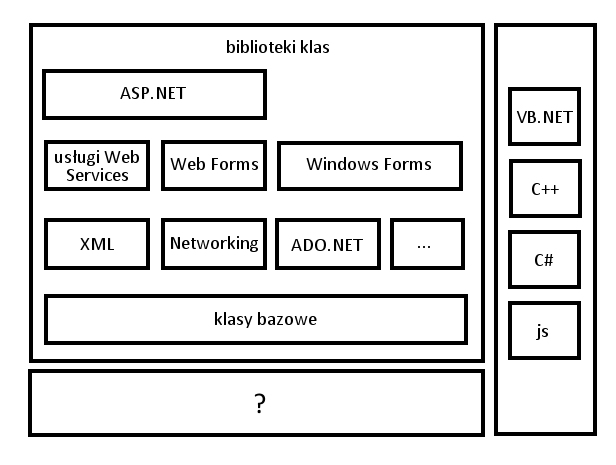
Pytanie nr 40
Jakiego rodzaju mechanizm kontroli bezpieczeństwa wykonywania aplikacji zawiera środowisko uruchomieniowe platformy .NET Framework?
A. Mechanizm wykonywania aplikacji dla bibliotek klas
B. Mechanizm wykonywania aplikacji realizowany przez frameworki aplikacji internetowych (ASP.NET)
C. Mechanizm wykonywania aplikacji realizowany przez funkcję Windows API (Application Programming Interface)
D. Mechanizm wykonywania aplikacji oparty na uprawnieniach kodu (CAS - Code Access Security) i na rolach (RBS - Role-Based Security)
Pytanie nr 41
Co to jest DBMS?
A. Strukturalny język zapytań kierowanych do bazy danych
B. System zarządzania bazą danych
C. Obiektowy język programowania do generowania stron www
D. Kaskadowy arkusz stylów do opisu wyglądu strony www
Pytanie nr 42
Który z odsyłaczy posiada poprawną konstrukcję?
A. <a href='mailto:adres'> tekst </a>
B. <a href='http://adres'> tekst </a>
C. <a href="http://adres"> tekst <a>
D. <a href="mailto:adres"> tekst </a>
Pytanie nr 43
Fragment kodu napisany w języku HTML zamieszczony w ramce przedstawia listę
A. wypunktowaną
B. numerowaną
C. odnośników
D. skrótów

Pytanie nr 44
Polecenie colspan służy do łączenia komórek tabeli w poziomie, natomiast rowspan w pionie. Którą z tabel wyświetli fragment kodu napisany w języku HTML?
A. A
B. B
C. C
D. D
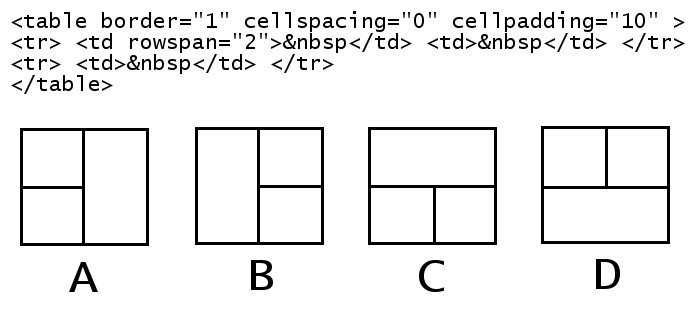
Pytanie nr 45
W znaczniku <head> (w części <meta ... >) strony www NIE umieszcza się informacji dotyczącej
A. autora
B. kodowania
C. typu dokumentu
D. automatycznego odświeżania
Pytanie nr 46
Wskaż sposób, w jaki należy odwołać się do pliku default.css, jeśli index.html znajduje się bezpośrednio w katalogu Strona?
A. <link rel="stylesheet" type="text/css" href="./style/default.css" />
B. <link rel="stylesheet" type="text/css" href="C:/style/default.css" />
C. <link rel="stylesheet" type="text/css" href="...styledefault.css" />
D. <link rel="stylesheet" type="text/css" href="c:style/default.css" />
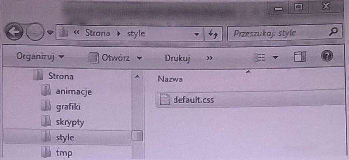
Pytanie nr 47
Wskaż stwierdzenie, które jest prawdziwe dla następującej definicji stylu:
A. Jest to styl lokalny
B. Zdefiniowano dwie klasy
C. Akapit będzie transponowany na małe litery
D. Odnośnik będzie pisany czcionką 14 punktów

Pytanie nr 48
W palecie kolorów RGB kolor żółty jest połączeniem dwóch kolorów: zielonego i czerwonego. Który z kodów szesnastkowych oznacza kolor żółty?
A. #FF00FF
B. #00FFFF
C. #FFFF00
D. #F0F0F0
Pytanie nr 49
Który z formatów NIE pozwala na zapis plików animowanych?
A. GIF
B. ACE
C. SWF
D. SVG
Pytanie nr 50
Który z formatów graficznych pozwala na zapis przejrzystego tła?
A. GIF
B. RAW
C. BMP
D. JPEG
Pytanie nr 51
Proces walidacji strony internetowej to
A. zespół działań mających na celu zwiększenie oglądalności
B. sprawdzenie jej w celu wyeliminowania błędów
C. publikowanie w sieci
D. promocja strony
Pytanie nr 52
Które oprogramowanie NIE JEST systemem zarządzania treścią (CMS)?
A. Joomla
B. Apache
C. Mambo
D. WordPress
Pytanie nr 53
Który z formatów zapewnia największa redukcję rozmiaru pliku dźwiękowego?
A. WAV
B. PCM
C. MP3
D. CD-Audio
Pytanie nr 54
Wskaż prawidłową kolejność tworzenia bazy danych
A. Określenie celu, utworzenie relacji, stworzenie tabel, normalizacja
B. Określenie celu, normalizacja, utworzenie relacji, stworzenie tabel
C. Określenie celu, stworzenie tabel, utworzenie relacji, normalizacja
D. Określenie celu, normalizacja, stworzenie tabel, utworzenie relacji
Pytanie nr 55
Wskaż typ relacji pomiędzy tabelami: Tabela1 i Tabela3
A. Jeden do jednego
B. Wiele do jednego
C. Jeden do wielu
D. Wiele do wielu

Pytanie nr 56
Które z pól są umieszczone w formularzu?
A. Textarea, Option, Input(Chechbox), Input(Checkbox), Input(Submit) Input(Reset)
B. Input(Text), Select, Input(Radio), Input(Radio), Input(Submit), Input(Reset)
C. Textarea, Select, Input(Radio), Input(Radio), Input(Reset), Input(Submit)
D. Input(Text), Input(Chechbox), Select, Select, Input(Submit), Input(Reset)
Pytanie nr 57
Którą z właściwości pola tabeli należy zdefiniować, aby pole przyjmowało dane składające się wyłącznie z cyfr?
A. Tagi inteligentne
B. Wartość domyślną
C. Maskę wprowadzania
D. Regułę sprawdzania poprawności

Pytanie nr 58
Którego ze słów kluczowych języka SQL należy użyć, aby wyeliminować duplikaty?
A. LIKE
B. DISTINCT
C. ORDER BY
D. GROUP BY
Pytanie nr 59
Które ze stwierdzeń prawidłowo charakteryzuje zdefiniowaną tabelę: CREATE TABLE dane (kolumna INTEGER(3));
A. Tabela o nazwie dane posiada trzy kolumny liczb całkowitych
B. Tabela o nazwie dane posiada jedną kolumnę liczb całkowitych
C. Tabela posiada jedną kolumnę zawierającą trzy elementowe tablice
D. Kolumny tabeli dane nazywają się: kolumna1, kolumna2, kolumna3
Pytanie nr 60
Polecenie REVOKE SELECT ON nazwa1 FROM nazwa2 w języku SQL umożliwia
A. nadanie uprawnień z użyciem zdefiniowanego schematu
B. odbieranie uprawnień użytkownikowi
C. usuwanie użytkownika z bazy
D. nadawanie praw do tabeli
Pytanie nr 61
Które polecenie wydane z konsoli systemu operacyjnego, zawierające w swojej składni opcję --repair, umożliwia naprawę bazy danych?
A. mysqlcheck
B. mysqldump
C. truncate
D. create
Pytanie nr 62
Które polecenie wydane z konsoli systemowej dokona przywrócenia bazy danych?
A. mysqldump -u root -p baza > kopia.sql
B. mysqldump -u root -p baza < kopia.sql
C. mysql -u root -p baza < kopia.sql
D. mysql -u root -p baza > kopia.sql
Pytanie nr 63
Polecenie w języku SQL GRANT ALL PRIVILEGES ON klienci TO pracownik
A. nadaje uprawnienie grupie klienci do tabeli pracownik
B. odbiera wszystkie uprawnienia pracownikowi do tabeli klienci
C. skopiuje uprawnienia z grupy klienci na użytkownika pracownik
D. nadaje wszystkie uprawnienia do tabeli klienci użytkownikowi pracownik
Pytanie nr 64
Która z wymienionych funkcji sortowania wykorzystywana w języku PHP sortuje tablicę asocjacyjną według indeksów
A. sort()
B. rsort()
C. asort()
D. ksort()
Pytanie nr 65
W skrypcie PHP należy utworzyć cookie o nazwie owoce które przyjmie wartość jabłko. Cookie ma być dostępne przez jedną godzinę od jego utworzenia. W tym celu należy w skrypcie PHP użyć funkcji:
A. cookie("owoce","jabłko",3600);
B. cookie("jabłko","owoce",3600);
C. setcookie("owoce","jabłko",time()+3600);
D. setcookie("jabłko","owoce",time()+3600);
Pytanie nr 66
Wskaż słowo kluczowe w języku C++ dodawane przed wbudowanym typem danych, które przesuwa zakres liczby wyłącznie nieujemne
A. long
B. const
C. short
D. unsigned
Pytanie nr 67
W językach programowania tylko zmienna jednego typu wbudowanego może przyjmować wyłącznie dwie wartości. Jest to typ
A. logiczny
B. znakowy
C. tablicowy
D. łańcuchowy
Pytanie nr 68
Instrukcja języka PHP tworząca obiekt pkt dla zdefiniowanej w ramce klasy Punkt ma postać
A. pkt Punkt;
B. pkt = new Punkt();
C. pkt Punkt();
D. Punkt() pkt;

Pytanie nr 69
Wskaż wynik wykonania skryptu napisanego w języku PHP
A. A
B. B
C. C
D. D

Pytanie nr 70
Które ze stwierdzeń dotyczących języków programowania NIE jest prawdziwe
A. C++ jest językiem obiektowym
B. JavaScript jest językiem skryptowym
C. SQL jest językiem programowania strukturalnego
D. PHP jest językiem do tworzenia stron w czasie rzeczywistym
Pytanie nr 71
Jaka wartość zostanie wypisana na standardowym wyjściu dla zamieszczonego w ramce fragmentu programu napisanego w języku C++
A. 0
B. 2
C. 3
D. 32
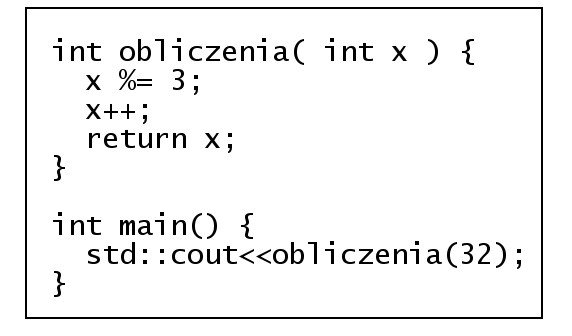
Pytanie nr 72
Wskaż stwierdzenie, które nie jest prawdziwe dla następującej definicji funkcji w języku C++?
A. Funkcja zwraca wartość
B. Funkcja nie zwraca wartości
C. Funkcja posiada dwa parametry
D. Funkcja odwołuje się do parametrów przez referencję

Pytanie nr 73
Element zadeklarowany w języku C++ double *x; to
A. Parametr formalny typu rzeczywistego
B. Zmienna rzeczywista
C. Zmienna całkowita
D. Wskaźnik
Pytanie nr 74
Wskaż prawidłową kolejność tworzenia aplikacji
A. Specyfikacja wymagań, analiza wymagań klienta, tworzenie, wdrażanie,testy
B. Analiza wymagań klienta, specyfikacja wymagań tworzenie, testy, wdrażanie
C. Tworzenie, analiza wymagań klienta, specyfikacja wymagań, wdrażanie, testy
D. Analiza wymagań klienta, specyfikacja wymagań, tworzenie, wdrażanie, testy
Pytanie nr 75
Jaką wartość zwróci funkcja zao zdefiniowana w języku C++, wywołana z aktualnym parametrem 3.55
A. 3
B. 4
C. 3.5
D. 4.05
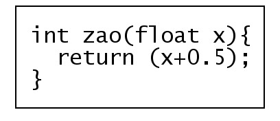
Pytanie nr 76
Proces tłumaczenia kodu źródłowego pisanego przez programistę na zrozumiały dla komputera kod maszynowy to
A. debugowanie
B. uruchamianie
C. kompilowanie
D. implementowanie
Pytanie nr 77
Które ze stwierdzeń, w odniesieniu do zamieszczonej w ramce definicji funkcji, jest poprawne?
A. Pętla wykona się tylko raz
B. Funkcja posiada pętlę powtarzającą się 3 razy
C. Tekst będzie wczytywany do momentu podania liczby większej niż 3
D. Wczytanie tekstu zakończy się, gdy tekst będzie się składał przynajmniej z 3 znaków

Pytanie nr 78
Po wykonaniu zamieszczonego w ramce skryptu napisanego w języku JavaScript w przeglądarce zostanie wypisana wartość
A. 12,4
B. 12,5
C. 15,4
D. 15,5
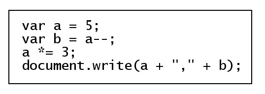
Pytanie nr 79
Poprzez deklarację var x="true"; w języku JavieScript tworzy się zmienną typu
A. Logicznego
B. Liczbowego
C. String (ciąg znaków)
D. Nieokreślonego (undefined)
Pytanie nr 80
Platforma wspierająca programowanie w technologii .NET to
A. db2
B. eclipse
C. framework
D. middleware
Pytanie nr 81
Proces, w którym wykrywa się i usuwa błędy w kodzie źródłowym programów, to
A. Kompilowanie
B. Debugowanie
C. standaryzacja
D. Normalizacja
Pytanie nr 82
Aby ustawić tło na stronie www należy użyć polecenia
A. <background=""></background>
B. <body bgcolor=""></body>
C. <bgcolor=""></bgcolor>
D. <body background=""></body>
Pytanie nr 83
Parametr face znacznika <font> służy do określenia
A. barwy czcionki
B. nazwy czcionki
C. efektów czcionki
D. wielkości czcionki
Pytanie nr 84
Kodowanie w standardzie ISO-8859-2 stosowane jest w celu poprawnego wyświetlenia
A. symboli matematycznych
B. polskich liter, takich jak: ś, ć, ń, ó, ą
C. znaków specjalnych dla języka kodu strony
D. znaków zarezerwowanych dla języka opisu strony
Pytanie nr 85
Zamieszczony w ramce kod wyświetla tabelę składajacą się z
A. dwóch wierszy i dwóch kolumn
B. dwóch wierszy i jednej kolumny
C. jednego wiersza i dwóch kolumn
D. jednego wiersza i jednej kolumny
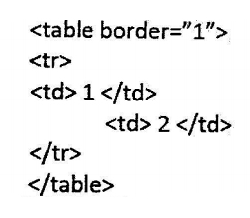
Pytanie nr 86
Kaskadowe arkusze stylów tworzy się w celu
A. ułatwienia użytkownikowi nawigacji
B. uzupełnienia strony internetowej o treści tekstowe
C. przyspieszenia wyświetlania grafiki na stronie internetowej
D. definiowania sposobu formatowania elementów strony internetowej
Pytanie nr 87
Które polecenie w CSS służy do załączenia zewnętrznego arkusza stylów?
A. open
B. import
C. require
D. include
Pytanie nr 88
Selektor CSS a:link {color:red} zawarty w kaskadowych arkuszach stylów definiuje
A. klasę
B. pseudoklasę
C. identyfikator
D. pseudoelement
Pytanie nr 89
Jak nazywa się edytor wspomagający tworzenie stron internetowych, którego sposób działania można w polskim tłumaczeniu określić jako: otrzymujesz to, co widzisz?
A. IDE
B. WYSIWYG
C. WEB STUDIO
D. VISUAL EDITOR
Pytanie nr 90
Kolor 255 12 12 w modelu RGB na stronie www powinien być zapisany w postaci
A. #2551212
B. #EE0C0C
C. #AB1A1D
D. #FF0C0C
Pytanie nr 91
CMYK to zestaw czterech podstawowych kolorów farb drukarskich:
A. turkusowego, błękitnego, białego, różowego
B. turkusowego, purpurowego, białego, czarnego
C. czerwonego, purpurowego, żółtego, szarego
D. turkusowego, purpurowego, żółtego, czarnego
Pytanie nr 92
Cechą formatu PNG jest
A. obsługa animacji
B. bezstratna kompresja
C. brak obsługi kanału alfa
D. reprezentacja grafiki wektorowej
Pytanie nr 93
Saturacja koloru nazywana jest inaczej
A. jasnością koloru
B. nasyceniem koloru
C. dopełnieniem koloru
D. przezroczystością koloru
Pytanie nr 94
Kanał alfa służy do zdefiniowania
A. jasności i kontrastu kolorów
B. przezroczystość obiektu graficznego
C. zaznaczonego fragmentu obiektu graficznego
D. podstawowych parametrów obiektu graficznego
Pytanie nr 95
Częstotliwość próbkowania ma wpływ na
A. jakość cyfrowego dzwięku
B. jakość analogowego dzwięku
C. amplitudę fali dźwiękowej utworu
D. skalę głośności zapisanego utworu
Pytanie nr 96
Wysokość dźwięku zależy od
A. siły wzbudzenia drgania
B. sposobu pobudzania drgania
C. czasu drgania źródła dzwięku
D. częstotliwości drgania fali akustycznej
Pytanie nr 97
Typ stało-znakowy w języku SQL to
A. char
B. text
C. time
D. bool
Pytanie nr 98
Operator arytmetyczny modulo w języku SQL to
A. /
B. ||
C. &
D. %
Pytanie nr 99
Polecenie w języku SQL ALTER TABLE USA... ma za zadanie
A. usunięcie tabeli USA
B. modyfikację tabeli USA
C. nadpisanie starej tabeli USA
D. utworzenie nowej tabeli USA
Pytanie nr 100
Kod: SELECT imie, pesel, wiek FROM dane WHERE wiek IN (18,30) spowoduje wybranie:
A. imion, nazwisk i numerów PESEL osób w wieku poniżej 18 lat
B. imion, numerów PESEL i wieku osób z przedziału od 18 do 30 lat
C. imion, numerów PESEL i wieku osób posiadających powyżej 30 lat
D. imion, numerów PESEL i wieku osób w wieku równym 18 lub 30 lat
Pytanie nr 101
Aby policzyć wszystkie wiersze tabeli Koty należy użyć polecenia:
A. SELECT COUNT(*) FROM Koty
B. SELECT ROWNUM() FROM Koty
C. SELECT COUNT(Koty) AS ROWNUM
D. SELECT COUNT(ROWNUM) FROM Koty
Pytanie nr 102
Aby podczas tworzenia tabeli utworzyć klucz obcy na wielu kolumnach, należy użyć polecenia
A. CONSTRAINT(nazwisko,imie) FOREIGN KEY REFERENCES osoby (nazwisko, imie)
B. CONSTRAINT(nazwisko,imie) FOREIGN REFERENCES KEY osoby (nazwisko, imie)
C. CONSTRAINT fk_osoba_uczen FOREIGN KEY (nazwisko, imie) REFERENCES osoby (nazwisko,imie)
D. CONSTRAINT fk_osoba_uczen FOREIGN KEY ON (nazwisko, imie) REFERENCES osoby (nazwisko,imie)
Pytanie nr 103
W algebrze relacji operacja selekcji polega na
A. wyelminowaniu pustych wierszy
B. wybraniu krotek spełniających określone warunki
C. wybraniu krotek niezawierających wartości NULL
D. wyelminowaniu krotek z powtarzającymi się polami
Pytanie nr 104
Relacja w bazach danych jest
A. logicznym połączeniem tabel
B. kluczem głównym w relacji tabel
C. algebraicznym połączeniem tabel
D. połączeniem dwóch pól jednej tabeli
Pytanie nr 105
Wskaż poprawną kolejność etapów projektowania relacyjnej bazy danych
A. Selekcja, Określenie relacji, Określenie kluczy podstawowych tabel, Określenie zbioru danych
B. Określenie relacji, Określenie kluczy podstawowych tabel, Selekcja, Określenie zbioru danych
C. Określenie kluczy podstawowych tabel, Określenie zbioru danych, Selekcja, Określenie relacji
D. Określenie zbioru danych, Selekcja, Określenie kluczy podstawowych tabel, Określenie relacji
Pytanie nr 106
Formularze do obsługi baz danych tworzy się w celu
A. raportowania danych
B. wyszukiwania wierszy spełniających dane kryteria
C. wprowadzenia powiązań w relacyjnych bazach danych
D. wygodniejszego wprowadzania, edytowania i usuwania danych
Pytanie nr 107
Integralność referencyjna w modelu relacyjnych baz danych oznacza, że
A. wartość klucza głównego oraz klucza obcego nie jest pusta
B. klucz główny lub klucz obcy nie zawierają wartości NULL
C. każdemu kluczowi głównemu odpowiada dokładnie jeden klucz obcy w tabeli lub tabelach powiązanych
D. wartość klucza obcego w danej tabeli musi być albo równa wartości klucza głównego w tabeli z nia powiązanej albo równa wartości NULL
Pytanie nr 108
Deklaracja w języku JavaScript: var x=true; powoduje, że zmienna x jest typu
A. logicznego
B. liczbowego
C. ciąg znaków
D. wyliczeniowego
Pytanie nr 109
Obiekt typu array w języku Javascript służy do przechowywania
A. wielu wartości lub funkcji
B. wielu wartości dowolnego typu
C. wielu wartości wyłącznie liczbowych
D. wielu wartości wyłącznie tekstowych
Pytanie nr 110
Ukrywanie pewnych pól lub metod obiektów danej klasy tak, aby były one dostępne tylko metodom wewnętrznym tej klasy lub funkcjom zaprzyjaźnionym, to
A. polimorfizm
B. hermetyzacja
C. konkatenacja
D. dziedziczenie
Pytanie nr 111
Odwoływanie funkcji do samej siebie to
A. iteracja
B. rekurencja
C. hermetyzacja
D. dziedziczenie
Pytanie nr 112
W języku PHP zmienna $_GET jest zmienną
A. predefiniowaną, używaną do przekazywania danych do skryptów PHP poprzez adres strony
B. predefiniowaną, używaną do gromadzenia wartości formularza po nagłówkach zlecenia HTTP (danych z formularza nie można zobaczyć w adresie)
C. zdefiniowaną przez twórcę strony, służącą do przekazywania danych z formularza przez adres strony
D. zwykłą, zdefiniowaną przez twórcę strony
Pytanie nr 113
W języku PHP w instrukcji switch musi występować
A. instrukcja default
B. konstrukcja switch(wyrażenie)
C. przynajmniej dwie instrukcje case
D. instrukcja break po każdej instrukcji case
Pytanie nr 114
Konstruktor w języku PHP jest metodą o nazwie
A. _new
B. _open
C. _create
D. _construct
Pytanie nr 115
Debugger to program służący do
A. badania właściwości programu
B. sprawdzania szybkości programu
C. wyszukiwania błędów w kodzie programu
D. zoptymalizowanie pamięci używanej przez aplikację
Pytanie nr 116
Kod zamieszczony w ramce spowoduje wypisanie liczb
A. 2 4 6 8
B. 1 3 5 7 9
C. 2 4 6 8 10
D. 1 2 3 4 5 6 7 8 9 10

Pytanie nr 117
Który kod jest alternatywny do kodu zamieszczonego w ramce?
A. A
B. B
C. C
D. D
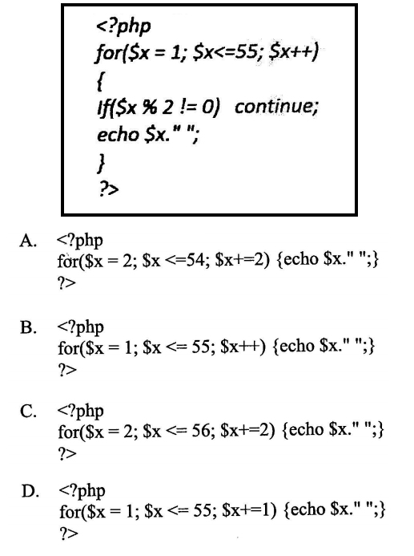
Pytanie nr 118
Zamieszczony w ramce fragment skryptu w języku JavaScript
A. przypisze zmienniej s zmienną t
B. wyświetli długość napisu ze zmiennej t
C. przypisze zmiennej s długość napisu ze zmiennej t
D. przypisze zmiennej s fragment napisu ze zmiennej t, o określonej przez zmienną length długości

Pytanie nr 119
Zamieszczony w ramce fragment kodu w JavaScript wypisze
A. "ze"
B. "wo"
C. "owodzeni"
D. "wodzenia"

Pytanie nr 120
Który fragment kodu JavaScript zwróci wartość true?
A. "a" > "b"
B. "ab" > "c"
C. "abc" > "def"
D. "def" > "abc"
Pytanie nr 121
W kodzie PHP znak "//" oznacza
A. początek skryptu
B. operator alernatywy
C. operator dzielenia całkowitego
D. początek komentarza jednoliniowego
Pytanie nr 122
Zapisując hasło użytkownika serwisu WWW (np. bankowości internetowej), w celu jego zabezpieczenia przed odtajnieniem, zwykle używa się funkcji
A. klucza
B. cyklometrycznych
C. abstrakcyjnych
D. mieszających
Pytanie nr 123
W celu określenia wysokości obrazka wyświetlonego na stronie WWW należy wykorzystać właściwość CSS o nazwie
A. width
B. padding
C. height
D. margin
Pytanie nr 124
Aby ustawić czcionkę Verdana w kodzie CSS, należy wykorzystać właściwość
A. font-family: Verdana;
B. font-style: Verdana;
C. font-name: Verdana;
D. font-weight: Verdana;
Pytanie nr 125
Funkcja zapisana językiem PHP służy do
A. połączenia z bazą danych
B. ustawienia hasła do bazy danych
C. zabezpieczenia bazy danych
D. pobrania danych z bazy danych

Pytanie nr 126
Kwerenda pozwalająca na wprowadzenie zmian w wielu rekordach lub przeniesienie wielu rekordów przy użyciu pojedynczej operacji, nosi nazwę kwerendy
A. krzyżowej
B. funkcjonalnej
C. wybierającej
D. parametrycznej
Pytanie nr 127
Wskaż rezultat działania fragmentu kodu JavaScript
A. Usunięcie akapitu ze strony
B. Dodanie akapitu na koniec strony
C. Wyświetlenie okna dialogowego z napisem akapit
D. Dodanie akapitu na początku strony

Pytanie nr 128
Fizyczny model replikacji bazy danych przedstawiony na rysunku jest modelem
A. rozproszonym
B. centralnego subskrybenta
C. równorzędnym
D. centralnego wydawcy
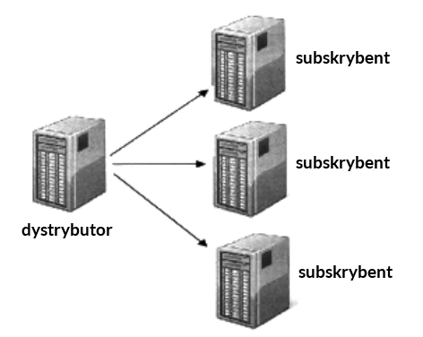
Pytanie nr 129
Za pomocą którego protokołu należy wysłać pliki na serwer WWW?
A. DHCP
B. FTP
C. POP3
D. DNS
Pytanie nr 130
Wynikiem działania zamieszczonej pętli zapisanej językiem PHP jest wypisanie kolejnych liczb
A. od 10 do 1
B. od 1 do 10
C. od 10 do 2
D. od 2 do 10
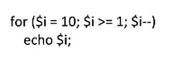
Pytanie nr 131
Które z poleceń naprawi uszkodzoną tabelę w języku SQL?
A. REGENERATE TABLE tbl_name
B. REPAIR TABLE tblname
C. OPTIMIZE TABLE tbl_name
D. ANALYZE TABLE tbl_name
Pytanie nr 132
Który z wymienionych formatów plików graficznych obsługuje przezroczystość?
A. JPG
B. PNG
C. NEF
D. BMP
Pytanie nr 133
Który zapis stylu CSS ustawi tło bloku na kolor niebieski?
A. div {shadow: blue;}
B. div {border-color: blue;}
C. div {color: blue;}
D. div {background-color: blue;}
Pytanie nr 134
Domyślna nazwa pliku konfiguracyjnego serwera Apache to
A. .configuration
B. configuration.php
C. htaccess.cnf
D. .htaccess
Pytanie nr 135
Organizacja zajmująca się ustalaniem standardu dla języka HTML nosi nazwę
A. W3C
B. ISO
C. NASK
D. WYSIWYG
Pytanie nr 136
Który z wymienionych systemów nie jest systemem CMS?
A. Joomla
B. Adobe Flash
C. WordPress
D. Drupal
Pytanie nr 137
Która ze zdefiniowanych funkcji w języku PHP jako wynik zwraca połowę kwadratu wartości przekazanej?
A. function licz($a) { echo $a*$a/2; }
B. function licz($a) { return $a/2; }
C. function licz($a) { return $a*$a/2; }
D. function licz($a) { echo $a/2; }
Pytanie nr 138
W strukturalnych językach programowania w celu przechowania informacji o 50 uczniach (ich imionach, nazwiskach, średniej ocen) należy użyć
A. tablicy 50 elementów o składowych strukturalnych
B. struktury 50 elementów o składowych typu tablicowego
C. tablicy 50 elementów o składowych łańcuchowych
D. klasy 50 elementów typu tablicowego
Pytanie nr 139
Aby zobaczyć wyniki działania skryptu napisanego w języku PHP, będącego elementem strony WWW, musi być on
A. zinterpretowany po stronie serwera
B. skompilowany po stronie klienta
C. skompilowany po stronie serwera
D. zinterpretowany po stronie klienta
Pytanie nr 140
Projektowanie logicznego układu witryny polega na
A. rozmieszczeniu elementów w konkretnych miejscach witryny
B. opracowaniu zestawu grafik dla witryny
C. zdefiniowaniu treści witryny
D. ustaleniu adresów URL dla podstron witryny
Pytanie nr 141
Prosta animacja może być zapisana w formacie
A. PSD
B. BMP
C. GIF
D. TIFF
Pytanie nr 142
Która z instrukcji umożliwia wysłanie tekstu do przeglądarki?
A. echo
B. exit
C. break
D. type
Pytanie nr 143
Aby stworzyć tabelę w bazie danych, należy zastosować polecenie SQL
A. ADD TABLE
B. NEW TABLE
C. PLUS TABLE
D. CREATE TABLE
Pytanie nr 144
Zdarzenie JavaScript, będące reakcją na pojedynczo kliknięty dowolny element strony, nosi nazwę
A. onClick
B. onDblClick
C. onLoad
D. onKeyDown
Pytanie nr 145
W skład typowego frameworka wchodzą
A. zarządzanie komunikacją z bazą danych, mechanizm uruchamiania i przetwarzania akcji
B. domena i obsługa błędów
C. obsługa formularzy i wbudowany serwer
D. mechanizm uruchamiania i przetwarzania akcji, oraz certyfikat http
Pytanie nr 146
W celu stworzenia relacji wiele do wielu łączącej tabele A i B wystarczy, że
A. tabela A będzie zawierała te same pola co tabela B
B. wiele rekordów z tabeli A zduplikuje się w tabeli B
C. zdefiniuje się trzecią tabelę z kluczami obcymi do tabel A i B
D. tabelę A połączy się z tabelą B poprzez zdefiniowanie kluczy obcych
Pytanie nr 147
W celu zapewnienia spójności danych w bazie programu Microsoft Access należy skorzystać
A. z więzów integralności
B. z kwerendy aktualizującej
C. z defragmentacji bazy
D. z archiwizacji bazy
Pytanie nr 148
W załączonym fragmencie kodu CSS kolor jest zapisany w postaci
A. HSL
B. dziesiętnej
C. CMYK
D. szesnastkowej

Pytanie nr 149
W języku skryptowym JavaScript zmienne mogą być deklarowane
A. w momencie pierwszego użycia zmiennej
B. tylko na początku skryptu
C. tylko jeśli podamy typ zmiennej i jej nazwę
D. zawsze z poprzedzającym nazwę znakiem $
Pytanie nr 150
W językach programowania zmienna typu integer służy do przechowywania
A. znaku
B. liczby całkowitej
C. liczby rzeczywistej
D. wartości logicznej
Pytanie nr 151
Jeśli rozmiar pliku graficznego jest zbyt duży do publikacji w Internecie, należy
A. dodać kanał alfa
B. zmniejszyć jego rozdzielczość
C. zwiększyć jego głębię kolorów
D. zapisać w formacie BMP
Pytanie nr 152
Które z poleceń umożliwia dodanie kolumny zadaniekompletne do tabeli zadania?
A. ALTER TABLE zadania ADD COLUMN zadaniekompletne int
B. ADD COLUMN zadaniekompletne WITH zadania
C. CREATEINDEX zadania ADD COLUMN zadaniekompletne int
D. INSERT INTO zadania VALUES zadaniakompletne
Pytanie nr 153
W bazie danych, w celu uporządkowania listy uczniów według roku urodzenia, należy użyć polecenia
A. SELECT imie,nazwisko,klasa from uczniowie group by rok_urodzenia
B. SELECT imie,nazwisko,klasa from uczniowie order by rok_urodzenia
C. SELECT imie,nazwisko,klasa from uczniowie order by nazwisko
D. SELECT imie,nazwisko,klasa from uczniowie where rok_urodzenia = 1994
Pytanie nr 154
Wskaż dwa sposoby zabezpieczenia bazy danych Microsoft Access
A. Ustalanie hasła do otwarcia bazy danych oraz zabezpieczeń na poziomie użytkownika
B. Zaszyfrowanie pliku bazy danych oraz SMSy z kodem autoryzującym
C. Funkcje anonimowe oraz ustalenie hasła otwarcia bazy danych
D. Ustalenie zabezpieczeń na poziomie użytkownika oraz sesji
Pytanie nr 155
W zamieszczonym przykładzie pseudoklasa hover sprawi, że styl pogrubiony będzie przypisany
A. odnośnikowi, w momencie kiedy najechał na niego kursor myszy
B. wszystkim odnośnikom nieodwiedzonym
C. każdemu odnośnikowi niezależnie od aktualnego stanu
D. wszystkim odnośnikom odwiedzonym

Pytanie nr 156
Certyfikat SSL jest stosowany do
A. zapisania danych o sesjach tworzonych w witrynie
B. zidentyfikowania właściciela domeny
C. deszyfracji transmitowanych danych
D. blokowania szkodliwego oprogramowania w witrynie
Pytanie nr 157
W języku SQL przywilej SELECT polecenia GRANT pozwala użytkownikowi baz danych na
A. odczyt danych z tabeli
B. tworzenie tabeli
C. usunięcie danych z tabeli
D. modyfikowanie danych w tabeli
Pytanie nr 158
W języku HTML atrybut alt znacznika img jest wykorzystywany w celu zdefiniowania
A. ścieżki i nazwy pliku źródłowego grafiki
B. tekstu, który będzie wyświetlony, jeśli nie może być wyświetlona grafika
C. podpisu, który zostanie wyświetlony pod grafiką
D. atrybutów grafiki, takich jak rozmiar, obramowanie, wyrównanie
Pytanie nr 159
Warunek zapisany językiem PHP wypisze liczbę, gdy
A. jest ona parzysta
B. jest ona liczbą pierwszą
C. wynik dzielenia liczby przez 2 jest równy 0
D. jest ona dodatnia
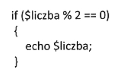
Pytanie nr 160
Analizując przedstawiony kod zapisany w języku HTML, można stwierdzić, że w przeglądarce
A. zostanie ustawiony dolny margines dla bloku B
B. blok B będzie oddalony od bloku A o 20 px
C. blok A będzie przesunięty w lewo o 20 px
D. bloki A i B będą nachodzić na siebie.

Pytanie nr 161
Baza danych zawiera tabelę o nazwie pracownicy o polach: nazwisko, imie, pensja, wiek. Jak wygląda składnia polecenia wyznaczającego średnią pensję pracowników?
A. select AVG (nazwisko) into pensja
B. select VAR (pracownicy) into pensja
C. select AVG (pensja) from pracownicy
D. select VAR (pensja) from nazwisko
Pytanie nr 162
Do reprezentacji liczb zmiennoprzecinkowych w języku C stosowany jest typ
A. int
B. bool
C. char
D. double
Pytanie nr 163
Polecenie SQL o treści: UPDATE artykuly SET cena = cena * 0.7 WHERE kod = 2; oznacza
A. w tabeli artykuly obniża wartość każdego pola cena o 30% dla wszystkich artykułów
B. w tabeli artykuly obniża wartość każdego pola cena dla którego pole kod jest równe 2
C. wprowadzenie w tabeli artykuly nowych pól cena i kod
D. wprowadzenie w tabeli artykuly pola o nazwie cena ze znacznikiem kod
Pytanie nr 164
Do edycji grafiki wektorowej stosuje się program
A. Paint
B. Audacity
C. Wordpad
D. Corel Draw
Pytanie nr 165
W programowaniu obiektowym mechanizm współdzielenia pól i metod klasy w taki sposób, że klasa pochodna zawiera metody zdefiniowane w klasie bazowej nazywa się
A. hermetyzacją
B. wirtualizacją
C. polimorfizmem
D. dziedziczeniem
Pytanie nr 166
Który z wymienionych znaczników języka HTML nie jest stosowany w celu formatowania tekstu?
A. <em>
B. <sub>
C. <div>
D. <strong>
Pytanie nr 167
Aby zdefiniować w języku HTML listę nienumerowaną, należy użyć znacznika
A. <dd>
B. <dt>
C. <ol>
D. <ul>
Pytanie nr 168
W języku CSS właściwość font-size przyjmuje, według słów kluczowych, wartości
A. tylko big i small
B. wyłączenie small, medium, large
C. jedynie small, smaller,large, larger
D. ze zbioru xx-small, x-small, medium, large, x-large, xx-large
Pytanie nr 169
W języku CSS, w celu zdefiniowania wewnętrznego górnego marginesu, czyli odstepu między elementem a otaczającym go obramowaniem, należy użyć polecenia
A. padding-top
B. outline-top
C. border-top
D. local-top
Pytanie nr 170
Funkcja drzewo kontekstowe edytor WYSIWYG Adobe Dreamweaver służy do
A. wyświetlania interaktywnego drzewa struktury HTML dla zawartości statycznej i dynamicznej
B. definiowania kaskadowych arkuszy stylów dołączonych do witryny
C. formatowanie tekstu przy pomocy dostępnych znaczników
D. tworzenia szablonu strony internetowej
Pytanie nr 171
Aby witryna internetowa prawidłowo skalowała się w urządzeniach mobilnych, należy wielkość czcionki zdefiniować
A. w pikselach
B. w procentach
C. w milimetrach
D. tylko znacznikami big i small
Pytanie nr 172
Znacznik meta języka HTML należy umieścić
A. pomiędzy znacznikami body
B. w części nagłówkowej witryny internetowej
C. pomiędzy znacznikami paragrafu
D. w stopce witryny internetowej
Pytanie nr 173
Prawidłowy, zgodny ze standardem języka XHTML, zapis samozamykającego się znacznika odpowiadającego za łamanie linii ma postać
A. </ br>
B. <br />
C. </br/>
D. <br> </br>
Pytanie nr 174
Najprostszą i najmniej pracochłonną metodą przetestowania działania witryny internetowej w wielu przeglądarkach i ich różnych wersjach jest
A. skorzystanie z walidatora języka HTML
B. skorzystanie z emulatora przeglądarek internetowych np. Browser Sandbox
C. zainstalowanie na kilku komputerach różnych przeglądarek i testowanie witryny
D. testowanie witryny w programie Internet Explorer, zakładając kompatybilność innych przeglądarek
Pytanie nr 175
Aby przenieść witrynę na serwer, można skorzystać z oprogramowania
A. Bugzilla
B. Go!Zilla
C. FileZilla
D. CloneZilla
Pytanie nr 176
Kolor zapisany kodem RGB, o wartości rgb(255, 128, 16) w kodzie szesnastkowym będzie miał wartość:
A. #008010
B. #ff0f10
C. #ff8010
D. #ff8011
Pytanie nr 177
Plik graficzny należy zapisać w formacie GIF, jeżeli
A. jest to grafika wektorowa
B. jest to obraz stereoskopowy
C. jest potrzeba zapisu obrazu bez kompresji
D. jest potrzeba zapisu obrazu lub animacji
Pytanie nr 178
Aby dopasować dźwięk do danego poziomu głośności, należy użyć efektu
A. wyciszenia
B. normalizacji
C. podbicia basów
D. usuwania szumów
Pytanie nr 179
Instrukcja DROP języka SQL ma za zadanie
A. usunąć istniejący obiekt
B. zmienić parametry obiektu
C. zaktualizować dane obiektu
D. dodać nowy obiekt
Pytanie nr 180
Baza danych zawiera tabelę uczniowie z polami: imie, nazwisko, klasa. Aby odnaleźć imiona i nazwiska tych uczniów, których nazwiska rozpoczynają się literą M, należy zastosować polecenie SQL
A. SELECT nazwisko, imie FROM uczniowie WHERE nazwisko IN "M%";
B. SELECT nazwisko, imie FROM uczniowie WHERE nazwisko LIKE "M%";
C. SELECT nazwisko, imie FROM uczniowie ORDER BY nazwisko = "M%";
D. SELECT nazwisko, imie FROM uczniowie ORDER BY nazwisko IN "M%";
Pytanie nr 181
Baza danych zawiera tabele artykuły z polami: nazwa, typ, producent, cena. Aby wyświetlić wszystkie nazwy artykułów wyłącznie typu pralka, dla których cena jest z przedziału 1000 PLN i 1500 PLN, należy zastosować polecenie
A. SELECT nazwa FROM artykuly WHERE typ="pralka" AND cena FROM 1000 TO 1500;
B. SELECT nazwa FROM artykuly WHERE typ="pralka" OR cena BETWEEN 1000 OR 1500;
C. SELECT nazwa FROM artykuly WHERE typ="pralka" OR cena BETWEEN 1000 AND 1500;
D. SELECT nazwa FROM artykuly WHERE typ="pralka" AND cena BETWEEN 1000 AND 1500;
Pytanie nr 182
Wartość pola tabeli pełniącego rolę klucza podstawowego
A. musi być unikalna
B. jest zawsze typu numerycznego
C. służy do szyfrowania zawartości tabeli
D. może przyjmować wartość pustą (NULL)
Pytanie nr 183
Aby utworzyć relację jeden do wielu, w tabeli po stronie wiele, należy zdefiniować
A. klucz obcy wskazujący na klucz obcy tabeli po stronie jeden
B. klucz sztuczny odnoszący się do kluczy podstawowych obu tabel
C. klucz obcy wskazujący na klucz podstawowy tabeli po stronie jeden
D. klucz podstawowy wskazujący na klucz podstawowy tabeli po stronie jeden
Pytanie nr 184
Narzędziem służącym do grupowania i prezentowania informacji z wielu rekordów w celu ich drukowania lub rozpowszechniania jest
A. raport
B. kwerenda
C. formularz
D. makropolecenie
Pytanie nr 185
Aby uprościć wprowadzenie i edytowanie danych w tabeli, należy zdefiniować
A. kwerendę SELECT
B. formularz
C. raport
D. filtr
Pytanie nr 186
Baza danych 6-letniej szkoły podstawowej zawiera tabelę szkola z polami: imie, nazwisko, klasa. Wszyscy uczniowie klas 1-5 zdali do następnej klasy. Aby zwiększyć wartość w polu klasa o 1 należy użyć polecenia
A. SELECT szkola FROM klasa=klasa+1 WHERE klasa >=1 AND klasa <=5;
B. SELECT nazwisko, imie FROM klasa=klasa+1 WHERE klasa>1 OR klasa <5;
C. UPDATE szkola SET klasa=klasa+1 WHERE klasa>=1 AND klasa <=5;
D. UPDATE nazwisko, imie SET klasa=klasa+1 WHERE klasa>1 OR klasa<5;
Pytanie nr 187
Uprawnienia obiektowe, nadawane użytkownikom serwera bazy danych, mogą pozwalać lub zabraniać
A. dziedziczyć uprawnienia
B. modyfikować role i konta użytkowników
C. wykonywać instrukcje, takie jak tworzenie kopii zapasowej
D. wykonywać operacje na bazie, takie jak wstawanie lub modyfikowanie danych
Pytanie nr 188
Przed wykonaniem kopii bezpieczeństwa bazy danych, tak aby kopia ta była poprawna i możliwa do późniejszego odtworzenia, należy sprawdzić
A. możliwość udostępnienia bazy danych
B. prawa dostępu do serwera bazy danych
C. poprawność składni zapytań
D. spójność bazy danych
Pytanie nr 189
W MS SQL Server polecenie RESTORE DATABASE służy do
A. odtworzenia bazy danych z kopii bezpieczeństwa
B. odświeżenia bazy danych z kontrolą więzów integralności
C. przebudowania bazy danych w oparciu o buforowane dane
D. usunięcia bazy danych z serwera centralnego subskrybenta
Pytanie nr 190
W języku PHP zmienna typu float przyjmuje wartości
A. logiczne
B. nieliczbowe
C. tylko całkowite
D. zmiennoprzecinkowe
Pytanie nr 191
Dany jest fragment kodu PHP z zdeklarowaną zmienną typu tablicowego. W wyniku wykonania kodu zostanie wpisane imię
A. Anna
B. Tomasz
C. Krzysztof
D. Aleksandra
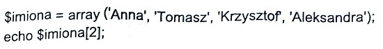
Pytanie nr 192
Przedstawiony kod języka PHP
A. jest błędny, nieznany operator =>
B. definiuje tablicę z trzema wartościami
C. definiuje tablicę z sześcioma wartościami
D. jest błędny, indeksami tablicy mogą być tylko liczby całkowite
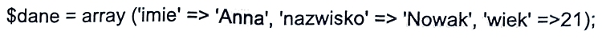
Pytanie nr 193
W języku JavaScript poprawnie nadana zmienna to
A. #imie
B. imie2
C. imię2
D. imię%
Pytanie nr 194
Zakładając, że zmienne: a, b, c przechowują wartości numeryczne, wynikiem działania warunku będzie wypisanie liczby
A. najmniejszej
B. największej
C. nieparzystej
D. parzystej
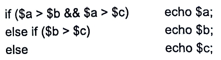
Pytanie nr 195
Fragment kodu języku PHP ma następującą postać. Wynikiem działania pętli będzie wypisanie liczb:
A. 0,1,2,3,4,5,6,7,8,9,10,11,12,13,14,15,16,17,18,19,20
B. 0,1,2,3,4,5,6,7,8,9,10,11,12,13,14,15,16,17,18,19
C. 0,4,8,12,16,20
D. 0,4,8,12,16

Pytanie nr 196
Zadaniem funkcji zapisanej w języku PHP jest
A. Wypisanie liczby parzystej
B. Wypisanie liczby nieparzystej
C. Zwrócenie wartości 1, gdy liczba jest parzysta
D. Zwrócenie wartości 0, gdy liczba jest parzysta

Pytanie nr 197
Wykonanie kodu JavaScript w przeglądarce wymaga
A. debugowania
B. kompilowania
C. interpretowania
D. zamiany na kod maszynowy
Pytanie nr 198
Kod strony WWW napisanej w języku PHP
A. jest wykonywany po stronie klienta
B. jest wykonywany po stronie serwera
C. może być uruchomiony bez obsługi serwera WWW
D. jest przetwarzany na tych samych zasadach co JavaScript
Pytanie nr 199
Zakładając, że zmienna tablicowa $tab jest wypełniona liczbami naturalnymi, wynikiem programu będzie wypisanie
A. największego elementu tablicy
B. najmniejszego elementu tablicy
C. elementu tablicy, który jest równy wartości $tab[0]
D. tych elementów, które są większe od zmiennej $liczba

Pytanie nr 200
Fragment kodu w języku JavaScript realizujący dodawanie dwóch liczb ma następującą postać. Aby dodawanie wykonane było po kliknięciu przycisku o nazwie dodaj, należy w wykropkowane miejsce wstawić
A. <button onselect="return dodaj()">dodaj</button>
B. <button onselect="return dodaj()">oblicz</button>
C. <button onclick="return oblicz()">dodaj</button>
D. <button onclick="return dodaj()">dodaj</button>

Pytanie nr 201
Komentarz w języku JavaScript rozpoczyna się od znaku lub znaków
A. <!--
B. <?
C. //
D. #
Pytanie nr 202
Polecenie pg_connect języka PHP służy do połączenia z bazą
A. mySQL
B. MS SQL
C. PostgreSQL
D. MS ACCESS
Pytanie nr 203
Aby zamieścić aplikację PHP w internecie, należy jej pliki źródłowe skopiować na serwer za pomocą protokołu
A. FTP
B. HTTP
C. SMTP
D. NNTP
Pytanie nr 204
Personalizowanie wyglądu strony dla danego użytkownika i jego identyfikacja w serwisie są możliwe dzięki mechanizmowi
A. obiektów DOM
B. łączenia z bazą
C. formularzy
D. cookie
Pytanie nr 205
Automatyczna weryfikacja właściciela strony udostępnianej przez protokół HTTPS jest możliwa dzięki
A. danym kontaktowym na stronie
B. kluczom prywatnym
C. certyfikatowi SSL
D. danym whois
Pytanie nr 206
Dana jest tablica o nazwie tab wypełniona liczbami całkowitymi różnymi od zera. Przedstawiony kod zapisany w języku PHP ma za zadanie:
A. obliczyć iloczyn wszystkich liczb w tablicy
B. obliczyć wartość bezwzględną elementów tablicy
C. zamienić wszystkie elementy tablicy na liczby z przeciwnym znakiem
D. zamienić elementy tablicy na wartości przechowywane w zmiennej liczba

Pytanie nr 207
Warunek zapisany w JavaScript jest prawdziwy, gdy zmienna x przechowuje
A. pusty napis
B. wartość nie liczbową
C. dowolną całkowitą wartość liczbową
D. dowolną dodatnią wartość liczbową

Pytanie nr 208
Przedstawiona funkcja zapisana kodem JavaScript ma za zadanie:
A. zwrócić wynik potęgowania a^n
B. wpisać kolejne liczby od a do n
C. wpisać wyniki mnożenia a przez n
D. zwrócić iloczyn kolejnych liczb od 1 do a

Pytanie nr 209
Program debugger służy do:
A. interpretacji kodu w wirtualnej maszynie Java
B. analizy wykonywanego programu w celu lokalizacji błędów
C. analizy kodu źródłowego w celu odnalezienia błędów składniowych
D. tłumaczenia kodu zapisanego językiem wyższego poziomu na język maszynowy
Pytanie nr 210
Funkcja phpinfo() pozwala na:
A. debugowanie kodu PHP
B. zainicjowanie kodu w języku PHP
C. sprawdzanie wartości zmiennych użytych w kodzie PHP
D. uzyskanie informacji o środowisku pracy serwera obsługującego PHP
Pytanie nr 211
Którego języka należy użyć, aby zapisać skrypt wykonywany po stronie klienta w przegladarce internetowej?
A. Perl
B. PHP
C. Python
D. JavaScript
Pytanie nr 212
W języku PHP pobrano z bazy danych wyniki działania kwerendy za pomocą polecenia mysql_query(). Aby otrzymać ze zwróconej kwerendy wierszy danych, należy zastosować polecenie:
A. mysql_field_len()
B. mysql_list_fields()
C. mysql_fetch_row()
D. mysql_fetch_lengths()
Pytanie nr 213
Błędy interpretacji kodu PHP są zapisane:
A. w logu pod warunkiem ustawienia odpowiedniego parametru w pliku php.ini
B. w podglądzie zdarzeń systemu Windows
C. w oknie edytora, w którym powstaje kod PHP
D. nigdzie, są ignorowanie przez przeglądarkę oraz interpreter kodu PHP
Pytanie nr 214
Do uruchomienia systemu CMS Joomla! wymagane jest środowisko:
A. PHP i MySQL
B. Apache i PHP
C. Apache, PHP i MySQL
D. IIS, PERL i MySQL
Pytanie nr 215
Do grupowania obszarów na poziomie bloków, które będą formatowane za pośrednictwem znaczników, należy użyć
A. <p>
B. <div>
C. <span>
D. <param>
Pytanie nr 216
Znacznik <i> języka HTML służy do
A. umieszczenia obrazka
B. zdefiniowania formularza
C. zmiany kroju pisma na pochylony
D. zdefiniowania nagłówka w tekście
Pytanie nr 217
Poniżej przedstawiono fragment kodu języka HTML. Jest on definicją listy:
A. A
B. B
C. C
D. D

Pytanie nr 218
Kod języka CSS można umieścić wewnątrz kodu HTML, posługując się znacznikiem
A. <head>
B. <style>
C. <meta>
D. <body>
Pytanie nr 219
Chcąc zdefiniować formatowanie tabeli w języku CSS w taki sposób, aby wiersz, który jest aktualnie wskazywany kursorem myszy, został wyróżniony np. innym kolorem, należy zastosować
A. pseudoklasę :visited
B. pseudoklasę :hover
C. pseudoelement :first-line
D. nowy selektor klasy dla wiersza tabeli
Pytanie nr 220
Aby uzyskać efekt rozstrzelenia liter w selektorze CSS, należy użyć właściwości
A. letter-transform
B. text-decoration
C. letter-spacing
D. text-space
Pytanie nr 221
Blok deklaracji postaci background-attachment: scroll powoduje, że
A. grafika tła będzie powtarzana (kafelki)
B. tło strony będzie przewijane razem z tekstem
C. tło strony będzie stałe, a tekst będzie się przewijał
D. grafika tła będzie wyświetlona w prawym górnym rogu strony
Pytanie nr 222
Ikona, która wyświetlona jest przed adresem, w polu adresowym przeglądarki internetowej lub przy tytule otwartej karty przeglądarki nosi nazwę
A. iConji
B. favicon
C. webicon
D. emoticon
Pytanie nr 223
Aby poprawnie zdefiniować hierarchiczną strukturę tekstu witryny internetowej, należy zastosować
A. znacznik <div>
B. znaczniki <frame> i <table>
C. znacznik <p> z formatowaniem
D. znaczniki <h1>, <h2> oraz <p>
Pytanie nr 224
Która z reguł walidacji strony internetowej jest błędna?
A. Jeżeli w instrukcji używa się kilku atrybutów, ich kolejność powinna być zgodna z alfabetem, np. <img alt="...." src="...." />
B. Wyłączanie znaczników musi następować w odwrotnej kolejności, niż były one włączane, np. <p>....<big>...</big></p>
C. Znaczniki, oprócz samozamykających się, działają do momentu ich wyłączenia znakiem "/", np. <p>...</p>
D. W znacznikach nie są rozróżniane wielkie i małe litery, np. <p> i <P> to ten sam znacznik
Pytanie nr 225
Oznaczenie barwy w postaci #ff00e0 jest równoważne zapisowi
A. rgb(f,0,e0)
B. rgb(ff,0,e0)
C. rgb(255,0,128)
D. rgb(255,0,224)
Pytanie nr 226
Formatem zapisu rastrowych plików graficznych z kompresją bezstratną jest
A. JNG
B. PNG
C. CDR
D. SVG
Pytanie nr 227
Podczas obróbki grafiki rastrowej w programie z obsługą kanałów dodanie kanału alfa oznacza
A. dodanie warstwy z przezroczystością
B. określenie poprawnego balansu bieli
C. zwiększenie głębi ostrości obrazu
D. wyostrzenie krawędzi obrazu
Pytanie nr 228
Aby pozbyć się nienaturalnego odwzorowania ukośnych krawędzi linii w grafice rastrowej, czyli tak zwanego schodkowania, należy zastosować filtr
A. szumu
B. gradientu
C. pikselizacji
D. antyaliasingu
Pytanie nr 229
Formatem bezstratnej kompresji dźwięku jest
A. MP3
B. AAC
C. WWA
D. FLAC
Pytanie nr 230
W języku SQL polecenie INSERT INTO
A. dodaje tabelę
B. dodaje pola do tabeli
C. wprowadza dane do tabeli
D. aktualizuje rekordy określoną wartością
Pytanie nr 231
W języku SQL klauzula DISTINCT instrukcji SELECT sprawi, że zwrócone dane
A. zostaną posortowane
B. nie będą zawierały powtórzeń
C. będą spełniały określony warunek
D. będą pogrupowane według określonego pola
Pytanie nr 232
Zdefiniowano bazę danych z tabelą sklepy o polach: nazwa, ulica, miasto, branza. Aby wyszukać wszystkie nazwy sklepów spożywczych zlokalizowanych wyłącznie we Wrocławiu, należy posłużyć się kwerendą:
A. SELECT sklepy FROM nazwa WHERE branza="spożywczy" BETWEEN miasto="Wrocław";
B. SELECT sklepy FROM branza="spożywczy" WHERE miasto="Wrocław";
C. SELECT nazwa FROM sklepy WHERE branza="spozywczy" OR miasto="Wrocław";
D. SELECT nazwa FROM sklepy WHERE branza="spozywczy" AND miasto="Wrocław";
Pytanie nr 233
Zdefiniowano bazę danych z tabelą podzespoły o polach: model, producent, typ, cena. Aby wyświetlić wszystkie modele pamięci RAM firmy Kingston w kolejności od najtańszej do najdroższej, należy posłużyć się kwerendą:
A. SELECT model FROM podzespoly WHERE typ="RAM" AND producent="Kingston" ORDER BY cena ASC;
B. SELECT model FROM podzespoly WHERE typ="RAM" AND producent="Kingston" ORDER BY cena DESC;
C. SELECT model FROM podzespoly WHERE typ="RAM" OR producent="Kingston" ORDER BY cena DESC;
D. SELECT model FROM producent WHERE typ="RAM" OR producent="Kingston" ORDER BY podzespoly ASC;
Pytanie nr 234
W celu przyspieszenia operacji na bazie danych należy do pól często wyszukiwanych lub sortowanych
A. utworzyć indeks
B. dodać klucz obcy
C. dodać więzy integralności
D. stworzyć osobną tabelę przechowującą tylko te pola
Pytanie nr 235
Jednoznacznym identyfikatorem rekordu w bazie danych jest pole
A. klucza podstawowego
B. klucza obcego
C. numeryczne
D. relacji
Pytanie nr 236
Zdefiniowano bazę danych z tabelą mieszkancy o polach: nazwisko, imie, miasto. Następnie stworzono następujące zapytanie do bazy: SELECT nazwisko, imie FROM mieszkancy WHERE miasto="Poznań" UNION ALL SELECT nazwisko, imie FROM mieszkancy WHERE miasto="Kraków"; Wskaż zapytanie, które zwróci identyczne dane:
A. SELECT nazwisko, imie FROM mieszkancy AS "Poznań" OR "Kraków";
B. SELECT nazwisko, imie FROM mieszkancy WHERE miasto HAVING "Poznań" OR "Kraków";
C. SELECT nazwisko, imie FROM mieszkancy WHERE miasto="Poznań" OR miasto="Kraków";
D. SELECT nazwisko, imie FROM mieszkancy WHERE miasto BETWEEN "Poznań" OR "Kraków";
Pytanie nr 237
W bazie danych sklepu istnieje tabela artykuly zawierająca pole o nazwie nowy. Aby to pole wypełnić wartościami TRUE dla każdego rekordu, należy zastosować kwerendę
A. UPDATE artykuly SET nowy=TRUE;
B. INSERT INTO artykuly VALUE nowy=TRUE;
C. UPDATE nowy FROM artykuly VALUE TRUE;
D. INSERT INTO nowy FROM artykuly SET TRUE;
Pytanie nr 238
W MS SQL Server predefiniowana rola o nazwie dbcreator pozwala użytkownikowi na
A. zarządzanie plikami na dysku
B. zarządzanie bezpieczeństwem systemu
C. tworzenie, modyfikowanie, usuwanie i odzyskiwanie bazy danych
D. wykonywanie każdej operacji na serwerze i posiadanie prawa własności każdej bazy
Pytanie nr 239
Aby odebrać prawa dostępu do serwera MySQL, należy posłużyć się instrukcją
A. USAGE
B. GRANT
C. DELETE
D. REVOKE
Pytanie nr 240
Za pomocą polecenia BACKUP LOG w MS SQL Server można
A. wykonać pełną kopię bezpieczeństwa
B. zalogować sie do kopii bezpieczeństwa
C. wykonać kopię bezpieczeństwa dziennika transakcyjnego
D. przeczytać komunikaty wygenerowane podczas tworzenia kopii
Pytanie nr 241
Polecenie DBCC CHECKDB("sklepAGD", Repair_fast) w MS SQL Server
A. sprawdzi spójność określonej tabeli
B. sprawdzi spójność bazy danych i naprawi uszkodzone indeksy
C. sprawdzi spójność bazy danych i wykona kopię bezpieczeństwa
D. sprawdzi spójność określonej tabeli i naprawi uszkodzone rekordy
Pytanie nr 242
Aby naprawić bazę danych w MySQL, należy użyć polecenia
A. FIX
B. REPAIR
C. UPDATE
D. CHANGE
Pytanie nr 243
Aby zdefiniować łamanie linii tekstu, np. w zmiennej napisowej, należy posłużyć się znakiem
A. slash
B. b
C. n
D. t
Pytanie nr 244
Dana jest tablica n-elementowa o nazwie t[n]. Zadaniem algorytmu zapisanego w postaci listy kroków jest wypisania sumy
A. n-elementów tablicy
B. co drugiego elementu tablicy
C. sumy wszystkich elementów tablicy
D. sumy tych elementów tablicy, których wartości są nieparzyste

Pytanie nr 245
Interpreter PHP wygeneruje błąd i nie wykona kodu, jeżeli programista:
A. będzie pisał kod bez wcięć
B. nie postawi średnika po wyrażeniu w instrukcji if, jeśli po nim nastąpiła sekcja else
C. będzie deklarował zmienne wewnątrz warunku
D. pobierze wartość z formularza, w którym pole input nie było wypełnione
Pytanie nr 246
W języku HTML, aby uzyskać następujący efekt pogrubienia, pochylenia lub zapisania w górnym indeksie należy zapisać kod:
A. <i>pogrubiony <b>pochylony lub w </i><sup>górnym indeksie</sup>
B. <i>pogrubiony </i><b>pochylony</b> lub w <sub>górnym indeksie</sub>
C. <b>pogrubiony </b><i>pochylony</i> lub w <sup>górnym indeksie</sup>
D. <b>pogrubiony <i>pochylony</i></b> lub w <sub>górnym indeksie</sub>
Pytanie nr 247
W kodzie HTML zapisano w bloku tekst formatowany pewnym stylem. Aby wtrącić wewnątrz tekstu kilka słów formatowanych innym stylem, należy zastosować znacznik
A. <hr>
B. <span>
C. <table>
D. <section>
Pytanie nr 248
Który z zapisów znacznika <meta> jest prawidłowy ze względu na wykorzystane atrybuty?
A. <meta background = blue>
B. <meta name = "!DOCTYPE">
C. <meta title = "Strona dla hobbystów">
D. <meta name = "description" content = "Masz jakieś hobby? To jest strona dla Ciebie!">
Pytanie nr 249
Który z wymienionych znaczników należy do części <head> dokumentu HTML?
A. <img>
B. <title>
C. <span>
D. <section>
Pytanie nr 250
W języku CSS poniższy zapis sprawi, że koloru zielonego będzie
A. tło całej strony
B. czcionka nagłówka drugiego stopnia
C. tło tekstu nagłówka drugiego stopnia
D. czcionka każdego nagłówka na stronie
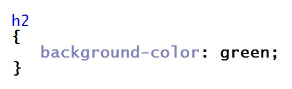
Pytanie nr 251
W języku CSS, aby formatować tekst poprzez przekreślenie, podkreślenie dolne lub górne, należy zastosować
A. text-align
B. text-indent
C. text-transform
D. text-decoration
Pytanie nr 252
W języku CSS poniższy zapis sprawi, że kolor żółty przyjmie czcionka
A. tekstu paragrafu
B. każdego odnośnika
C. odnośników, które otwierają sie w osobnej karcie
D. odnośników, które otwierają sie w tej samej karcie

Pytanie nr 253
W języku CSS poniższy zapis użyty na stronie, na której jest kilka paragrafów, a każdy z nich ma po kilka linii sprawi, że
A. pierwsza linia każdego paragrafu będzie miała mniejszą czcionkę niż następne linie
B. pierwsza linia każdego paragrafu będzie miała większą czcionkę niż następne linie
C. pierwszy paragraf na stronie będzie w całości miał powiększoną czcionkę
D. całość tekstu paragrafu będzie powiększona o 150%
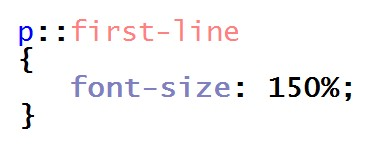
Pytanie nr 254
Który znacznik lub grupa znaczników nie są stosowane do definiowania struktury strony HTML?
A. <header>, <footer>
B. <i>, <b>, <u>
C. <section>
D. <div>
Pytanie nr 255
Który z przedstawionych kodów HTML sformatuje tekst według wzoru? (uwaga: słowo "stacji" jest zapisane większą czcionką niż reszta słów w tej linii)
A. A
B. B
C. C
D. D

Pytanie nr 256
Kolor zapisany w postaci szesnastkowej o wartości #11FE07 w kodzie RGB ma postać
A. rgb(17,FE,7)
B. rgb(11,127,7)
C. rgb(17,255,7)
D. rgb(17,254,7)
Pytanie nr 257
Które ze zdań jest prawdziwe w stosunku do grafiki rastrowej?
A. Podczas przekształcania polegającego na skalowaniu, skalowany obraz nie zmienia jakości
B. Zapisywany obraz jest opisywany za pośrednictwem figur geometrycznych umieszczonych w układzie współrzędnych
C. Grafika rastrowa nie jest zapisana w formacie WMF (ang. Windows Metafile Format - format metaplików w Windows)
D. Jest to prezentacja obrazu za pomocą pionowo-poziomej siatki odpowiednio kolorowanych pikseli na monitorze komputera, drukarce lub innym urządzeniu wyjściowym
Pytanie nr 258
Który z formatów grafiki jest najbardziej odpowiedni do zapisu obrazu z przezroczystością na potrzeby strony internetowej?
A. JPG
B. PNG
C. BMP
D. SVG
Pytanie nr 259
W czasie przetwarzania dźwięku, aby pozbyć się niechcianych odgłosów spowodowanych złą jakością mikrofonu, należy zastosować narzędzie
A. echa
B. obwiedni
C. wyciszenia
D. usuwania szumów
Pytanie nr 260
Aby obraz zmieniał się płynnie w filmie, liczba klatek (nieprzenikających się wzajemnie) na sekundę musi znajdować się przynajmniej w zakresie
A. 16-19 fps
B. 20-23 fps
C. 24-30 fps
D. 31-36 fps
Pytanie nr 261
W poleceniu CREATE TABLE języku SQL atrybut określający, która kolumna tabeli jest kluczem podstawowym, to
A. UNIQUE
B. MAIN KEY
C. PRIMARY KEY
D. IDENTITY FIELD
Pytanie nr 262
Dana jest tabela psy o polach: imie, rasa, telefon_wlasciciela, rok_szczepienia. Aby wyszukać telefony właścicieli, których psy były szczepione przed 2015 rokiem, należy użyć polecenia SQL
A. SELECT psy FROM rok_szczepienia < 2015
B. SELECT imie, rasa FROM psy WHERE rok_szczepienia > 2015
C. SELECT telefon_wlasciciela FROM psy WHERE rok_szczepienia < 2015
D. SELECT telefon_wlasciciela FROM psy WHERE rok_szczepienia > 2015
Pytanie nr 263
Na rysunku została przedstawiona relacja jeden do wielu. Łączy ona
A. klucz obcy rezyserzy_id tabeli filmy z kluczem obcym id tabeli rezyserzy
B. klucz podstawowy id tabeli filmy z kluczem podstawowym id tabeli rezyserzy
C. klucz obcy rezyserzy_id tabeli filmy z kluczem podstawowym id tabeli rezyserzy
D. klucz podstawowy id tabeli z kluczem obcym rezyserzy_id tabeli rezyserzy
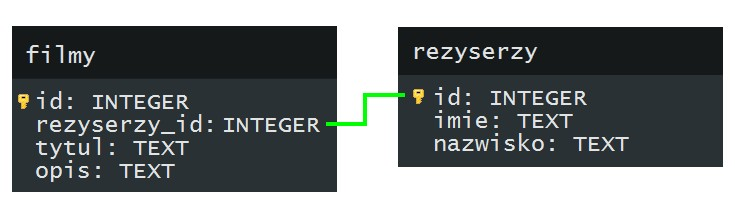
Pytanie nr 264
W bazie danych sklepu spożywczego pod koniec dnia jest tworzony raport wyświetlający te produkty wraz z ich dostawcami, dla których stan magazynowy jest mniejszy niż 10 sztuk. Do zdefiniowania tego raportu posłużono się kwerendą
A. SELECT
B. UPDATE
C. INSERT INTO
D. CHECK TABLE
Pytanie nr 265
Wskaż polecenie SQL dodające pole miesiacSiewu do istniejącej tabeli rosliny
A. UPDATE rosliny ADD miesiacSiewu int
B. CREATE TABLE rosliny {miesiacSiewu int}
C. ALTER TABLE rosliny ADD miesiacSiewu int
D. INSERT INTO rosliny VALUES (miesiacSiewu int)
Pytanie nr 266
Polecenie serwera MySQL przedstawione poniżej sprawi, że użytkownikowi tkowal zostaną
A. przydzielone prawa do usuwania i aktualizowania danych w tabeli pracownicy
B. odebrane prawa usuwania i modyfikowania danych w tabeli pracownicy
C. odebrane prawa usuwanie i dodawania rekordów w tabeli pracownicy
D. przydzielone prawa wszelkiej zmiany struktury tabeli pracownicy

Pytanie nr 267
W serwerze MySQL nadanie roli o nazwie DBManager przyznaje użytkownikowi prawa umożliwiające
A. monitorowanie serwera
B. wszelkie operacje na bazach danych serwera
C. tworzenie użytkowników serwera i ustawianie im haseł
D. wszystkie operacje na bazach danych i użytkownikach serwera
Pytanie nr 268
W bazie danych wykonano następujące polecenie dotyczące praw użytkownika adam. Po wykonaniu poleceń użytkownik adam będzie miał prawa do
A. usunięcia tabeli lub jej rekordów
B. aktualizowania danych i przeglądania tabeli klienci
C. tworzenia tabeli klienci i aktualizowania w niej danych
D. przeglądania tabeli klienci i wstawiania do niej sektorów

Pytanie nr 269
Wskaż poprawną zasadę dotyczącą spójności danych w bazie danych
A. pole klucza obcego nie może być puste
B. pole klucza podstawowego nie może być puste
C. pole klucza podstawowego musi posiadać utworzony indeks
D. w relacji 1..n pole klucza obcego jest połączone z polem klucza obcego innej tabeli
Pytanie nr 270
Aby naprawić uszkodzoną tabelę w MySQL, należy wydać polecenie
A. FIX TABLE
B. CHECK TABLE
C. REPAIR TABLE
D. RESOLVE TABLE
Pytanie nr 271
W formularzu dane z pola input o typie number zostały zapisane do zmiennej a, a następnie przetworzone w skrypcie JavaScript w następujący sposób. Zmienna z będzie typu
A. NaN
B. napisowego
C. zmiennoprzecinkowego
D. liczbowego, całkowitego

Pytanie nr 272
Aby w pliku z rozszerzeniem php umieścić kod w języku PHP należy użyć znaczników
A. <php .......... />
B. <?php .......... ?>
C. <php> ......... </php>
D. <?php> ........ <php?>
Pytanie nr 273
Ile iteracji będzie miała pętla zapisana w języku PHP, zakładając, że zmienna sterująca nie jest modyfikowana we wnętrzu pętli?
A. 0
B. 5
C. 6
D. 10

Pytanie nr 274
W JavaScript wynik operacji jest równy wartości NaN, jeśli skrypt próbował wykonać
A. funkcję parseFloat zamiast parseInt na zmiennej liczbowej
B. działanie arytmetyczne, a zawartość zmiennej była napisem
C. działanie arytmetyczne na dwóch zmiennych liczbowych dodatnich
D. funkcję sprawdzającą długość napisu, a zawartość zmiennej była liczbą
Pytanie nr 275
W instrukcji warunkowej języka JavaScript należy sprawdzić przypadek, gdy wartość zmiennej a jest z przedziału (0, 100), natomiast wartość zmiennej b jest większa od zera. Warunek taki jest prawidłowo zapisany w nastepujący sposób
A. if (a>0 || a<100 || b<0)
B. if (a>0 && a<100 && b>0)
C. if ((a>0 || a<100) && b>0)
D. if ((a>0 && a<100) || b<0)
Pytanie nr 276
Dla dowolnego a z przedziału (0,99) zadaniem funkcji zapisanej w języku Java Script jest:
A. zwrócenie liczb z przedziału a..99
B. wypisanie liczb z przedziału a..99 i zwrócenie wartości 100
C. wypisanie wartości zmiennej a oraz zwrócenie wartości zmiennej n
D. wypisanie liczb z przedziału a...100 i zwrócenie wartości zmiennej n

Pytanie nr 277
Zapis w języku JavaScript ma za zadanie
A. utworzenie nowej klasy napis1.
B. wywołanie metody obiektu napisy
C. utworzenie obiektu napis1 klasy napisy
D. zadeklarowanie zmiennej napis1 i wywołanie funkcji, której argumentem jest napis1

Pytanie nr 278
Aby wykonać kod zapisany językiem PHP wystarczy, że w systemie zainstalowano
A. przeglądarkę internetową
B. serwer WWW z interpreterem PHP
C. serwer WWW z serwerem MySQL
D. serwer WWW, parser PHP oraz serwer MySQL
Pytanie nr 279
Pętla zapisana w języku PHP wstawi do tablicy liczby
A. 0, 1, 2, 3, 4, 5, 6, 7, 8, 9
B. 0, 1, 2, 3, 4, 5, 6, 7, 8, 9, 10
C. 0, 10, 20, 30, 40, 50, 60, 70, 80, 90
D. 10, 20, 30, 40, 50, 60, 70, 80, 90, 100

Pytanie nr 280
Wymaganiem aplikacji internetowej jest, aby ta była wykonywana po stronie klienta. W którym języku należy zaimplementować tę aplikację?
A. Perl
B. PHP
C. Python
D. JavaScript
Pytanie nr 281
Zadaniem funkcji PHP o nazwie mysql_num_rows() jest
A. ponumerować rekordy w bazie danych
B. zwrócić kolejny rekord z wynikami zapytania
C. zwrócić liczbę wierszy znajdujących się w wyniku zapytania
D. zwrócić rekord, którego numer podany został w parametrze funkcji
Pytanie nr 282
Jaka treść komunikatu powinna być wstawiona w przedstawionym kodzie PHP zamiast znaków zapytania?
A. Wybrana baza nie istnieje
B. Błąd połączenia z serwerem SQL
C. Pomyślnie dodano rekord do bazy
D. Błąd przetwarzania zapytania SQL
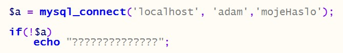
Pytanie nr 283
Testy aplikacji internetowej mające za zadanie sprawdzenie skalowalności aplikacji i bazy danych oraz architektury serwera i konfiguracji noszą nazwę testów
A. kompatybilności
B. bezpieczeństwa
C. funkcjonalnych
D. użyteczności
Pytanie nr 284
Aby prawidłowo udokumentować linię kodu języka Java Script, należy po znakach // wpisać komentarz
A. nieprawidłowe dane
B. wybór losowej wartości ze zmiennych a, b i c
C. w zmiennej x minimalna wartość ze zmiennych a, b, c
D. w zmiennej x maksymalna wartość ze zmiennych a, b, c
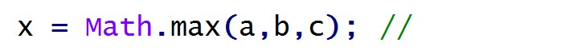
Pytanie nr 285
Aby stronę WWW można było przesłać do przeglądarki internetowej w postaci zaszyfrowanej, należy użyć protokołu
A. HTTPS
B. HTTP
C. SFTP
D. SSH
Pytanie nr 286
W języku HTML, aby uzyskać efekt jak na przykładzie, należy zastosować konstrukcję
A. <p><big>Duży tekst</p> zwykły tekst
B. <p><strike>Duży tekst zwykły tekst</p>
C. <p><big>Duży tekst</big> zwykły tekst</p>
D. <p><strike>Duży tekst</strike> zwykły tekst</p>
Pytanie nr 287
Zapis znacznika HTML w postaci
A. jest niepoprawny, w atrybucie href należy podać adres URL
B. jest niepoprawny, zastosowano błędnie znak # w atrybucie href
C. jest poprawny, po wybraniu odnośnika otworzy się strona internetowa o adresie "hobby"
D. jest poprawny, po wybraniu odnośnika aktualna strona zostanie przewinięta do elementu o nazwie "hobby"

Pytanie nr 288
W części nagłówkowej kodu HTML zapisano tekst przedstawiony na obrazku. Zapisany tekst zostanie wyświetlony
A. na pasku tytułu przeglądarki
B. w treści strony, na banerze
C. w polu adresu, za wpisanym adresem URL
D. w treści strony, w pierwszym wyświetlonym nagłówku

Pytanie nr 289
Przeglądarka internetowa wyświetliła stronę w następujący sposób. Wskaż kod HTML, który poprawnie definiuje przedstawioną hierarchiczną strukturę tekstu:
A. <h1>Rozdział 1<p>tekst <h2>Podrozdział 1.1<p>tekst <h2>Podrozdział 1.2
B. <ul><li>Rozdział 1<li>tekst<li>Podrozdział 1.1<li>tekst<li>Podrozdział 1.2</ul>
C. <big>Rozdział 1</big>tekst<big>Podrozdział 1.1</big>tekst<big>Podrozdział 1.2</big>
D. <h1>Rozdział 1</h1> <p>tekst</p> <h2>Podrozdział 1.1</h2> <p>tekst</p> <h2>Podrozdział 1.2</h2>

Pytanie nr 290
W języku CSS, przedstawiony zapis sprawi, że plik rysunek.png będzie
A. tłem całej strony
B. tłem każdego paragrafu
C. wyświetlony obok każdego paragrafu
D. wyświetlony, jeśli w kodzie zostanie zastosowany znacznik img

Pytanie nr 291
W języku CSS, aby zdefiniować niestandardowe odstępy między wyrazami, stosuje się właściwość
A. line-spacing
B. white-space
C. word-spacing
D. letter-space
Pytanie nr 292
W języku CSS zdefiniowano następujące formatowanie. Oznacza to, że kolorem niebieskim zostanie zapisany
A. cały tekst paragrafu niezależnie od jego formatowania
B. pochylony tekst paragrafu
C. cały tekst nagłówków niezależnie od ich formatowania
D. pogrubiony tekst paragrafu

Pytanie nr 293
W języku CSS, zapis w następującej postaci sprawi, iż koloru czerwonego będzie
A. pierwsza linia paragrafu
B. tekst nagłówka pierwszego stopnia
C. pierwsza litera nagłówka drugiego stopnia
D. pierwsza litera nagłówka pierwszego stopnia
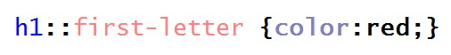
Pytanie nr 294
W języku HTML informacje dotyczące autora, streszczenia i słów kluczowych strony należy umieścić
A. pomiędzy znacznikami <head> i </head>, w znaczniku <meta>
B. pomiędzy znacznikami <head> i </head>, w znaczniku <style>
C. pomiędzy znacznikami <body> i </body>, w znaczniku <meta>
D. pomiędzy znacznikami <body> i </body>, w znaczniku <html>
Pytanie nr 295
Który z przedstawionych kodów XHTML sformatuje tekst według podanego wzoru?
A. A
B. B
C. C
D. D

Pytanie nr 296
Kolor zapisany kodem RGB o wartości rgb(128, 16, 8) w postaci szesnastkowej ma wartość
A. #FF0F80
B. #FF1008
C. #801008
D. #800F80
Pytanie nr 297
Które ze zdań opisuje grafikę wektorową?
A. Jest to prezentacja obrazu za pomocą pionowo-poziomej siatki odpowiednio kolorowanych pikseli na monitorze komputera, drukarce lub innym urządzeniu wyjściowym
B. Może być przechowywana w formacie JPG lub PNG
C. Jest wykorzystywana do zapisu fotografii cyfrowej
D. Zapisywany obraz jest opisywany za pośrednictwem figur geometrycznych umieszczonych w układzie współrzędnych
Pytanie nr 298
Aby zbadać rozkład ilościowy poszczególnych kolorów zdjęcia, należy użyć
A. desaturacji
B. histogramu
C. balansu kolorów
D. rozmycia Gaussa
Pytanie nr 299
W standardzie HDTV jest stosowana rozdzielczość
A. 704 x 576 px
B. 720 x 480 px
C. 1280 x 1024 px
D. 1920 x 1080 px
Pytanie nr 300
Którą klauzulę powinno się zastosować w poleceniu CREATE TABLE języka SQL, aby dane pole rekordu nie było puste?
A. NULL
B. CHECK
C. DEFAULT
D. NOT NULL
Pytanie nr 301
Polecenie języka SQL w postaci
A. zamienia nazwę tabeli miasta na nazwę kod
B. dodaje do tabeli kolumnę o nazwie kod typu text
C. dodaje do tabeli dwie kolumny o nazwach: kod i text
D. w tabeli miasta zamienia nazwę kolumny kod na nazwę text

Pytanie nr 302
W bazie danych hurtowni zdefiniowano tabelę sprzedaz o polach: id, kontrahent, grupa_cenowa, obrot. Aby wyszukać wyłącznie kontrahentów z drugiej grupy cenowej, których obrót jest większy niż 4000zł, należy zastosować polecenie
A. SELECT sprzedaz FROM kontrahent WHERE obrot > 4000;
B. SELECT kontrahent FROM sprzedaz WHERE grupa_cenowa = 2 OR obrot > 4000;
C. SELECT kontrahent FROM sprzedaz WHERE grupa_cenowa = 2 AND obrot > 4000;
D. SELECT sprzedaz FROM kontrahent WHERE grupa_cenowa = 2 AND obrot > 4000;
Pytanie nr 303
Dana jest tabela programiści o polach: id, nick, ilosc_kodu, ocena. Pole ilosc_kodu zawiera liczbę linii kodu napisanych przez programistę w danym miesiącu. Aby policzyć sumę linii kodu, który napisali wszyscy programiści, należy użyć polecenia
A. SELECT SUM(ocena) FROM ilosc_kodu;
B. SELECT SUM(ilosc_kodu) FROM programisci;
C. SELECT COUNT(programisci) FROM ilosc_kodu;
D. SELECT MAX(ilosc_kodu) FROM programisci
Pytanie nr 304
W instrukcji CREATE TABLE użycie klauzuli PRIMARY KEY przy deklaracji pola tabeli spowoduje, że pole to stanie się
A. kluczem obcym
B. indeksem klucza
C. indeksem unikalnym
D. kluczem podstawowym
Pytanie nr 305
Baza danych księgarni zawiera tabelę ksiazki z polami: id, idAutor, tytul, ileSprzedanych oraz tabelę autorzy z polami: id, imie, nazwisko. Aby stworzyć raport sprzedanych książek z tytułami i nazwiskami autorów, należy
A. stworzyć kwerendę wyszukującą tytuły książek
B. Zdefiniować relację 1..n dla tabel ksiazki i autorzy, a następnie stworzyć kwerendę łączącą obie tabele
C. Zdefiniować relację 1..1 dla tabel ksiazki i autorzy, a następnie stworzyć kwerendę łączącą obie tabele
D. stworzyć dwie osobne kwerendy: pierwszą wyszukującą tytuły książek, drugą wyszukującą nazwiska autorów
Pytanie nr 306
Istnieje tabela pracownicy z polami: id, imie, nazwisko, pensja. W nowym roku postawiono podnieść pensję wszystkim pracownikom o 100 zł. Aktualizacja ta w bazie danych będzie miała postać
A. UPDATE pracownicy SET pensja = pensja + 100;
B. UPDATE pracownicy SET pensja = 100;
C. UPDATE pensja SET +100;
D. UPDATE pensja SET 100;
Pytanie nr 307
W tabeli artykuly wykonano następujące polecenia dotyczące praw użytkowania jan. Po wykonaniu poleceń użytkownik jan będzie miał prawa do
A. tworzenia tabeli i aktualizowania w niej danych
B. aktualizowania danych i przeglądania tabeli
C. tworzenia tabeli i wypełniania jej danymi
D. przeglądania tabeli

Pytanie nr 308
Aby przywrócić bazę danych MS SQL z kopii bezpieczeństwa, należy zastosować polecenie
A. DBCC CHECKDB
B. SAVE DATABASE
C. RESTORE DATABASE
D. REBACKUP DATABASE
Pytanie nr 309
Baza danych MySQL uległa uszkodzeniu. Które z działań NIE pomoże przy jej naprawie?
A. Wykonanie replikacji bazy danych
B. Próba naprawy poleceniem REPAIR
C. Odtworzenie bazy z kopii bezpieczeństwa
D. Stworzenie nowej bazy i przeniesienie do niej tabel
Pytanie nr 310
W formularzu, dane z pola input o typie number zostały zapisane do zmiennej a, a następnie przetworzone w skrypcie JavaScript w następujący sposób. Zmienna x będzie typu
A. NaN
B. napisowego
C. zmiennoprzecinkowego
D. liczbowego, całkowitego
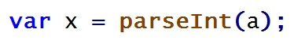
Pytanie nr 311
Wstawki kodu JavaScript w dokumencie HTML mogą się znaleźć
A. tylko w cześci <head>, w znaczniku <script>
B. tylko w cześci <body>, w znaczniku <java>
C. zarówno w cześci <head>, jak i <body>, w znaczniku <java>
D. zarówno w cześci <head>, jak i <body>, w znaczniku <script>
Pytanie nr 312
W przedstawonym kodzie JavaScript dla ułatwienia ponumerowano linie. W kodzie znajduje się błąd, gdyż po uruchomieniu żaden komunikat nie zostaje wyświetlony. Aby wyeliminować błąd, należy
A. wstawić znaki $ przed nazwami zmiennych.
B. wstawić nawiasy klamrowe do sekcji if oraz else
C. w liniach 2 i 5 zmienne a i b wstawić w cudzysłów
D. w liniach 3 i 6 zamienić znaki cudzysłowu na apostrof, np. ’jest mniejsze’

Pytanie nr 313
Ile iteracji będzie miała przedstawiona pętla zapisana w języku PHP, zakładając, że zmienna sterująca nie jest modyfikowana we wnętrzu pętli?
A. 0
B. 10
C. 11
D. Nieskończenie wiele
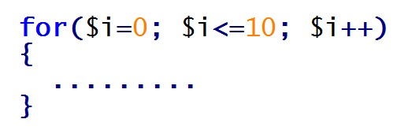
Pytanie nr 314
W języku JavaScript metoda document.getElementById(id) ma za zadanie
A. wstawić tekst o treści ’id’ na stronie WWW
B. sprawdzić poprawność formularza o identyfikatorze id
C. pobrać dane z pola formularza i wstawić je do zmiennej id
D. zwrócić odniesienie do pierwszego elementu HTML o podanym id
Pytanie nr 315
W instrukcji warunkowej JavaScript należy sprawdzić przypadek, gdy zmienne a oraz b są dodatnie, z czego zmienna b jest mniejsza od 100. Warunek taki powinien być zapisany w następujący sposób:
A. if ( a > 0 || b > 0 || b > 100)
B. if ( a > 0 && b > 0 || b > 100)
C. if ( a > 0 || (b > 0 && b < 100))
D. if ( a > 0 && b > 0 && b < 100)
Pytanie nr 316
Zadaniem przedstawionej funkcji zapisanej w języku JavaScript jest
A. zwrócenie wartości parzystych liczb od a do b
B. wypisanie liczb parzystych z przedziału od a do b
C. wypisanie wszystkich liczb z przedziału od a do b
D. sprawdzenie, czy liczba a jest nieparzysta; jeśli tak, wypisanie jej
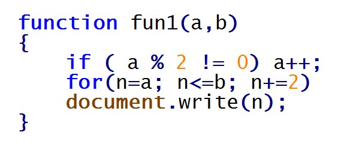
Pytanie nr 317
Przedstawiony kod został zapisany w języku JavaScript. W podanej definicji obiektu metodą jest element o nazwie
A. obj1
B. oblicz
C. czescCalkowita
D. czescUlamkowa

Pytanie nr 318
Aby uzyskać informacje o środowisku pracy serwera obsługującego PHP, należy skorzystać z funkcji
A. php()
B. phpinfo()
C. phpgetinfo()
D. phpinformation()
Pytanie nr 319
Fragment kodu w języku PHP wypisze
A. nazwę konta ze znakiem @, czyli "adres@"
B. cały adres e-mail, czyli "adres@host.pl"
C. samą nazwę domeny, czyli "host.pl"
D. samą nazwę konta, czyli "adres"

Pytanie nr 320
Do uruchomienia skryptu JavaScript wymagane jest oprogramowanie
A. serwera WWW
B. serwera MySQL
C. debugera JavaScript
D. przeglądarki internetowej
Pytanie nr 321
Zadaniem funkcji PHP o nazwie mysql_select_db() jest
A. połączyć bazę danych z serwerem SQL
B. określić bazę, z której będą pobierane dane
C. określić tabelę, z której będą pobierane dane
D. pobrać dane z bazy danych na podstawie kwerendy
Pytanie nr 322
W przedstawionym kodzie PHP, zamiast znaków zapytania powinien pojawić się komunikat:
A. Błąd przetwarzania zapytania
B. Zapytanie przetworzono pomyślnie
C. Nieprawidłowa nazwa bazy danych
D. Nieprawidłowe hasło do bazy danych

Pytanie nr 323
Testy wydajnościowe mają na celu sprawdzenie
A. zdolności oprogramowania do działania w warunkach wadliwej pracy sprzętu
B. zdolności oprogramowania do działania w warunkach wadliwej pracy systemu
C. stopnia spełnienia wymagań wydajnościowych przez system lub moduł
D. ciągu zdarzeń, w którym prawdopodobieństwo każdego zdarzenia zależy jedynie od wyniku poprzedniego
Pytanie nr 324
Aby prawidłowo udokumentować przedstawioną linię kodu języka JavaScript, należy po znakach // wpisać komentarz
A. nieprawidłowe dane
B. zmiana stylu atrybutu innerHTML
C. wyświetlenie tekstu "Date()" w znaczniku o id = napis
D. wyświetlenie daty i czasu w znaczniku o id = napis

Pytanie nr 325
Przekierowanie 301 służące przekierowaniu użytkownika z jednego adresu URL na inny można ustawić w pliku konfiguracji serwera Apache o nazwie
A. conf.php
B. .htaccess
C. .apacheConf
D. configuration.php
Pytanie nr 326
W języku HTML aby zdefiniować słowa kluczowe strony, należy użyć zapisu
A. <meta keywords="psy, koty, gryzonie">
B. <meta name="keywords" ="psy, koty, gryzonie">
C. <meta name="keywords" content="psy, koty, gryzonie">
D. <meta name="description" content="psy, koty, gryzonie">
Pytanie nr 327
W języku HTML zdefiniowano znacznik a. Wartość nofollow atrybutu rel
A. oznacza, że kliknięcie na link nie przeniesie do strony website.com
B. oznacza, że kliknięcie na link otworzy go w osobnej karcie przeglądarki
C. jest informacją dla robota wyszukiwarki Google, aby nie podążał za tym linkiem
D. jest informacją dla przeglądarki internetowej, aby nie formatowała słowa "link" jako odnośnika
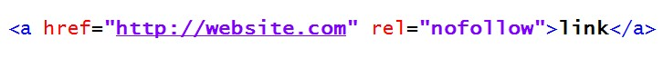
Pytanie nr 328
W języku HTML aby zdefiniować poziomą linię, należy użyć znacznika
A. <line>
B. <br>
C. <hl>
D. <hr>
Pytanie nr 329
Zapisano kod HTML wstawiający grafikę na stronę internetową. Jeżeli rysunek.png nie zostanie odnaleziony, przeglądarka
A. nie wyświetli strony internetowej
B. w miejscu grafiki wypisze tekst "pejzaż"
C. w miejscu grafiki wypisze tekst "rysunek.png"
D. w miejscu grafiki wypisze błąd wyświetlania strony

Pytanie nr 330
Aby w języku HTML uzyskać takie formatowanie paragrafu dla tekstu należy zastosować kod
A. <p>Tekst może być <mark>zaznaczony</mark> albo <em>istotny dla autora</p>
B. <p>Tekst może być <mark>zaznaczony albo <i>istotny</i> dla autora</mark></p>
C. <p>Tekst może być <mark>zaznaczony</mark> albo <em>istotny</em> dla autora</p>
D. <p>Tekst może być <mark>zaznaczony albo <em>istotny</em> dla autora</mark></p>

Pytanie nr 331
Zamieszczony kod HTML formularza zostanie wyświetlony przez przeglądarkę w sposób:
A. A
B. B
C. C
D. D

Pytanie nr 332
W języku CSS wcięcie pierwszej linii akapitu na 30 pikseli uzyska się za pomocą zapisu
A. p { text-indent: 30px; }
B. p { text-spacing: 30px; }
C. p { line-height: 30px; }
D. p { line-indent: 30px; }
Pytanie nr 333
W języku CSS zdefiniowano następujące formatowanie. Kolorem czerwonym zostanie zapisany
A. tylko tekst pochylony nagłówka pierwszego stopnia
B. tylko tekst pochylony we wszystkich poziomach nagłówków
C. cały tekst nagłówka pierwszego stopnia oraz pochylony tekst akapitu
D. cały tekst nagłówka pierwszego stopnia oraz cały tekst pochylony, niezależnie od tego, w którym miejscu strony się znajduje

Pytanie nr 334
W języku CSS, aby sformatować dowolny element języka HTML w ten sposób, że po najechaniu na niego kursorem zmienia on kolor czcionki, należy zastosować pseudoklasę
A. :active
B. :hover
C. :visited
D. :coursor
Pytanie nr 335
Zapis CSS w takiej postaci sprawi, że na stronie internetowej
A. punktorem listy nienumerowanej będzie rys.gif
B. rys.gif będzie stanowił ramkę dla listy nienumerowanej
C. wyświetli się rys.gif jako tło listy nienumerowanej
D. każdy z punktów listy będzie miał osobne tło pobrane z grafiki rys.gif
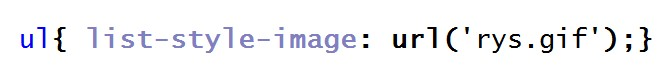
Pytanie nr 336
W języku CSS aby zdefiniować odmienne formatowanie dla pierwszej litery akapitu, należy zastosować selektor
A. klasy p.first-letter
B. dziecka p + first-letter
C. atrybutu p [first-letter]
D. pseudoelementu p::first-letter
Pytanie nr 337
W kodzie źródłowym zapisanym w języku HTML wskaż błąd walidacji dotyczący tego fragmentu
A. Nieznany znacznik h6
B. Znacznik br nie został poprawnie zamknięty
C. Znacznik br nie może występować wewnątrz znacznika p
D. Znacznik zamykający /b niezgodny z zasadą zagnieżdżania

Pytanie nr 338
W ramce przedstawiono właściwości pliku graficznego. W celu optymalizacji czasu ładowania rysunku na stronę WWW należy
A. zmniejszyć wymiary rysunku
B. zwiększyć rozdzielczość
C. zmienić format grafiki na CDR
D. zmienić proporcje szerokości do wysokości

Pytanie nr 339
W programie INKSCAPE / COREL aby uzyskać przedstawiony efekt napisu, należy
A. skorzystać z funkcji gradientu
B. zastosować funkcję sumy z kołem
C. zastosować funkcję wykluczenia z kołem
D. skorzystać z funkcji wstaw / dopasuj tekst do ścieżki

Pytanie nr 340
Programem do edycji dźwięku jest
A. Brasero
B. Winamp
C. Audacity
D. RealPlayer
Pytanie nr 341
Dana jest tabela pracownicy. Polecenie MySQL usuwające wszystkie rekordy z tabeli, dla których nie wypełniono pola rodzaj_umowy, ma postać
A. DROP pracownicy FROM rodzaj_umowy = 0;
B. DROP pracownicy WHERE rodzaj_umowy IS NULL;
C. DELETE pracownicy WHERE rodzaj_umowy = 'brak';
D. DELETE FROM pracownicy WHERE rodzaj_umowy IS NULL;
Pytanie nr 342
W języku SQL, aby stworzyć tabelę, należy zastosować polecenie
A. ADD TABLE
B. ALTER TABLE
C. INSERT TABLE
D. CREATE TABLE
Pytanie nr 343
W przedstawionym fragmencie kwerendy języka SQL, komenda SELECT ma za zadanie zwrócić
A. średnią tabeli
B. liczbę wierszy
C. sumę w kolumnie wartosc
D. średnią w kolumnie wartosc

Pytanie nr 344
Dana jest tabela ksiazki z polami: tytul, autor (typu tekstowego), cena (typu liczbowego). Aby kwerenda SELECT zwróciła tylko tytuły, dla których cena jest mniejsza od 50zł, należy zapisać:
A. SELECT * FROM ksiazki WHERE cena < 50;
B. SELECT tytul FROM ksiazki WHERE cena < 50;
C. SELECT tytul FROM ksiazki WHERE cena > '50 zł';
D. SELECT ksiazki FROM tytul WHERE cena < '50 zł';
Pytanie nr 345
W bazie danych MYSQL dana jest tabela programów komputerowych o polach: nazwa, producent, rokWydania. Aby kwerenda SELECT zwróciła wszystkie nazwy producentów tak, by nazwy te nie powtarzały się, należy zapisać:
A. SELECT UNIQUE producent FROM programy;
B. SELECT DISTINCT producent FROM programy;
C. SELECT producent FROM programy WHERE UNIQUE;
D. SELECT producent FROM programy WHERE producent NOT DUPLICATE;
Pytanie nr 346
Tabela filmy zawiera klucz główny id oraz klucz obcy rezyserID. Tabela rezyserzy zawiera klucz główny id. Obydwie tabele połączone są relacją jeden po stronie rezyserzy do wielu po stronie filmy. Aby w kwerendzie SELECT połączyć tabele filmy i rezyserzy, należy zapisać
A. ... filmy JOIN rezyserzy ON filmy.id = rezyserzy.id ...
B. ... filmy JOIN rezyserzy ON filmy.id = rezyserzy.filmyID ...
C. ... filmy JOIN rezyserzy ON filmy.rezyserID = rezyserzy.id ...
D. ... filmy JOIN rezyserzy ON filmy.rezyserID = rezyserzy.filmyID ...
Pytanie nr 347
Na rysunku przedstawiono dwie tabele. Aby połączyć je relacją jeden do wielu, jeden po stronie Klienci wiele po stronie Zamowienia, należy
A. Połączyć relacją pola ID z obu tabel
B. Dodać pole klucza obcego do tabeli Zamowienia i połączyć je z ID tabeli Klienci
C. Dodać pole klucza obcego do tabeli Klienci i połączyć je z ID tabeli Zamowienia
D. Zdefiniować trzecią tabelę z dwoma kluczami obcymi. Jeden klucz połączyć z ID tabeli Klienci, drugi klucz połączyć z ID tabeli Zamowienia

Pytanie nr 348
Źródłem rekordów dla raportu może być
A. Tabela
B. Inny raport
C. Makropolecenie
D. Zapytanie INSERT INTO
Pytanie nr 349
Przedstawione polecenie MySQL ma za zadanie
A. Usunąć kolumnę tytul z tabeli ksiazki
B. Dodać do tabeli ksiazki kolumnę tytul
C. Zmienić nazwę kolumny w tabeli ksiazki
D. Zmienić typ kolumny w tabeli ksiazki

Pytanie nr 350
W tabeli podzespoly należy zmienić wartość pola URL na 'toshiba.pl' dla wszystkich rekordów, gdzie pole producent to TOSHIBA. W języku SQL modyfikacja będzie miała postać
A. UPDATE podzespoly SET URL='toshiba.pl';
B. UPDATE producent='TOSHIBA' SET URL='toshiba.pl';
C. UPDATE podzespoly.producent='TOSHIBA' SET URL='toshiba.pl';
D. UPDATE podzespoly SET URL='toshiba.pl' WHERE producent='TOSHIBA';
Pytanie nr 351
Do zabezpieczeń serwera bazy danych przed atakami hakerów nie należy
A. Włączenie zapory
B. Defragmentacja dysków
C. Stosowanie złożonych haseł do bazy
D. Blokowanie portów związanych z bazą danych
Pytanie nr 352
W języku MySQL należy zastosować polecenie REVOKE, aby użytkownikowi anna odebrać prawo do dokonywania zmian jedynie w definicji struktury bazy danych. Polecenie odpowiadające odebraniu tych praw ma postać
A. REVOKE ALL ON tabela1 FROM 'anna'@'localhost'
B. REVOKE CREATE ALTER DROP ON tabela1 FROM 'anna'@'localhost'
C. REVOKE CREATE UPDATE DROP ON tabela1 FROM 'anna'@'localhost'
D. REVOKE CREATE INSERT DELETE ON tabela1 FROM 'anna'@'localhost'
Pytanie nr 353
W języku JavaScript, aby sprawdzić warunek czy liczba znajduje się w przedziale (100;200>, należy zapisać:
A. if (liczba > 100 || liczba <= 200)
B. if (liczba < 100 || liczba >= 200)
C. if (liczba > 100 && liczba <= 200)
D. if (liczba < 100 && liczba <= 200)
Pytanie nr 354
W wyniku działania pętli zapisanej w języku PHP zostanie wypisany ciąg liczb
A. 10 15 20 25 30 35 40 45
B. 10 15 20 25 30 35 40 45 50
C. 0 5 10 15 20 25 30 35 40 45
D. 0 5 10 15 20 25 30 35 40 45 50

Pytanie nr 355
Które z poniższych zdań dotyczących zasad programowania w języku PHP jest prawdziwe?
A. Jest to język o słabej kontroli typów
B. Nazwy zmiennych są poprzedzone znakiem !
C. Deklaracja zmiennych następuje po słowie var
D. W nazwach zmiennych nie jest rozróżniana wielkość liter
Pytanie nr 356
W języku PHP instrukcja foreach jest instrukcją
A. Wyboru, dla elementów tablicy
B. Pętli, niezależnie od typu zmiennej
C. Pętli, wyłącznie dla elementów tablicy
D. Warunkową, niezależnie od typu zmiennej
Pytanie nr 357
Funkcją języka PHP tworzącą ciasteczko jest
A. createcookie()
B. echocookie()
C. addcookie()
D. setcookie()
Pytanie nr 358
W języku PHP funkcja trim ma za zadanie
A. Podawać długość napisu
B. Porównywać dwa napisy i wypisać część wspólną
C. Zmniejszać napis o wskazaną w parametrze liczbę znaków
D. Usuwać białe znaki lub inne znaki podane w parametrze, z obu końców napisu
Pytanie nr 359
W języku JavaScript zapis w ramce oznacza, że
A. nazwa jest polem klasy przedmiot
B. nazwa jest właściwością obiektu przedmiot
C. zmienna x będzie przechowywać wynik działania metody nazwa
D. zmienna x będzie przechowywać wynik działania funkcji przedmiot

Pytanie nr 360
W języku JavaScript zapisano następującą funkcję. Ma ona za zadanie
A. Wypisać wartość odwrotną do f
B. Zwrócić wartość odwrotną do f
C. Wypisać wartość bezwzględną z f
D. Zwrócić wartość bezwzględną z f

Pytanie nr 361
Za pomocą języka PHP nie jest możliwe
A. Przetwarzanie danych formularzy
B. Generowanie dynamicznej zawartości strony
C. Przetwarzanie danych zgromadzonych w bazie danych
D. Zmienianie dynamiczne zawartości strony HTML w przeglądarce
Pytanie nr 362
Działaniem przedstawionego kodu PHP będzie wypełnienie tablicy
A. Kolejnymi liczbami od 0 do 9 i wypisanie ich
B. Kolejnymi liczbami od -100 do 100 i wypisanie wartości ujemnych
C. 10 losowymi wartościami, a następnie wypisanie wartości ujemnych
D. 100 losowymi wartościami, a następnie wypisanie wartości dodatnich
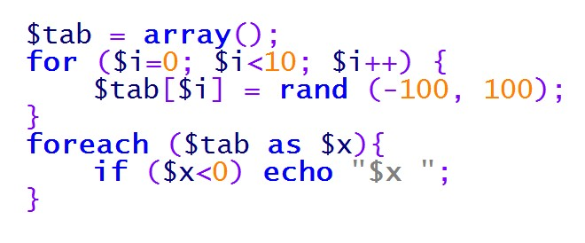
Pytanie nr 363
W języku JavaScript zapisano fragment kodu. Po wykonaniu skryptu zmienna x
A. Będzie równa 11 i zostanie wypisana w oknie popup
B. Będzie równa 10 i zostanie wypisana w dokumencie HTML
C. Będzie równa 11 i zostanie wypisana w konsoli przeglądarki internetowej
D. Będzie równa 10 i zostanie wypisana w głównym oknie przeglądarki internetowej

Pytanie nr 364
W języku PHP, wykonując operacje na bazie danych MySQL, aby zakończyć pracę z bazą, należy wywołać
A. mysqli_exit();
B. mysqli_close();
C. mysqli_commit();
D. mysqli_rollback();
Pytanie nr 365
W ramce przedstawiono kod JavaScript z błędem logicznym. Program powinien wypisywać informację, czy liczby są sobie równe czy nie, lecz nie wykonuje tego. Wskaż odpowiedź, która dotyczy błędu
A. Nieprawidłowo zadeklarowano zmienne
B. Przed klauzulą else nie powinno być średnika
C. W klauzuli if występuje przypisanie zamiast porównania
D. Instrukcje wewnątrz sekcji if oraz else powinny być zamienione miejscami

Pytanie nr 366
Która z zasad tworzenia części <head> języka HTML jest poprawna?
A. W części <head> zawiera się część <body>
B. W części <head> mogą wystąpić znaczniki <meta>, <title>, <link>
C. W części <head> można definiować szablon strony znacznikami <div>
D. W części <head> nie można umieszczać kodu CSS, a jedynie odwołanie do pliku CSS
Pytanie nr 367
W języku HTML znacznik <strong>tekst</strong> będzie wyświetlany w ten sam sposób przez przeglądarkę co znacznik
A. <b>tekst</b>
B. <h1>tekst</h1>
C. <big>tekst</big>
D. <sub>tekst</sub>
Pytanie nr 368
Aby strona WWW była responsywna, należy między innymi definiować
A. jedynie znane czcionki, np. Arial
B. rozmiary obrazów w procentach
C. rozmiary obrazów wyłącznie w pikselach
D. rozkład strony wyłącznie za pomocą tabel
Pytanie nr 369
W języku HTML, aby zapisać sekcję cytatu, która może zawierać kilka paragrafów tak, by przeglądarka dodała wspólne wcięcie, należy zastosować znacznik
A. <q>
B. <indent>
C. <blockq>
D. <blockquote>
Pytanie nr 370
W języku CSS wartości underline, overline, blink przyjmują atrybut
A. text-style
B. font-style
C. font-weight
D. text-decoration
Pytanie nr 371
W przedstawionej definicji stylu CSS, powtarzanie dotyczy
A. tła każdego ze znaczników akapitu
B. rysunku umieszczonego znacznikiem img
C. rysunku umieszczonego w tle strony w pionie
D. rysunku umieszczonego w tle strony w poziomie

Pytanie nr 372
W języku CSS zdefiniowano styl. Sformatowana stylem sekcja będzie zawierała obramowanie o szerokości
A. 2 px oraz marginesy wewnątrz tego obramowania
B. 20 px oraz marginesy wewnątrz tego obramowania
C. 2 px oraz marginesy na zewnątrz tego obramowania
D. 20 px oraz marginesy na zewnątrz tego obramowania
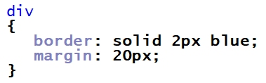
Pytanie nr 373
Strona HTML definiuje akapit oraz rysunek. Aby rysunek został umieszczony przez przeglądarkę w tej samej linii co akapit po jego lewej stronie, należy w stylu CSS rysunku zawrzeć własność
A. float:left;
B. align:left;
C. style:left;
D. alt:left;
Pytanie nr 374
W języku CSS określono formatowanie znacznika h1 według wzoru. Zakładając, że żadne inne formatowanie nie jest dodane do znacznika h1, wskaż sposób formatowania tego znacznika
A. A
B. B
C. C
D. D

Pytanie nr 375
Aby przygotować szablon strony z trzema kolumnami ustawionymi obok siebie, można posłużyć się stylem CSS
A. A
B. B
C. C
D. D

Pytanie nr 376
Przedstawiono fragment kodu HTML, który nie waliduje się poprawnie. Błąd walidacji tego fragmentu kodu będzie dotyczył
A. Braku cudzysłowu
B. Niedomknięcia znacznika br
C. Niedomknięcia znacznika img
D. Powtórzenia nazwy pliku graficznego
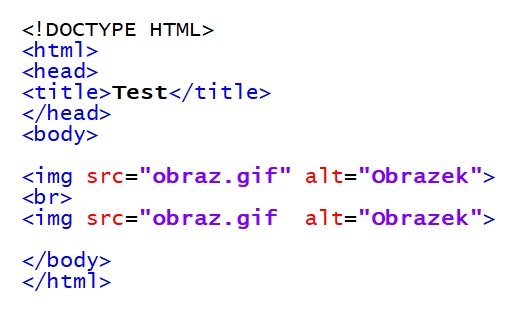
Pytanie nr 377
Modelem barw opisującym kolor z użyciem stożka przestrzeni barw jest
A. CIE
B. HSV
C. CMY
D. CMYK
Pytanie nr 378
Rozmycie Gaussa, wygładzanie, szum RGB są funkcjami programu do obróbki
A. Grafiki rastrowej
B. Grafiki wektorowej
C. Ścieżki dźwiękowej
D. Dźwięku w formacie MIDI
Pytanie nr 379
Aby edytować nakładające się na siebie pojedyncze fragmenty obrazu, pozostawiając pozostałe elementy niezmienione, należy zastosować
A. Warstwy
B. Histogram
C. Kanał alfa
D. Kadrowanie
Pytanie nr 380
W języku SQL wykorzystywanym przez bazę danych MySQL atrybut UNIQUE polecenia CREATE TABLE
A. Wymusza unikatowe nazwy pól tabeli
B. Blokuje możliwość wpisania wartości NULL
C. Jest stosowany tylko w przypadku pól liczbowych
D. Jest stosowany, jeśli wartość w kolumnie nie mogą się powtarzać
Pytanie nr 381
Funkcja agregująca MIN języka SQL ma za zadanie policzyć
A. Liczbę wierszy zwróconych kwerendą
B. Wartość minimalną kolumny zwróconej kwerendą
C. długość znaków w zwróconych kwerendą rekordach
D. Średnią wartości różnych pól rekordu zwróconego zapytaniem
Pytanie nr 382
Dana jest tabela o nazwie wycieczki z polami: nazwa, cena, miejsca (jako liczba wolnych miejsc). Aby dla dowolnego zbioru danych tabeli wyświetlić jedynie nazwy tych wycieczek, dla których cena jest niższa niż 2000 zł i mają przynajmniej cztery wolne miejsca, należy posłużyć się zapytaniem
A. SELECT nazwa FROM wycieczki WHERE cena < 2000 AND miejsca > 3;
B. SELECT nazwa FROM wycieczki WHERE cena < 2000 OR miejsca > 4;
C. SELECT * FROM wycieczki WHERE cena < 2000 AND miejsca > 4;
D. SELECT * FROM wycieczki WHERE cena < 2000 OR miejsca > 3;
Pytanie nr 383
Dana jest tabela o nazwie przedmioty z polami: ocena i uczenID. Aby policzyć średnią ocen ucznia o ID równym 7, należy posłużyć się zapytaniem
A. AVG SELECT ocena FROM przedmioty WHERE uczenID = 7;
B. SELECT AVG(ocena) FROM przedmioty WHERE uczenID = 7;
C. COUNT SELECT ocena FROM przedmioty WHERE uczenID = 7;
D. SELECT COUNT(ocena) FROM przedmioty WHERE uczenID = 7;
Pytanie nr 384
Tabela o nazwie naprawy zawiera pola: klient, czyNaprawione. Aby usunąć te rekordy, w których pole czyNaprawione jest prawdą, należy posłużyć się poleceniem
A. DELETE FROM naprawy;
B. DELETE naprawy WHERE czyNaprawione = TRUE;
C. DELETE FROM naprawy WHERE czyNaprawione = TRUE;
D. DELETE klient FROM naprawy WHERE czyNaprawione = TRUE;
Pytanie nr 385
Formularz nadrzędny wykorzystywany do nawigacji w bazie danych pomiędzy dostępnymi w systemie formularzami, kwerendami jest nazywany formularzem
A. głównym
B. sterującym
C. pierwotnym
D. zagnieżdżonym
Pytanie nr 386
W bazie danych sklepu komputerowego istnieje tabela komputery. Aby zdefiniować raport wyświetlający dla dowolnego zbioru danych tabeli, jedynie pola tabeli dla komputerów, w których jest nie mniej niż 8 GB pamięci, a procesor to Intel, można posłużyć sie kwerendą
A. SELECT * FROM komputery WHERE procesor = "Intel" OR pamiec < 8;
B. SELECT * FROM komputery WHERE procesor = "Intel" OR pamiec >= 8;
C. SELECT * FROM komputery WHERE procesor = "Intel" AND pamiec < 8;
D. SELECT * FROM komputery WHERE procesor = "Intel" AND pamiec >= 8;
Pytanie nr 387
Za pomocą polecenia ALTER TABLE można
A. zmienić wartości rekordów
B. zmienić strukturę tabeli
C. usunąć rekord
D. usunąć tabelę
Pytanie nr 388
W języku SQL, wykorzystywanym przez bazę danych MySQL w tabeli samochody, aby nadać wartość równą 0 dla kolumny przebieg, należy posłużyć się kwerendą
A. UPDATE samochody SET przebieg = 0;
B. UPDATE przebieg SET 0 FROM samochody;
C. UPDATE przebieg SET 0 TABLE samochody;
D. UPDATE samochody SET przebieg VALUE 0;
Pytanie nr 389
Przedstawione polecenie SQL, użytkownikowi adam@localhost nadaje prawa
A. zarządzania strukturą tabeli klienci
B. manipulowania danymi w tabeli klienci
C. zarządzania strukturą bazy danych klienci
D. manipulowania danymi bazy danych klienci
Pytanie nr 390
W języku JavaScript przedstawiona definicja jest definicją
A. klasy
B. tablicy
C. obiektu
D. kolekcji

Pytanie nr 391
Dla każdej iteracji pętli wartość bieżącego elementu tablicy jest przypisywana do zmiennej, a wskaźnik tablicy jest przesuwany o jeden, aż do ostatniego elementu tablicy. Zdanie to jest prawdziwe dla instrukcji
A. for
B. next
C. while
D. foreach
Pytanie nr 392
Wskaż zapisany w języku JavaScript warunek, który ma sprawdzić spełnienie przynajmniej jednego z przypadków: 1) dowolna naturalna liczba a jest trzycyfrowa, 2) dowolna całkowita liczba b jest ujemna
A. ((a>99) || (a<1000)) || (b<0)
B. ((a>99) && (a<1000)) || (b<0)
C. ((a>99) || (a<1000)) && (b<0)
D. ((a>99) && (a<1000)) && (b<0)
Pytanie nr 393
Którą czynność gwarantującą poprawne wykonanie przedstawionego kodu JavaScript, należy wykonać przed pętlą?
A. Zadeklarować zmienną i
B. Zainicjować zmienną text
C. Sprawdzić rozmiar tabeli tab
D. Sprawdzić czy text jest typu znakowego

Pytanie nr 394
Hermetyzacja to zasada programowania obiektowego mówiąca o tym, że
A. klasy/obiekty mogą współdzielić ze sobą funkcjonalność
B. pola i metody wykorzystywane tylko przez daną klasę/obiekt są ograniczone zasięgiem private lub protected
C. klasy/obiekty mogą mieć zdefiniowane metody wirtualne, które są implementowane w pochodnych klasach/obiektach
D. typy pól w klasach/obiektach mogą być dynamicznie zmieniane w zależności od danych im przypisywanych
Pytanie nr 395
Przedstawiono fragment JavaScript. Po jego wykonaniu zmienna str2 będzie przechowywać
A. vaSc
B. avaS
C. vaScri
D. nvaScr

Pytanie nr 396
Który ze sposobów wypisania tekstu nie jest zdefiniowany w języku JavaScript?
A. Własność innerHTML
B. Metoda window.alert()
C. Funkcja MessageBox()
D. Metoda document.write()
Pytanie nr 397
Funkcja JavaScript powinna być wywołana za każdym razem, gdy użytkownik wpisze dowolny znak do pola edycji. Którego zdarzenia należy użyć?
A. onload
B. onclick
C. onkeydown
D. onmouseout
Pytanie nr 398
Która z wymienionych funkcji zapisanych językiem PHP zwraca sumę połowy a i połowy b
A. function licz($a, $b) {return $a/2 + $b;}
B. function licz($a, $b) {return 2/$a + 2/$b;}
C. function licz($a, $b) {return $a/2 + $b/2;}
D. function licz($a, $b) {return ($a/2 + $b)/2;}
Pytanie nr 399
W języku JavaScript zapisano definicję obiektu. Aby odwołać się do własności nazwisko należy zapisać
A. osoba[1]
B. osoba[2]
C. osoba.nazwisko
D. osoba::nazwisko

Pytanie nr 400
W języku PHP zapisano fragment kodu. Plik cookie stworzony tym poleceniem
A. zostanie usunięty po jednym dniu od jego utworzenia
B. będzie przechowywany na serwerze przez jeden dzień
C. zostanie usunięty po jednej godzinie od jego utworzenia
D. będzie przechowywany na serwerze przez jedną godzinę
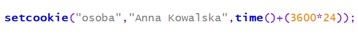
Pytanie nr 401
W języku PHP zapisano fragment kodu. Po zakończeniu pętli zmienna a przyjmie wartość
A. 0
B. 2
C. 10
D. 20

Pytanie nr 402
W języku JavaScript, aby zmienić wartość atrybutu znacznika HTML, po uzyskaniu obiektu za pomocą metody getElementById należy skorzystać z
A. pola innerHTML
B. metody getAttribute
C. metody setAttribute
D. pola attribute i podać nazwę atrybutu
Pytanie nr 403
W języku JavaScript zapisano kod, którego wynikiem działania jest
A. wyświetlenie okna z pustym polem edycyjnym
B. bezpośrednie wpisanie do zmiennej osoba wartości "Adam"
C. pobranie z formularza wyświetlonego na stronie HTML imienia "Adam"
D. wyświetlenie okna z polem edycyjnym, w którym jest wpisany domyślny tekst "Adam"

Pytanie nr 404
W języku PHP zapisano fragment kodu działającego na bazie MySQL. Jego zadaniem jest wypisanie
A. ulicy i miasta z pierwszego zwróconego rekordu
B. ulicy i miasta ze wszystkich zwróconych rekordów
C. miasta i kodu pocztowego z pierwszego zwróconego rekordu
D. miasta i kodu pocztowego ze wszystkich zwróconych rekordów

Pytanie nr 405
Który sposób komentowania jednoliniowego jest dozwolony w języku JavaScript?
A. !
B. #
C. //
D. <!
Pytanie nr 406
Znaczniki <header>, <article>, <section>, <footer> są charakterystyczne dla języka
A. HTML 5
B. XHTML 1.1
C. HTML 4.01 Strict
D. HTML 4.01 Transitional
Pytanie nr 407
Przy użyciu którego znacznika w języku HTML nie można umieścić na stronie grafiki dynamicznej?
A. <img>
B. <strike>
C. <embed>
D. <object>
Pytanie nr 408
Które ze znaczników HTML umożliwią wyświetlenie na stronie tekstu w jednym wierszu, jeżeli żadne formatowanie CSS nie zostało zdefiniowane?
A. <p>Dobre strony </p><p style="letter-spacing:3px">mojej strony</p>
B. <h3>Dobre strony </h3><h3 style="letter-spacing:3px">mojej strony</h3>
C. <div>Dobre strony </div><div style="letter-spacing:3px">mojej strony</div>
D. <span>Dobre strony </span><span style="letter-spacing:3px">mojej strony</span>

Pytanie nr 409
W języku HTML atrybut shape znacznika area, określający typ obszaru, może przyjąć wartość
A. rect, triangle, circle
B. poly, square, circle
C. rect, square, circle
D. rect, poly, circle
Pytanie nr 410
Wskaż prawidłową kolejność stylów CSS mając na uwadze ich pierwszeństwo w formatowaniu elementów strony WWW.
A. Lokalny, Wewnętrzny, Zewnętrzny
B. Zewnętrzny, Wydzielone bloki, Lokalny
C. Rozciąganie stylu, Zewnętrzny, Lokalny
D. Wewnętrzny, Zewnętrzny, Rozciąganie stylu
Pytanie nr 411
W folderze www znajdują się podfoldery html i style, w których zapisane są odpowiednio pliki z rozszerzeniem html i pliki z rozszerzeniem css. Chcąc dołączyć styl.css do pliku HTML należy użyć
A. <link rel="Stylesheet" type="text/css" href="/styl.css" />
B. <link rel="Stylesheet" type="text/css" href="/style/styl.css" />
C. <link rel="Stylesheet" type="text/css" href="/www/style/styl.css" />
D. <link rel="Stylesheet" type="text/css" href="/../style/styl.css" />
Pytanie nr 412
Chcąc zdefiniować marginesy wewnętrzne dla danych: margines górny 50px, dolny 40px, prawy 20px i lewy 30px należy użyć składni CSS
A. padding: 50px, 40px, 20px, 30px;
B. padding: 50px, 20px, 40px, 30px;
C. padding: 20px, 40px, 30px, 50px;
D. padding: 40px, 30px, 50px, 20px;
Pytanie nr 413
Chcąc sformatować w stylach CSS wszystkie obrazy zawarte w akapicie, powinno się użyć selektora
A. p img
B. p#img
C. p+img
D. p.img
Pytanie nr 414
Który z atrybutów background-attachment w języku CSS należy wybrać, aby tło strony było nieruchome względem okna przeglądarki?
A. Scroll
B. Fixed
C. Local
D. Inherit
Pytanie nr 415
Barwa zapisana w modelu RGB(255, 0, 0) jest
A. żółta
B. zielona
C. niebieska
D. czerwona
Pytanie nr 416
Połączenie dwóch barw leżących po przeciwnych stronach w kole barw jest połączeniem
A. trójkątnym
B. sąsiadującym
C. dopełniającym
D. monochromatycznym
Pytanie nr 417
Model barw oparty na 3 parametrach: odcień, nasycenie i jasność to
A. RGB
B. HSV
C. CMY
D. CMYK
Pytanie nr 418
Który z wymienionych formatów plików NIE JEST wykorzystywany do publikacji grafiki lub animacji na stronach internetowych?
A. PNG
B. SWF
C. SVG
D. AIFF
Pytanie nr 419
Aby stworzyć przycisk na stronę internetową według wzoru, należy w programie do grafiki rastrowej użyć opcji
A. propagacja wartości
B. zaznaczenie eliptyczne
C. zniekształcenia i deformowanie
D. zaokrąglenie lub wybranie opcji prostokąt z zaokrąglonymi rogami

Pytanie nr 420
Pierwszym krokiem podczas przetwarzania sygnału analogowego na cyfrowy jest
A. próbkowanie
B. kwantyzacja
C. filtrowanie
D. kodowanie
Pytanie nr 421
Wskaż FAŁSZYWE stwierdzenie dotyczące normalizacji sygnału dźwiękowego
A. Polecenie normalizacja dostępne jest w menu programu do obróbki dźwięku
B. W wyniku normalizacji wyrównywany jest poziom głośności całego nagrania
C. Jeśli najgłośniejszy fragment dźwięku osiąga połowę skali, wszystko zostanie pogłośnione razy dwa - czyli tak, aby najgłośniejszy fragment osiągnął maksimum na skali
D. Normalizacja polega na zmniejszeniu poziomu najgłośniejszej próbki w sygnale do zadanej wartości i następnie w odniesieniu do niej proporcjonalnym zwiększeniu głośności reszty sygnału
Pytanie nr 422
Wskaż PRAWDZIWE stwierdzenie dla polecenia: CREATE TABLE IF NOT EXISTS ADRES(ulica VARCHAR(70) CHARACTER SET utf8);
A. Rekordem tabeli nie może być 3 MAJA
B. Klauzula CHARACTER SET utf8 jest obowiązkowa
C. Do tabeli nie można wprowadzać ulic zawierających w nazwie polskie znaki
D. IF NOT EXISTS stosuje się opcjonalnie, aby upewnić się, że brak w bazie danych takiej tabeli
Pytanie nr 423
Jak działa instrukcja łącząca wyniki zapytań INTERSECT w języku SQL?
A. Zwraca listę wyników z pierwszego zapytania oraz listę wyników z drugiego zapytania, powodując domyślne usuwanie powtarzających się wierszy.
B. Zwraca te wiersze, które wystąpiły w wyniku pierwszego zapytania, ale nie było ich w wyniku drugiego zapytania.
C. Zwraca te wiersze, które wystąpiły w wyniku drugiego zapytania, ale nie było ich w wyniku pierwszego zapytania.
D. Zwraca część wspólną wyników dwóch zapytań.
Pytanie nr 424
W języku SQL dla dowolnych zestawów danych w tabeli Uczniowie, aby wybrać rekordy, które zawierają wyłącznie uczennice o imieniu "Aleksandra", urodzone po roku "1998", należy zapisać zapytanie
A. SELECT * FROM Uczniowie WHERE imie="Aleksandra" AND rok_urodzenia > "1998";
B. SELECT * FROM Uczniowie WHERE imie ="Aleksandra" OR rok_urodzenia < "1998";
C. SELECT * FROM Uczniowie WHERE imie="Aleksandra" OR rok_urodzenia > "1998";
D. SELECT * FROM Uczniowie WHERE imie="Aleksandra" AND rok_urodzenia < "1998";
Pytanie nr 425
Którą relację w projekcie bazy danych należy ustalić między tabelami widocznymi na rysunku zakładając, że każdy klient sklepu internetowego dokona przynajmniej dwóch zamówień?
A. 1:1
B. 1:n, gdzie 1 jest po stronie Klienta, a wiele po stronie Zamówienia
C. 1:n, gdzie 1 jest po stronie Zamówienia, a wiele po stronie Klienta
D. n:n

Pytanie nr 426
Wyszukując z tabeli Pracownicy wyłącznie nazwiska, w których ostatnią literą jest "i", można użyć kwerendy SQL
A. SELECT nazwisko FROM Pracownicy WHERE nazwisko LIKE "i";
B. SELECT nazwisko FROM Pracownicy WHERE nazwisko LIKE "%i%";
C. SELECT nazwisko FROM Pracownicy WHERE nazwisko LIKE "%i";
D. SELECT nazwisko FROM Pracownicy WHERE nazwisko LIKE "i%";
Pytanie nr 427
W celu dodania rekordu do tabeli Pracownicy należy użyć polecenia SQL
A. INSERT INTO Pracownicy VALUES ("Jan", "Kowalski");
B. INSERT VALUES (Jan; Kowalski) INTO Pracownicy;
C. INSERT VALUES Pracownicy INTO (Jan, Kowalski);
D. INSERT (Jan), (Kowalski) INTO TABLE Pracownicy;
Pytanie nr 428
W języku SQL w wyniku wykonania zapytania ALTER TABLE osoba DROP COLUMN grupa; zostanie
A. dodana kolumna grupa
B. usunięta kolumna grupa
C. zmieniona nazwa tabeli na grupa
D. zmieniona nazwa kolumny na grupa
Pytanie nr 429
Właściwym zestawem kroków według kolejności, które należy wykonać w celu nawiązania współpracy między aplikacją internetową po stronie serwera a bazą SQL, jest
A. zapytanie do bazy, wybór bazy, wyświetlenie na stronie WWW, zamknięcie połączenia
B. wybór bazy danych, nawiązanie połączenia z serwerem baz danych, zapytanie do bazy, wyświetlenie na stronie WWW, zamknięcie połączenia
C. wybór bazy, zapytanie do bazy, nawiązanie połączenia z serwerem baz danych, wyświetlenie na stronie WWW, zamknięcie połączenia
D. nawiązanie połączenia z serwerem baz danych, wybór bazy, zapytanie do bazy - wyświetlane na stronie WWW, zamknięcie połączenia
Pytanie nr 430
Do poprawnego i spójnego działania bazy danych niezbędne jest umieszczenie w każdej tabeli
A. kluczy PRIMARY KEY i FOREIGN KEY
B. klucza FOREIGN KEY z wartością NOT NULL
C. klucza obcego z wartością NOT NULL i UNIQUE
D. klucza PRIMARY KEY z wartością NOT NULL i UNIQUE
Pytanie nr 431
W języku PHP, dla zmiennych a = 5 i b = 3 wartość typu zmiennoprzecinkowego zwróci wyrażenie
A. a + b
B. a * b
C. a / b
D. a && b
Pytanie nr 432
Wartość i typ zmiennej w języku PHP można sprawdzić za pomocą funkcji
A. readfile()
B. var_dump()
C. implode()
D. strlen()
Pytanie nr 433
W języku JavaScript zdefiniowana zmienna i, która ma przechowywać wynik dzielenia wynoszący 1, to
A. var i=3/2;
B. var i=Number(3/2);
C. var i=parseInt(3/2);
D. var i=parseFloat(3/2);
Pytanie nr 434
Wskaż BŁĘDNY opis optymalizacji kodu wynikowego programu
A. Jej celem jest poprawienie wydajności programu
B. W celu zwiększenia szybkości wykonywania kodu przez procesor może być prowadzona na różnych etapach pracy
C. Jej celem jest sprawdzenie zgodności z wymogami formalnymi
D. Powinna prowadzić do modyfikacji kodu źródłowego do postaci, w której będzie on działał szybciej
Pytanie nr 435
Podaj wynik działania programu zapisanego w języku JavaScript, znajdującego się w ramce, po podaniu na wejściu wartości 5
A. 60
B. 120
C. 125
D. 625

Pytanie nr 436
W języku PHP chcąc wyświetlić ciąg n znaków @, należy użyć funkcji
A. A
B. B
C. C
D. D

Pytanie nr 437
Językami programowania działającymi po stronie serwera są:
A. Java, C#, AJAX, Ruby, PHP
B. Java, C#, Python, Ruby, PHP
C. C#, Python, Ruby, PHP, JavaScript
D. Java, C#, Python, ActionScript, PHP
Pytanie nr 438
Instrukcja przypisania elementu do tablicy w języku JavaScript dotyczy tablicy
A. statycznej
B. asocjacyjnej
C. numerycznej
D. wielowymiarowej

Pytanie nr 439
Jakie elementy wypisze funkcja wypisz(2) stworzona w języku JavaScript?
A. 6
B. 2 3 4 6
C. 3 4 6 8
D. 3 4 6

Pytanie nr 440
W formularzu dokumentu PHP istnieje pole <input name="im" />. Po wprowadzeniu przez użytkownika ciągu znaków "Janek", w celu dodania zawartości pola do bazy danych, w tablicy $_POST zawarty jest element
A. im o indeksie Janek
B. Janek o indeksie im
C. im z kolejnym numerem indeksu
D. Janek z kolejnym numerem indeksu
Pytanie nr 441
W celu zmodyfikowania tekstu "ala ma psa" na "ALA MA PSA" należy użyć funkcji PHP
A. strtoupper("ala ma psa");
B. strtolower("ala ma psa");
C. ucfirst("ala ma psa");
D. strstr("ala ma psa");
Pytanie nr 442
W kodzie JavaScript pętla zostanie wykonana
A. 2 razy
B. 3 razy
C. 26 razy
D. 27 razy
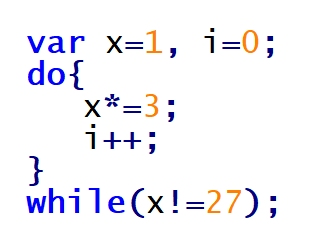
Pytanie nr 443
Poprawne udokumentowanie wzorca weryfikacji pola nazwa w części kodu aplikacji JavaScript to
A. /* Pole nazwa może składać się z dowolnego ciągu cyfr (z wyłączeniem 0), małych i dużych liter. */
B. /* Pole nazwa powinno składać się w kolejności: z ciągu cyfr (z wyłączeniem 0), następnie dużej litery i ciągu małych liter. */
C. /* Pole nazwa musi składać się w kolejności: z ciągu cyfr (z wyłączeniem 0), następnie dużej litery i dwóch małych liter. */
D. /* Pole nazwa może zawierać dowolny ciąg cyfr (z wyłączeniem 0), następnie musi zawierać dużą literę i ciąg minimum dwóch małych liter. */
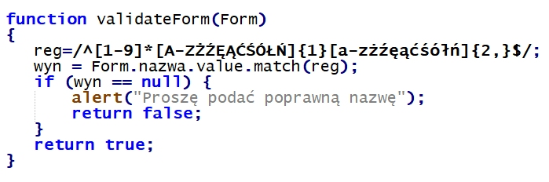
Pytanie nr 444
Włączenie do kodu skryptu zawartości pliku egzamin.php, zawierającego kod PHP, wymaga dodania instrukcji
A. fgets("egzamin.php");
B. fopen("egzamin.php");
C. getfile("egzamin.php");
D. include("egzamin.php");
Pytanie nr 445
Deklaracja typu dokumentu HTML: <!DOCTYPE HTML> oznacza, że kod jest napisany w wersji
A. 4
B. 5
C. 6
D. 7
Pytanie nr 446
Dołączenie zewnętrznego arkusza stylów do kodu HTML jest realizowane przy użyciu znacznika
A. <css>
B. <link>
C. <style>
D. <meta>
Pytanie nr 447
Który z rysunków obrazuje efekt działania przedstawionego fragmentu kodu HTML?
A. A
B. B
C. C
D. D

Pytanie nr 448
Przedstawione pole input umożliwi
A. wpisanie hasła
B. zaznaczenie opcji
C. wpisanie dowolnego tekstu
D. wybranie opcji z listy o wartościach text1 i text2
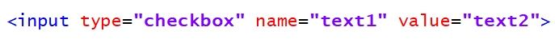
Pytanie nr 449
W języku HTML zdefiniowano hiperłącze ze znakiem #. Co stanie się po wybraniu przedstawionego odsyłacza?
A. Zostanie wywołany skrypt o nazwie dane
B. Otworzy się osobna karta przeglądarki o nazwie dane
C. Zostanie wybrany adres względny URL o nazwie dane
D. Strona przewinie się do elementu o wartości id równej dane

Pytanie nr 450
Podana definicja stylu CSS sprawi, że nagłówki pierwszego stopnia będą
A. wyjustowane, pisane wielkimi literami, a odstępy między liniami będą ustawione na 10 px
B. wyjustowane, pisane małymi literami, a odstępy między literami będą ustawione na 10 px
C. wyśrodkowane, pisane małymi literami, a odstępy między liniami będą ustawione na 10 px
D. wyśrodkowane, pisane wielkimi literami, a odstępy między literami będą ustawione na 10 px
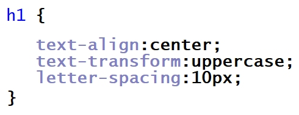
Pytanie nr 451
Jak zdefiniować w języku CSS formatowanie hiperłącza, żeby nieodwiedzony link był w kolorze żółtym, a odwiedzony w kolorze zielonym?
A. a:visited {color: yellow;} a:link{color: green;}
B. a:hover {color: green;} a:link{color: yellow;}
C. a:hover {color: yellow;} a:visited{color: green;}
D. a:link {color: yellow;} a:visited{color: green;}
Pytanie nr 452
W języku CSS zdefiniowano formatowanie dla stopki. Aby użyć tego formatowania dla bloku opisanego znacznikiem div, należy zapisać
A. <div "stopka">
B. <div id="stopka">
C. <div title="stopka">
D. <div class="stopka">
Pytanie nr 453
Przedstawiono efekt formatowania CSS oraz kod HTML. Jak należy zdefiniować styl, aby osiągnąć takie formatowanie?
A. .first-line {font-size: 200%; color:brown;}
B. #first-line {font-size: 200%; color:brown;}
C. p::first-line {font-size: 200%; color:brown;}
D. p.first-line {font-size: 200%; color:brown;}
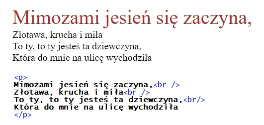
Pytanie nr 454
Przedstawione formatowanie CSS sprawi, że dla prezentowanego nagłówka trzeciego stopnia
A. tło będzie szare
B. tło będzie pomarańczowe
C. kolor czcionki będzie szary
D. kolor czcionki będzie pomarańczowy

Pytanie nr 455
W języku XHTML zapisano fragment kodu, który zawiera błąd walidacji. Na czym polega ten błąd?
A. Znacznik <br> powinien być zamknięty
B. Nie istnieje nagłówek szóstego stopnia
C. Znaczniki należy pisać wielkimi literami
D. Znacznik <b> nie może być zagnieżdżany w znaczniku <p>

Pytanie nr 456
Kolor zapisany kodem heksadecymalnym: #1510FE w kodzie RGB będzie miał wartość
A. rgb(15,10,FE)
B. rgb(21,16,FE)
C. rgb(21,16,254)
D. rgb(21,16,255)
Pytanie nr 457
Edytując grafikę w edytorze grafiki rastrowej należy pozbyć się kolorów z rysunku tak, aby obraz był w odcieniach szarości. Można do tego efektu wykorzystać funkcję
A. desaturacji
B. kadrowania
C. szumu RGB
D. filtru rozmycia
Pytanie nr 458
W edytorze grafiki wektorowej stworzono przedstawiony kształt, który powstał z dwóch figur: trójkąta i koła. W celu stworzenia tego kształtu, po narysowaniu figur i odpowiednim ich ustawieniu, należy skorzystać z funkcji
A. sumy
B. różnicy
C. rozdzielenia
D. wykluczenia

Pytanie nr 459
Aby zapisać prostą animację na potrzeby strony internetowej, można skorzystać z formatu
A. GIF
B. JPG
C. PNG
D. CDR
Pytanie nr 460
Tworząc tabelę w języku SQL, zdefiniowano dla kolumny klucz główny. Aby zabezpieczyć ją przed wstawieniem wartości pustej, należy zastosować atrybut
A. NULL
B. UNIQUE
C. DEFAULT
D. NOT NULL
Pytanie nr 461
Dana jest tabela mieszkania zawierająca kolumny o nazwach: adres, metraz, ile_pokoi, standard, status, cena. Wykonanie przedstawionej kwerendy SQL SELECT sprawi, że zostaną wyświetlone
A. Wszystkie dane tych mieszkań, które mają co najmniej 3 pokoje
B. Metraż oraz cena tych mieszkań, które mają więcej niż 3 pokoje
C. Metraż oraz cena tych mieszkań, które mają co najmniej niż 3 pokoje
D. Wszystkie dane oprócz adresu tych mieszkań, które mają więcej niż 3 pokoje

Pytanie nr 462
Do tabeli pracownicy wpisano rekordy. Co zostanie wyświetlone po uruchomieniu kwerendy SQL SELECT podanej w ramce?
A. Wartość 5400, czyli najwyższa pensja pracownika.
B. Wartość 19500, czyli suma wszystkich pensji pracowników.
C. Wartość 10000, czyli suma pensji pracownika o id=4 oraz o id=6
D. Dwie wartości: 4600 i 5400, jako pensje pracowników wyższe niż 4000

Pytanie nr 463
Na przedstawionej tabeli samochody wykonano zapytanie SQL: SELECT model FROM samochody WHERE rocznik=2016; W wyniku podanego zapytania zostaną zwrócone następujące wartości:
A. Fiat, Opel, Toyota
B. Czerwony, grafitowy
C. Punto, Corsa, Corolla
D. Punto, Corsa, Astra, Corolla, Yaris
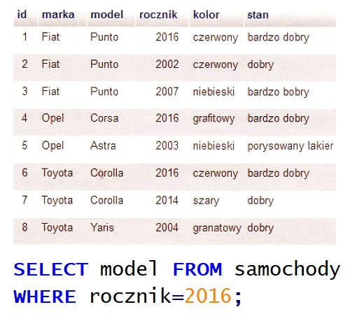
Pytanie nr 464
Baza danych ma dwie tabele połączone relacją 1..n. Którą klauzulą SQL należy połączyć tabele, aby wybrać korespondujące ze sobą wartości z pól obu tabel?
A. OUTER LINK
B. INNER LINK
C. JOIN
D. AND
Pytanie nr 465
Zdefiniowanie klucza obcego jest niezbędne do utworzenia
A. transakcji
B. relacji 1..n
C. relacji 1..1
D. klucza podstawowego
Pytanie nr 466
Zgodnie z właściwościami ACID, dotyczącym wykonania transakcji, wymaganie trwałości (ang. durability) oznacza, że
A. transakcja może być w pewnych warunkach podzielona na dwa niezależne etapy
B. w czasie wykonania transakcji dane mogą być modyfikowane przez inne transakcje
C. w przypadku naruszenia spójności bazy danych transakcja usuwa tabele z kluczami obcymi
D. dane zatwierdzone przez transakcję powinny być dostępne niezależnie od tego, co się będzie działo po jej zakończeniu
Pytanie nr 467
Baza danych zawiera tabelę faktury o polach: numer, data, id_klienta, wartość, status. Każdego dnia generowany jest raport faktur z bieżącego dnia. Wyświetlane są jedynie numery i wartości faktur. Która z kwerend SQL służy do stworzenia tego raportu?
A. SELECT * FROM faktury;
B. SELECT numer,wartość FROM faktury;
C. SELECT * FROM faktury WHERE data=CURRENT_DATE();
D. SELECT numer, wartosc FROM faktury WHERE data=CURRENT_DATE();
Pytanie nr 468
Polecenie SQL, które usuwa bazę danych o nazwie firma, ma postać
A. DROP firma;
B. ALTER firma DROP;
C. DROP DATABASE firma;
D. ALTER firma DROP DATABASE;
Pytanie nr 469
Zastosowanie kwerendy SQL: DELETE FROM mieszkania WHERE status=1; spowoduje usunięcie
A. tabeli mieszkania z bazy danych
B. pola o nazwie status z tabeli mieszkania
C. rekordów, w których pole status jest równe 1, z tabeli mieszkania
D. tabel, w których pole status jest równe 1, z bazy danych mieszkania
Pytanie nr 470
Aby przywrócić bazę danych z kopii bezpieczeństwa na serwerze MSSQL, należy posłużyć się poleceniem
A. EXPORT DATABASE
B. BACKUP DATABASE
C. RESTORE DATABASE
D. UNBACKUP DATABASE
Pytanie nr 471
W języku SQL wykonano przedstawione w ramce polecenia GRANT. Kto będzie miał prawo do przeglądania danych oraz ich zmiany?
A. Adam i Anna
B. Tylko Tomasz
C. Tomasz i Anna
D. Tomasz i Adam

Pytanie nr 472
W języku PHP zastosowano funkcję is_int(). Które z podanych wywołań tej funkcji zwróci wartość TRUE?
A. is_int("135")
B. is_int(NULL)
C. is_int(13.5)
D. is_int(135)
Pytanie nr 473
W języku JavaScript należy zapisać warunek, który będzie spełniony, gdy zmienna a będzie dowolną liczbą naturalną dodatnią (bez 0) lub gdy zmienna b będzie dowolną liczbą z przedziału domkniętego od 10 do 100. Użyte w tym warunku wyrażenie logiczne będzie miało postać
A. (a>0) || ((b>=10) || (b<=100))
B. (a>0) && ((b>=10) || (b<=100))
C. (a>0) || ((b>=10) && (b<=100))
D. (a>0) && ((b>=10) && (b<=100))
Pytanie nr 474
W języku JavaScript wynik działania instrukcji zmienna++; będzie taki sam jak instrukcji
A. zmienna--;
B. zmienna+=1;
C. zmienna=zmienna+10;
D. zmienna===zmienna+1;
Pytanie nr 475
W języku PHP zmienna predefiniowana $_SESSION zawiera
A. zmienne zarejestrowane w bieżącej sesji
B. spis zarejestrowanych sesji na serwerze WWW
C. zmienne przesyłane do skryptu za pomocą formularza
D. zmienne przesyłane do skryptu za pomocą ciastek (cookie)
Pytanie nr 476
Przedstawiony kod źródłowy ma za zadanie wyświetlić
A. wylosowane liczby od 1 do 99
B. kolejne liczby od 1 do 100
C. wczytane z klawiatury liczby tak długo, aż nie zostanie wczytana wartość 0
D. losowe liczby od 0 do 100 tak długo, aż nie zostanie wylosowana wartość 0

Pytanie nr 477
W języku JavaScript należy odwołać się do elementu zawartego w pierwszym paragrafie przedstawionego fragmentu strony HTML. Można to wykonać za pomocą funkcji
A. getElement("p");
B. getElementById("p1");
C. getElementByTagName("p")[0];
D. getElementByClassName("p.1")[0];

Pytanie nr 478
O przedstawionym obiekcie języka JavaScript można powiedzieć, że ma
A. trzy metody
B. trzy właściwości
C. dwie metody i jedną właściwość
D. dwie właściwości i jedną metodę

Pytanie nr 479
W języku JavaScript stworzono funkcję o nazwie liczba_max porównującą trzy liczby naturalne pobrane z parametrów funkcji i zwracającą maksymalną z nich. Prawidłowe wywołanie takiej funkcji wraz z pobraniem jej wyniku będzie miało postać
A. liczba_max(a,b,c);
B. liczba_max(a,b,c,wynik);
C. liczba_max(a,b,c)=wynik;
D. var wynik=liczba_max(a,b,c);
Pytanie nr 480
Które z zadań programistycznych powinno być wykonane po stronie serwera?
A. Zmiana stylu HTML na stronie wywołana przesunięciem kursora
B. Zapisanie danych pobranych z aplikacji internetowej w bazie danych
C. Sprawdzenie danych wpisanych do pola tekstowego w czasie rzeczywistym
D. Ukrywanie i pokazywanie elementów strony w zależności od aktualnego stanu kursora
Pytanie nr 481
Język JavaScrypt ma obsługę
A. obiektów DOM
B. funkcji wirtualnych
C. klas abstrakcyjnych
D. wysyłania ciastek z tą samą informacją do wielu klientów strony
Pytanie nr 482
W prezentowanym kodzie PHP w miejscu kropek powinno znaleźć się polecenie
A. mysqli_fetch_row($zapytanie);
B. mysqli_free_result($zapytanie);
C. mysqli_num_fields($zapytanie);
D. mysqli_query($zapytanie);

Pytanie nr 483
Który z elementów dokumentacji aplikacji powinien znaleźć się w dokumentacji użytkownika?
A. Opis kodu źródłowego
B. Opis obsługi funkcji systemu
C. Opis wykorzystanej technologii i bibliotek
D. Opis algorytmów zastosowanych w kodzie
Pytanie nr 484
Znacznik <s> w języku HTML powoduje
A. migotanie tekstu
B. pochylenie tekstu
C. podkreślenie tekstu
D. przekreślenie tekstu
Pytanie nr 485
Metainformacja "Description" zawarta w pliku źródłowym HTML powinna zawierać
A. opis, co znajduje się na stronie
B. informację, kto jest autorem strony
C. wykazy kluczowe, z których korzystają wyszukiwarki sieciowe
D. nazwę programu, przy użyciu którego została stworzona strona

Pytanie nr 486
Który opis odnosi się do metody POST wysyłania formularza?
A. Może być zapisana jako zakładka w przeglądarce internetowej
B. Dane przesyłane są za pomocą adresu URL, czyli w sposób widoczny dla użytkownika
C. Posiada dodatkowe ograniczenia jakim jest długość adresu - maksymalnie 255 znaków
D. Jest wskazana, gdy przesyłane są informacje poufne, np. hasło, numer telefonu czy numer karty kredytowej
Pytanie nr 487
Atrybut value w polu formularza XHTML
A. ogranicza długość pola
B. wskazuje na nazwę pola
C. ustawia pole tylko do odczytu
D. wskazuje odpowiedź domyślną

Pytanie nr 488
W języku HTML zapis < spowoduje wyświetlenie w przeglądarce znaku
A. >
B. &
C. "
D. <
Pytanie nr 489
Przy użyciu jakiego znacznika HTML otrzymamy tekst napisany czcionką o stałej szerokości znaku, który uwzględnia dodatkowe spacje, tabulacje i znaki końca linii?
A. <ins> ... </ins>
B. <pre> ... </pre>
C. <code> ... </code>
D. <blockquote> ... </blockquote>
Pytanie nr 490
W celu uzyskania efektu widocznego na rysunku, w kodzie HTML, należy umieścić znacznik skrótu <abbr> z atrybutem
A. alt
B. dfn
C. title
D. name
Pytanie nr 491
W HTML, aby wstawić obrazek z tekstem przyległym, znajdującym się pośrodku obrazka, należy zapisać znacznik
A. <img src="obrazek.png" alt="obraz1" hspace="30px"> tekst
B. <img src="obrazek.png" alt="obraz2" align="middle"> tekst
C. <img src="obrazek.png" alt="obraz3" height="50%"> tekst
D. <img src="obrazek.png" alt="obraz4"> tekst
Pytanie nr 492
Który styl CSS pozwoli zdefiniować wyrównanie tekstu do prawej strony?
A. <p style="font: right">tekst</p>
B. <p style="align: right">tekst</p>
C. <p style="position: right">tekst</p>
D. <p style="text-align: right">tekst</p>
Pytanie nr 493
Przedstawiono kod tabeli 3x2. Której z modyfikacji w jej drugim wierszu należy dokonać, aby tabela wyglądała jak na obrazku z niewidocznym wierszem?
A. <tr style="clear: none">
B. <tr style="display: none">
C. <tr style="visibility: hidden">
D. <tr style="display: table-cell">
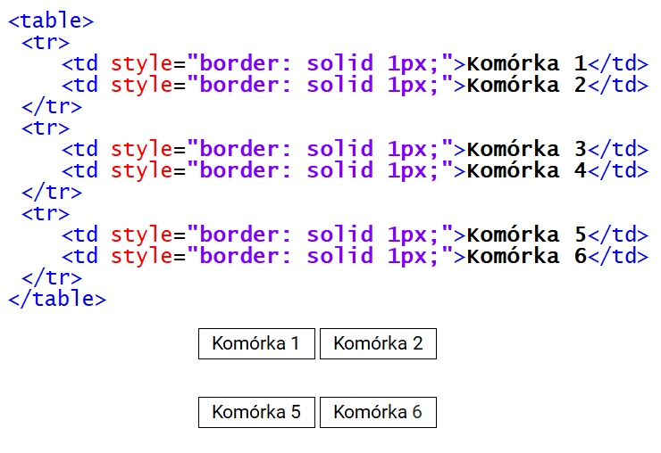
Pytanie nr 494
Który zapis znacznika <div> może wystąpić w dokumencie HTML tylko jeden raz, a ponowne użycie tego zapisu spowoduje wygenerowanie błędów podczas walidacji dokumentu?
A. <div class="klasa1 klasa2">
B. <div id="identyfikator">
C. <div class="klasa">
D. <div>
Pytanie nr 495
Przedstawiona linia kreskowana w stylu obramowania CSS jest określona właściwością
A. solid
B. double
C. dotted
D. dashed

Pytanie nr 496
Systemem zarządzania treścią pozwalającym na łatwe utworzenie i aktualizację serwisu WWW jest
A. CMS
B. SQL
C. PHP
D. CSS
Pytanie nr 497
W podanym kodzie HTML przedstawiony styl CSS jest stylem
A. nagłówkowym
B. dynamicznym
C. zewnętrznym
D. lokalnym

Pytanie nr 498
Kolor zapisany w notacji heksadecymalnej #0000FF to
A. czarny
B. zielony
C. niebieski
D. czerwony
Pytanie nr 499
Które stwierdzenie odnosi się do skalowania obrazu?
A. Łączy lub odejmuje kształty
B. Polega na zmianie sposobu zapisu obrazu tak, aby zmienić sposób kompresji
C. Powoduje zmianę rozmiaru obrazu bez zmieniania ważnej zawartości wizualnej
D. Powoduje wycięcie z oryginalnego obrazu określonego jego fragmentu z celu uzyskania optymalnego widoku
Pytanie nr 500
W języku HTML atrybutem znacznika video, który włącza tryb odtwarzania w kółko, jest
A. loop
B. muted
C. poster
D. controls
Pytanie nr 501
W języku HTML, aby dodać animację FLASH (z rozszerzeniem .swf) na stronę internetową, należy użyć znacznika
A. <img>
B. <audio>
C. <video>
D. <object>
Pytanie nr 502
Formatem plików dźwiękowych z kompresją bezstratną jest
A. MP3
B. WAW
C. FLAC
D. MPEG
Pytanie nr 503
Na tabeli muzyka, przedstawionej na rysunku, zostało wykonane następujące zapytanie SQL. Jaki wynik zwróci ta kwerenda?
A. Czesław
B. pusty wynik
C. Czesław, Niemen
D. Czesław, Czechowski

Pytanie nr 504
Jaki wynik zwróci zapytanie z ramki wykonane na przedstawionej tabeli?
A. 0
B. 1
C. 3
D. 4

Pytanie nr 505
W relacyjnym modelu baz danych krotkami nazywa się
A. liczbę rekordów tabeli
B. wszystkie wiersze tabeli wraz z wierszem nagłówkowym
C. wszystkie kolumny tabeli, które zawierają atrybuty obiektu
D. wiersze tabeli z wyjątkiem wiersza nagłówkowego, w którym umieszcza się nazwy kolumn
Pytanie nr 506
Co można powiedzieć o normalizacji przedstawionej tabeli?
A. Tabela nie jest znormalizowana
B. Tabela jest w trzeciej postaci normalnej
C. Tabela jest w drugiej postaci normalnej
D. Tabela jest w pierwszej postaci normalnej

Pytanie nr 507
Które zapytanie SQL dla tabeli pracownicy utworzonej według schematu: id, imie, nazwisko, plec, zarobek, obliczy osobno średni zarobek kobiet i średni zarobek mężczyzn?
A. SELECT AVG(zarobek) FROM pracownicy GROUP BY plec;
B. SELECT AVG(zarobek) FROM pracownicy AS sredni_zarobek;
C. SELECT AVG(zarobek) FROM pracownicy WHERE plec='k' AND plec='m';
D. SELECT AVG(zarobek) FROM pracownicy GROUP BY plec HAVING plec='k' AND plec='m';
Pytanie nr 508
Które polecenie SQL zamieni w tabeli tab w kolumnie kol wartość Ania na Zosia?
A. UPDATE tab SET kol='Zosia' WHERE kol='Ania';
B. UPDATE tab SET kol='Ania' WHERE kol='Zosia';
C. ALTER TABLE tab CHANGE kol='Zosia' kol='Ania';
D. ALTER TABLE tab CHANGE kol='Ania' kol='Zosia';
Pytanie nr 509
Aby w tworzonej w języku SQL tabeli praca dodać w kolumnie stawka warunek, że musi przyjmować rzeczywiste wartości dodatnie mniejsze od 50, należy użyć zapisu
A. ... stawka float CHECK(stawka IN (0, 50.00))
B. ... stawka float CHECK(stawka>0 OR stawka<50.00)
C. ... stawka float CHECK(stawka>0 AND stawka<50.00)
D. ... stawka float CHECK(stawka BETWEEN 0 AND 50.00)
Pytanie nr 510
W jaki sposób wykonanie podanej w ramce kwerendy SQL wpłynie na tabelę pracownicy?
A. Zmieni typ danych kolumny plec na znakowy o stałej długości 9
B. Doda kolumnę plec ze znakowym typem danych o stałej długości 9
C. Zmieni typ danych kolumny plec na znakowy o zmiennej długości 9
D. Doda kolumnę plec ze znakowym typem danych o zmiennej długości 9

Pytanie nr 511
Wykonując raport w systemie obsługi relacyjnych baz danych, umożliwia się
A. analizę wybranych danych
B. usuwanie danych w tabelach
C. dodawanie danych w tabelach
D. aktualizowanie danych w tabelach
Pytanie nr 512
Przedstawiona instrukcja JavaScript wyświetli
A. 1
B. 0
C. true
D. false

Pytanie nr 513
Która wartość tekstowa nie pasuje do podanego w ramce wzorca wyrażenia regularnego?
A. Kowalski
B. Kasprowicza
C. Jelenia Góra
D. Nowakowska-Kowalska

Pytanie nr 514
Który modyfikator wskazuje podany opis?
A. static
B. public
C. private
D. protected

Pytanie nr 515
Tworzenie i przypisanie do zmiennej tablicy asocjacyjnej zrealizuje się w PHP zapisem
A. $tab = array (1, 2, 3, 4);
B. $tab = array (array (1, 2), array (3, 4));
C. $tab = array (); $tab[] = array (1, 2, 3, 4);
D. $tab = array ("a" => 1, "b" => 2, "c" => 3);
Pytanie nr 516
W której technologii nie jest możliwe przetwarzanie danych użytkownika wprowadzanych na stronie WWW?
A. CSS
B. PHP
C. AJAX
D. JavaScript
Pytanie nr 517
W programowaniu obiektowym w języku JavaScript użyty w przedstawionym kodzie zapis: this.zawod oznacza
A. klasę
B. metodę
C. konstruktor
D. właściwość

Pytanie nr 518
W języku PHP sumę logiczną oznacza operator
A. !
B. ||
C. +
D. &&
Pytanie nr 519
W jakim formacie będzie wyświetlana data po uruchomieniu przedstawionego kodu?
A. Monday, 10 July 2017
B. 10, Monday July 2017
C. Monday, 10th July 17
D. Monday, 10th July 2017

Pytanie nr 520
Wynikiem działania pętli for w przedstawionym kodzie PHP jest wyświetlenie liczb
A. 1 0
B. 1 1
C. 1 0 1
D. 1 0 1 0

Pytanie nr 521
W JavaScript wywołanie zdarzenia onKeydown nastąpi wtedy, gdy klawisz
A. myszki został naciśnięty
B. myszki został zwolniony
C. klawiatury został naciśnięty
D. klawiatury został zwolniony
Pytanie nr 522
Po wykonaniu przedstawionego kodu JavaScript wyświetli się wartość
A. 11
B. 12
C. 13
D. 14

Pytanie nr 523
Wciśnięcie przycisku o treści "niebieski" spowoduje wykonanie przedstawionego kodu JavaScript. Jaki będzie efekt jego działania?
A. Zmiana koloru przycisku na niebieski
B. Zmiana koloru tekstu "i skrypt" na niebieski
C. Zmiana koloru tekstu "Przykładowy tekst" na niebieski
D. Zmiana koloru tekstu "Przykładowy tekst i skrypt" na niebieski

Pytanie nr 524
Którego znacznika NIE NALEŻY umieszczać w nagłówku dokumentu HTML?
A. <h2>
B. <link>
C. <title>
D. <meta>
Pytanie nr 525
Znacznik języka HTML, który służy do oznaczenia fragmentu tekstu jako kodu komputerowego, to
A. <em> </em>
B. <span> </span>
C. <code> </code>
D. <blockquote> </blockquote>
Pytanie nr 526
W języku HTML dla hiperłącza wartość atrybutu target, która odpowiada za załadowanie strony do nowego okna lub karty, to
A. _parent
B. _blank
C. _self
D. _top
Pytanie nr 527
Znacznik <ins> w języku HTML służy do oznaczenia
A. cytowanego bloku tekstu
B. tekstu przeformatowanego
C. tekstu, który został dodany
D. tekstu, który został usunięty
Pytanie nr 528
Do określenia listy definicji w kodzie HTML używa się znacznika
A. <dl>
B. <td>
C. <abbr>
D. <label>
Pytanie nr 529
Jaki rezultat zostanie wyświetlony po wykonaniu przedstawionego kodu HTML?
A. A
B. B
C. C
D. D
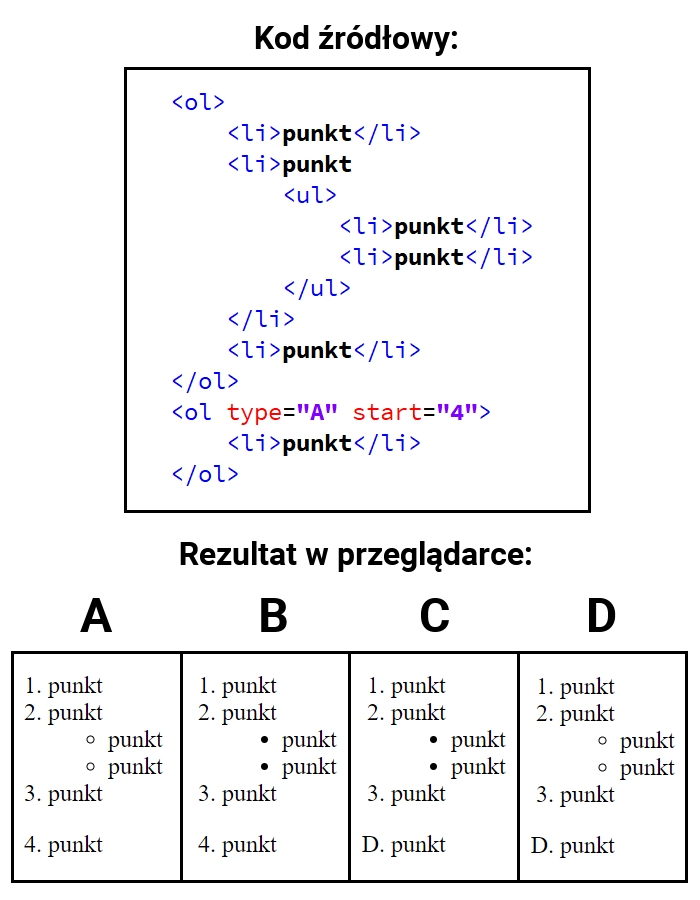
Pytanie nr 530
W języku HTML, aby scalić w pionie dwie sąsiednie komórki w kolumnie tabeli, należy zastosować atrybut
A. colspan
B. rowspan
C. cellpadding
D. cellspacing
Pytanie nr 531
Chcąc dodać do listy rozwijalnej przedstawionego formularza HTML możliwość zaznaczenia kilku opcji jednocześnie, należy w znaczniku select dodać atrybut
A. size
B. value
C. multiple
D. disabled
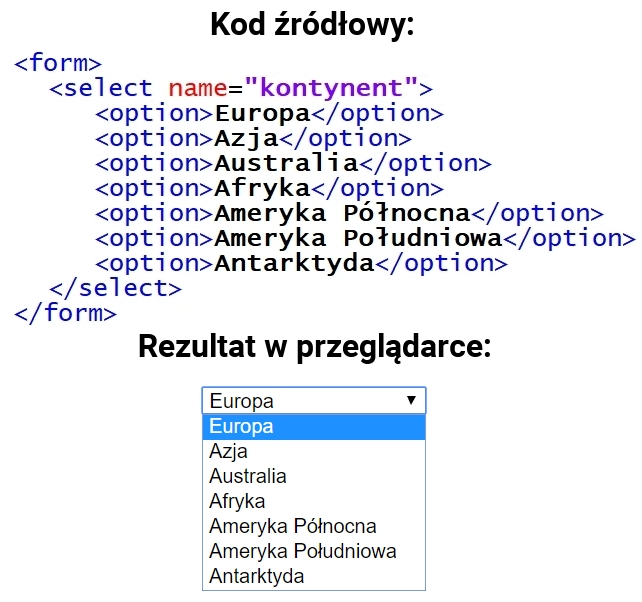
Pytanie nr 532
Jak nazywa się metoda dołączania arkusza stylów do dokumentu HTML użyta w przedstawionym kodzie?
A. Styl zewnętrzny
B. Styl wewnętrzny
C. Styl wpisany, lokalny
D. Styl alternatywny, zewnętrzny
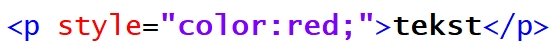
Pytanie nr 533
Tekst paragrafu, wyśrodkowany w pionie, opisuje w CSS reguła
A. vertical-align: middle
B. vertical-align: center
C. text-align: center
D. align: middle
Pytanie nr 534
Dla akapitu zdefiniowano styl CSS. Które właściwości stylu CSS poprawnie opisują dla akapitu krój czcionki: Arial; rozmiar czcionki: 16 pt; styl czcionki: pochylenie?
A. p {font-style: Arial; size: 16px; font-weight: normal;}
B. p {font-family: Arial; font-size: 16pt; font-style: italic;}
C. p {font-style: Arial; font-size: 16pt; font-variant: normal;}
D. p {font-family: Arial; font-size: 16px; font-variant: normal;}
Pytanie nr 535
W stylach CSS, aby ustalić styl linii obramowania jako linię kreskową, należy zastosować wartość
A. solid
B. dotted
C. dashed
D. groove
Pytanie nr 536
W CSS symbolem jednostki miary, wyrażonej w punktach edytorskich, jest
A. em
B. px
C. pt
D. in
Pytanie nr 537
Transformację w stylach CSS, polegającą na zamianie tylko pierwszych liter wszystkich wyrazów na wielkie, otrzymamy stosując polecenie
A. underline
B. capitalize
C. uppercase
D. lowercase
Pytanie nr 538
Podany styl tworzy obramowanie pojedyncze, o następujących cechach:
A. krawędź górna jest koloru czerwonego, krawędź prawa koloru niebieskiego, krawędź dolna koloru zielonego, krawędź lewa koloru żółtego
B. krawędź prawa jest koloru czerwonego, krawędź dolna koloru niebieskiego, krawędź lewa koloru zielonego, krawędź górna koloru żółtego
C. krawędź górna jest koloru czerwonego, krawędź lewa koloru niebieskiego, krawędź dolna koloru zielonego, krawędź prawa koloru żółtego
D. krawędź lewa jest koloru czerwonego, krawędź dolna koloru niebieskiego, krawędź prawa koloru zielonego, krawędź górna koloru żółtego
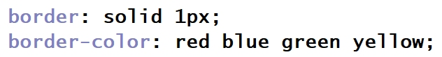
Pytanie nr 539
Która z operacji NIE WPŁYNIE na rozmiar / wielkość zajmowanej pamięci pliku graficznego?
A. Skalowanie obrazu za pomocą atrybutów HTML
B. Zmiana rozdzielczości obrazu
C. Interpolacja
D. Kompresja
Pytanie nr 540
Bitmapa jest obrazem
A. rastrowym
B. analogowym
C. wektorowym
D. interakcyjnym
Pytanie nr 541
Jednostka ppi (pixels per inch)
A. określa rozdzielczość obrazów rastrowych
B. określa rozdzielczości obrazów generowanych przez drukarki i plotery
C. jest parametrem określającym rozdzielczość cyfrowych urządzeń wykonujących pomiary
D. jest jednostką rozdzielczości skanerów określająca częstość wykonywanych próbkowań obrazu
Pytanie nr 542
Jaką funkcję pełni kwerenda krzyżowa w bazie MS Access?
A. Modyfikuje istniejące dane w tabeli
B. Usuwa rekordy tabel według podanych kryteriów
C. Dołącza do wybranej tabeli rekordy z innej tabeli
D. Prezentuje zliczone wartości z pola i przyporządkowuje je w wiersze i kolumny
Pytanie nr 543
Funkcja CONCAT() w języku SQL odpowiada za
A. usunięcie wskazanego tekstu
B. łączenie wyświetlanego tekstu
C. przycięcie wyświetlanego tekstu
D. wyznaczenie z wejściowego tekstu podłańcucha znaków
Pytanie nr 544
Na podstawie tabeli Towar wykonano następujące zapytanie SQL. Jaki będzie wynik tej operacji?
A. Zeszyt A5 w linie, Zeszyt A5, Kredki 24 kolory, Papier ksero A4
B. Zeszyt A5, Zeszyt A5 w linie, Kredki 24 kolory, Papier ksero A4
C. Papier ksero A4, Kredki 24 kolory, Zeszyt A5, Zeszyt A5 w linie
D. Papier ksero A4, Kredki 24 kolory, Zeszyt A5 w linie, Zeszyt A5

Pytanie nr 545
W tabeli produkt znajdują się przedmioty wyprodukowane po 2000 roku, z polami nazwa i rok_produkcji. Klauzula SQL wyświetli listę przedmiotów wyprodukowanych
A. w roku 2017
B. po roku 2017
C. przed rokiem 2017
D. w latach innych niż 2017
Pytanie nr 546
Struktura prostych baz danych, w których wszystkie dane są przechowywane w jednej tabeli, nazywana jest modelem
A. sieciowym
B. relacyjnym
C. jednorodnym
D. hierarchicznym
Pytanie nr 547
W przedstawionym diagramie bazy danych biblioteka, elementy: czytelnik, wypozyczenie i ksiazka są
A. atrybutami
B. krotkami
C. encjami
D. polami

Pytanie nr 548
W języku zapytań SQL, aby dodać do tabeli Towar kolumnę rozmiar typu znakowego o maksymalnej długości 20 znaków, należy wykonać polecenie
A. ALTER TABLE Towar ADD rozmiar varchar(20);
B. ALTER TABLE Towar DROP COLUMN rozmiar varchar(20);
C. ALTER TABLE Towar ALTER COLUMN rozmiar varchar(20);
D. ALTER TABLE Towar CREATE COLUMN rozmiar varchar(20);
Pytanie nr 549
W języku skryptowym JavaScript operatory: ||, && należą do grupy operatorów
A. bitowych
B. logicznych
C. przypisania
D. arytmetycznych
Pytanie nr 550
Liczba 0x142, zapisana w kodzie skryptu JavaScript, ma postać
A. dziesiętną
B. dwójkową
C. ósemkową
D. szesnastkową
Pytanie nr 551
W aplikacjach internetowych tablice asocjacyjne to tablice, w których
A. indeks jest łańcuchem tekstowym
B. istnieją przynajmniej dwa wymiary
C. elementy tablicy są zawsze indeksowane od 0
D. w każdej komórce tablicy przechowywana jest inna tablica
Pytanie nr 552
Odwołaniem do imienia Agata, zawartym w przedstawionej tablicy JavaScript, jest element
A. Imiona[4];
B. Imiona[3];
C. Imiona[Agata];
D. Imiona['Agata'];
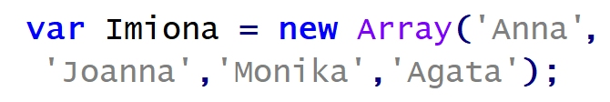
Pytanie nr 553
Specjalna metoda danej klasy stosowana w programowaniu obiektowym, wywoływana automatycznie podczas tworzenia obiektu, której podstawowym zadaniem jest zwykle zainicjowanie pól, to
A. obiekt
B. destruktor
C. konstruktor
D. specyfikator dostępu
Pytanie nr 554
Wskaż poprawny zapis instrukcji zapisanej w języku JavaScript.
A. document.write("Liczba π z dokładnością do 2 miejsc po przecinku ≈ " + 3.14 );
B. document.write("Liczba π z dokładnością do 2 miejsc po przecinku ≈ " ; 3.14 );
C. document.write("Liczba π z dokładnością do 2 miejsc po przecinku ≈ " . 3.14 );
D. document.write("Liczba π z dokładnością do 2 miejsc po przecinku ≈ " 3.14 );
Pytanie nr 555
Wskaż pętlę, która w języku JavaScript wyświetli sześć kolejnych liczb parzystych
A. for(i=2;i<12;i+=2) {document.write(i);}
B. for(i=2;i<=12;i+=2) {document.write(i);}
C. for(i=2;i<12;i++) {i++; document.write(i);}
D. for(i=2;i<=12;i++) {i=i+2; document.write(i);}
Pytanie nr 556
Wybierz poprawną definicję funkcji w języku JavaScript
A. nazwa_funkcji(argumenty) {instrukcje;}
B. new nazwa_funkcji(argumenty) {instrukcje;}
C. function nazwa_funkcji(argumenty) {instrukcje;}
D. typ_funkcji nazwa_funkcji(argumenty) {instrukcje;}
Pytanie nr 557
W języku PHP zapisywanie danych do pliku realizuje funkcja
A. fgets()
B. fputs()
C. fopen()
D. freadfile()
Pytanie nr 558
Plikiem konfiguracyjnym, który pozwala na zdefiniowanie ustawień PHP dla całego serwera, jest
A. my.ini
B. php.ini
C. httpd.conf
D. config.inc.php
Pytanie nr 559
Efektem wykonania przedstawionego kodu PHP jest wyświetlenie komunikatu
A. warunek1
B. warunek2
C. warunek3
D. warunek4
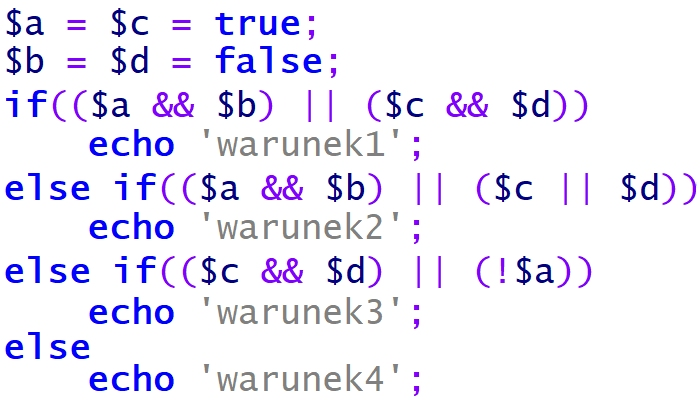
Pytanie nr 560
Ile razy zostanie wykonana pętla zapisana w przedstawionym skrypcie PHP?
A. 0
B. 5
C. 6
D. 7
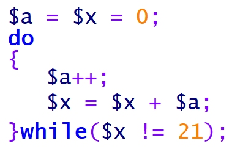
Pytanie nr 561
Jaką wartość zwróci funkcja empty($a); zapisana w języku PHP, gdy zmienna $a przyjmie wartość liczbową równą 0?
A. 0
B. TRUE
C. NULL
D. FALSE
Pytanie nr 562
W języku JavaScript, funkcja matematyczna Math.pow() służy do wyznaczenia
A. potęgi liczby
B. wartości przybliżonej liczby
C. wartości bezwzględnej liczby
D. pierwiastka kwadratowego liczby
Pytanie nr 563
Jakie wartości muszą przyjmować zmienne w funkcji biblioteki mysqli, aby połączyć się z serwerem i bazą danych?
A. adres serwera - $a, nazwa bazy danych - $b, login - $c, hasło - $d
B. adres serwera - $c, nazwa bazy danych - $d, login - $a, hasło - $b
C. adres serwera - $c, nazwa bazy danych - $d, login - $b, hasło - $a
D. adres serwera - $a, nazwa bazy danych - $d, login - $b, hasło - $c

Pytanie nr 564
W języku HTML, aby nadać dokumentowi tytuł "Moja strona", który będzie wyświetlany na zakładce przeglądarki internetowej, należy posłużyć się zapisem
A. <title>Moja strona</title>
B. <head>Moja strona</head>
C. <meta title="Moja strona">
D. <meta name="title" content="Moja strona">
Pytanie nr 565
Stronę internetową zapisano w języku XHTML. Który z kodów stanowi implementację przedstawionego fragmentu strony, jeżeli żadne style CSS nie zostały zdefiniowane?
A. A
B. B
C. C
D. D
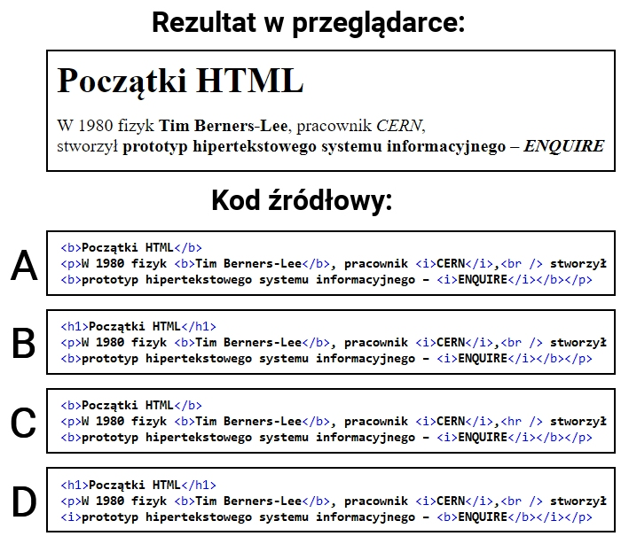
Pytanie nr 566
W języku HTML zdefiniowano listę, która
A. jest punktowana z zagłębioną listą numerowaną
B. jest numerowana z zagłębioną listą punktowaną
C. nie ma zagłębień i jest punktowana, wyświetla 5 punktów
D. nie ma zagłębień i jest numerowana, słowo "niebieski" ma przyporządkowany numer 5
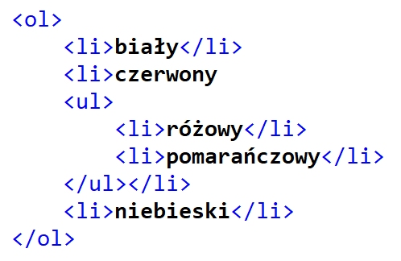
Pytanie nr 567
Który znacznik służy budowaniu hierarchii tekstu w języku HTML?
A. <u>
B. <h6>
C. <head>
D. <style>
Pytanie nr 568
W języku HTML, aby wstawić na stronę obraz zapisany w formacie JPG, należy zastosować znacznik
A. <src>
B. <jpg>
C. <img>
D. <table>
Pytanie nr 569
W formularzu HTML zastosowano znacznik <input>. Wyświetlone pole będzie służyło do wprowadzania maksymalnie
A. 30 znaków, które są widoczne podczas wprowadzania
B. 20 znaków, które są widoczne podczas wprowadzania
C. 20 znaków, które nie są widoczne w polu tekstowym
D. 30 znaków, które nie są widoczne w polu tekstowym

Pytanie nr 570
W języku CSS zdefiniowano formatowanie paragrafu, które przypisze mu następujące cechy:
A. tło czerwone, kolor tekstu niebieski, marginesy zewnętrzne ustawione na wartość 40px
B. tło czerwone, kolor tekstu niebieski, marginesy wewnętrzne ustawione na wartość 40px
C. tło niebieskie, kolor tekstu czerwony, marginesy zewnętrzne ustawione na wartość 40px
D. tło niebieskie, kolor tekstu czerwony, marginesy wewnętrzne ustawione na wartość 40px

Pytanie nr 571
Które z formatowań NIE JEST wyrażone w języku CSS?
A. A
B. B
C. C
D. D

Pytanie nr 572
W języku CSS przypisano regułę: float:left; dla bloku. Reguła ta zostanie wykorzystana do
A. wyrównania tekstu do lewej strony
B. ustawienia bloków jeden pod drugim
C. ustawienia bloku na lewo względem innych
D. wyrównanie elementów tabeli do lewej strony
Pytanie nr 573
Przedstawiona w języku CSS definicja stylu dotyczy odsyłacza, który
A. ma błędny adres URL
B. został wcześniej odwiedzony
C. jeszcze nie został odwiedzony
D. wskaźnik myszy ma ustawiony nad sobą
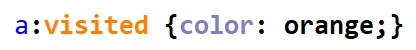
Pytanie nr 574
W języku CSS wartości: underline, overline, line-through oraz blink dotyczą właściwości
A. font-style
B. text-align
C. text-decoration
D. font-decoration
Pytanie nr 575
W kodzie HTML kolor biały można zapisać za pomocą wartości
A. #255255
B. #000000
C. rgb(FFFF,FF)
D. rgb(255,255,255)
Pytanie nr 576
Grafik wykonał logo strony internetowej. To czarny znaczek na przezroczystym tle. Aby zachować wszystkie atrybuty obrazu i umieścić go na stronie internetowej, grafik powinien zapisać obraz w formacie
A. JPG
B. BMP
C. PNG
D. CDR
Pytanie nr 577
Grafik chce przekształcić bez utraty jakości obraz JPG w format PNG w ten sposób, żeby wszędzie tam, gdzie w pierwotnym obrazie jest kolor biały, w obrazie docelowym była przezroczystość. Aby to zrobić, powinien
A. dodać kanał alfa
B. zmniejszyć rozdzielczość obrazu
C. przekształcić obraz w odcienie szarości
D. zaimportować obraz do edytora grafiki wektorowej
Pytanie nr 578
W języku SQL, aby wstawić wiersz danych do bazy, należy zastosować polecenie
A. INSERT INTO
B. SELECT ROW
C. CREATE ROW
D. CREATE INTO
Pytanie nr 579
W zapytaniu SQL umieszczonym poniżej, znak gwiazdki oznacza, że w wyniku tego zapytania
A. zostanie zignorowany warunek sprawdzający imię
B. zostanie wyświetlone pole o nazwie "*" (gwiazdka)
C. zostaną wyświetlone wszystkie rekordy tabeli mieszkancy
D. zostaną wyświetlone wszystkie kolumny tabeli mieszkancy

Pytanie nr 580
Które dane z 8 rekordów wpisanych do tabeli zwierzeta zostaną wyświetlone w wyniku podanego zapytania SQL?
A. Dika, Fuks
B. Figaro, Dika, Fuks
C. Fafik, Brutus, Dika, Fuks
D. Anna Kowalska, Jan Nowak

Pytanie nr 581
Dana jest tabela uczniowie, do której wpisano rekordy jak na rysunku. Co będzie wynikiem działania przedstawionego zapytania SQL?
A. Wartość 3.5
B. Dane 4, 3, 4, 3
C. Suma ocen równa 14
D. Liczba wierszy równa 4

Pytanie nr 582
Tabele Osoby i Adresy są połączone relacją jeden do wielu. Jakie zapytanie SQL należy zapisać, aby korzystając z tej relacji, prawidłowo wyświetlić nazwiska oraz przyporządkowane im miasta?
A. SELECT nazwisko, Miasto FROM Osoby, Adresy;
B. SELECT nazwisko, Miasto FROM Osoby, Adresy WHERE Osoby.id=Adresy.id;
C. SELECT nazwisko, Miasto FROM Osoby.Adresy_id=Adresy.id FROM Osoby, Adresy;
D. SELECT nazwisko, Miasto FROM Osoby JOIN Adresy ON Osoby.Adresy_id=Adresy.id;

Pytanie nr 583
Tabela Pacjenci ma pola: imie, nazwisko, wiek, lekarz_id. Aby zestawić raport zawierający wyłącznie imiona i nazwiska pacjentów poniżej 18 roku życia, którzy zapisani są do lekarza o id równym 6, można posłużyć się kwerendą SQL
A. SELECT imie, nazwisko WHERE wiek<18 OR lekarz_id=6;
B. SELECT imie, nazwisko WHERE wiek<18 AND lekarz_id=6;
C. SELECT imie, nazwisko FROM Pacjenci WHERE wiek<18 OR lekarz_id=6;
D. SELECT imie, nazwisko FROM Pacjenci WHERE wiek<18 AND lekarz_id=6;
Pytanie nr 584
W języku SQL polecenie ALTER TABLE ma za zadanie
A. usuwać tabelę z bazy danych
B. dodawać tabelę do bazy danych
C. modyfikować kolumny w tabeli
D. modyfikować dane rekordów w tabeli
Pytanie nr 585
Podane polecenie SQL ma za zadanie
A. Ustawić na 1 wartość pola Uczen
B. zwiększyć o jeden wartość pola Uczen
C. ustawić wartość kolumny id_klasy na 1 dla wszystkich rekordów w tabeli Uczen
D. zwiększyć o jeden wartość kolumny id_klasy dla wszystkich rekordów tabeli Uczen
Pytanie nr 586
W bazie danych MySQL polecenie CREATE USER umożliwia
A. utworzenie użytkownika
B. zmodyfikowanie hasła istniejącego użytkownika
C. wyświetlenie informacji o istniejącym użytkowniku
D. utworzenie użytkownika i nadanie mu praw do bazy
Pytanie nr 587
Podane polecenie SQL nadaje prawo SELECT
A. do wszystkich pól w tabeli hurtownia
B. do wszystkich tabel w bazie hurtownia
C. dla użytkownika root na serwerze localhost
D. dla użytkownika root na serwerze sprzedawca

Pytanie nr 588
W tabeli pracownicy zdefiniowano klucz główny typu INTEGER z atrybutami NOT NULL oraz AUTO_INCREMENT. Ponadto zdefiniowano pola imie oraz nazwisko. W przypadku zastosowania przedstawionej kwerendy SQL wprowadzającej dane, w której zostało pominięte pole klucza, w bazie danych MySQL nastąpi
A. błąd nieprawidłowej liczby pól
B. zignorowanie polecenia, tabela pozostanie bez zmian
C. wpisanie rekordu do tabeli, dla klucza głównego zostanie przydzielona wartość NULL
D. wpisanie rekordu do tabeli, dla klucza głównego zostanie przydzielona kolejna wartość naturalna

Pytanie nr 589
W języku JavaScript typ boolean może być reprezentowany przez wartość
A. -20
B. 45.3
C. true
D. null
Pytanie nr 590
Które wyrażenie logiczne należy zastosować w języku JavaScript, aby wykonać operacje tylko dla dowolnych liczb ujemnych z przedziału jednostronnie domkniętego <-200,-100)?
A. (liczba <=-200) || (liczba>-100)
B. (liczba >=-200) || (liczba>-100)
C. (liczba >=-200) && (liczba<-100)
D. (liczba <=-200) && (liczba<-100)
Pytanie nr 591
W języku PHP zapisano instrukcję pętli przedstawioną w ramce. Ile powtórzeń będzie miała podana pętla, jeśli zmienna sterująca nie jest modyfikowana w jej wnętrzu, oraz nie wprowadzono instrukcji modyfikacji pętli typu break?
A. 9 powtórzeń
B. 10 powtórzeń
C. 11 powtórzeń
D. 100 powtórzeń
Pytanie nr 592
W języku JavaScript instrukcję a++; można inaczej zapisać jako
A. a<<1;
B. 1+=a;
C. a=a+1;
D. a&1;
Pytanie nr 593
Które metody odnoszą się do predefiniowanego obiektu Date w języku JavaScript?
A. row()
B. fromCodePoint()
C. concat() oraz pop()
D. getMonth() oraz getDay()
Pytanie nr 594
W języku PHP w wyniku działania fragmentu kodu w zmiennej o nazwie Nowy_Napis znajdzie się
A. ZaWszE
B. zawsze sprawdz swoj kod
C. zAwSZe sPrAwDz SWOJ kOd
D. ZAWSZE SPRAWDZ SWOJ KOD
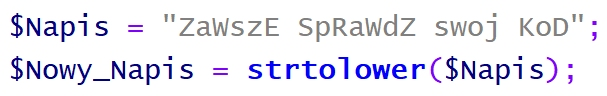
Pytanie nr 595
W języku JavaScript zdefiniowano obiekt Samochod. Aby wywołać jedną z metod tego obiektu, należy zapisać
A. Samochod.()
B. Samochod.kolor
C. Samochod.spalanie()
D. Samochod.spalanie_na100
Pytanie nr 596
W języku JavaScript podany w ramce fragment funkcji ma za zadanie
A. wyświetlić wszystkie elementy tablicy
B. policzyć sumę wszystkich elementów tablicy
C. dodać do każdego elementu tablicy stałą wartość
D. wprowadzić do każdego elementu tablicy aktualną wartość zmiennej i

Pytanie nr 597
Który z wymienionych poniżej języków jest typowo front-endowy (wykonywany po stronie klienta)?
A. Node.js
B. CSS
C. PHP
D. Perl
Pytanie nr 598
Poniżej została przedstawiona obsługa
A. zmiennych tekstowych
B. bazy danych
C. ciasteczek
D. sesji
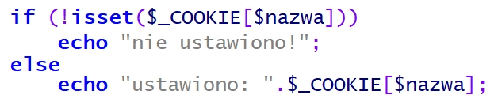
Pytanie nr 599
Weryfikację kompletności formularza, działającą po stronie przeglądarki, należy zrealizować w języku
A. CSS
B. PHP
C. JavaScript
D. Ruby on Rails
Pytanie nr 600
W języku PHP, aby prawidłowo obsłużyć połączenie z bazą danych MySQL, ostatnią operacją, powinno być zastosowanie polecenia
A. mysqli_close
B. mysql_exit
C. exit
D. die
Pytanie nr 601
W języku PHP wykonano operację przedstawioną w ramce. Aby wyświetlić wszystkie wyniki tego zapytania należy
A. wyświetlić zmienną $db
B. zastosować polecenie mysql_fetch
C. zastosować pętlę z poleceniem mysqli_fetch_row
D. zaindeksować zmienną tab, tab[0] to pierwsze imię

Pytanie nr 602
Jaką wartość przyjmie zmienna x po wykonaniu kodu PHP przedstawionego w ramce?
A. Liczby wierszy dodanych do tabeli produkty
B. Liczby wierszy znajdujących się w bazie danych
C. Liczby wierszy przetworzonych zapytaniem DELETE FROM
D. Liczby wierszy tabeli produkty, dla których pole status jest większe od zera
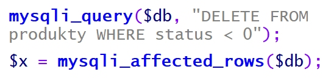
Pytanie nr 603
Komentarz w kodzie PHP można umieścić pomiędzy znakami
A. /? ... ?/
B. /* ... */
C. <? ... ?>
D. <!-- ... -->
Pytanie nr 604
W przedstawionym fragmencie algorytmu zastosowano
A. dwie pętle
B. jedną pętlę
C. jeden blok decyzyjny
D. trzy bloki operacyjne (procesy)
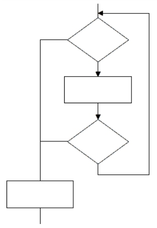
Pytanie nr 605
Do optymalnej realizacji algorytmu szukającego największej z trzech podanych liczb a, b i c, wystarczy zastosować
A. jedną pętlę
B. dwie tablice
C. dwa warunki
D. pięć zmiennych
Pytanie nr 606
Które wyrażenie logiczne w języku PHP sprawdza, czy zmienna1 należy do przedziału jednostronnie domkniętego <-5, 10)?
A. $zmienna1 >= -5 || $zmienna1 < 10
B. $zmienna1 <= -5 || $zmienna1 < 10
C. $zmienna1 >= -5 && $zmienna1 < 10
D. $zmienna1 <= -5 && $zmienna1 < 10
Pytanie nr 607
Przedstawiona w języku C++ definicja typu wyliczeniowego sprawi, że enumerator CZWARTEK będzie równy
A. napisowi "CZWARTEK"
B. napisowi 'CZWARTEK'
C. liczbie 1
D. liczbie 4
Pytanie nr 608
Tablica tab[] jest wypełniona dowolnymi liczbami całkowitymi. Jaka wartość znajdzie się w zmiennej zm2 po wykonaniu prezentowanego fragmentu kodu?
A. Suma liczb z tablicy
B. Suma liczb od 1 do 10
C. Średnia arytmetyczna liczb z tablicy
D. Średnia geometryczna liczb od 0 do 9
Pytanie nr 609
W języku JavaScript metoda getElementById() odwołuje się do
A. zmiennej liczbowej
B. klasy zdefiniowanej w CSS
C. znacznika HTML o podanym id
D. znacznika HTML o podanej nazwie klasy
Pytanie nr 610
W języku C++ funkcja zwracająca wynik potęgowania, działająca na dwóch parametrach wejściowych: liczbie x i wykładniku w, ma deklarację
A. int potega(int x);
B. int potega(int x, int w);
C. void potega(int x, int w);
D. void potega(int x, int w, int wynik);
Pytanie nr 611
Aby skorzystać ze skryptu zapisanego w pliku przyklad.js, należy połączyć go ze stroną za pomocą kodu
A. <script>przyklad.js</script>
B. <script src="przyklad.js"></script>
C. <script link="przyklad.js"></script>
D. <link rel="script" href="przyklad.js">
Pytanie nr 612
Programista napisał w języku C++ pętlę, która miała obliczyć wynik działania 5! (5! = 1 * 2 * 3 * 4 * 5). Popełnił jednak błąd logiczny polegający na tym, że
A. zmienna a powinna być inicjowana wartością 0 zamiast 1
B. parametr i pętli powinien być inicjowany wartością 0 zamiast 1
C. parametr i pętli powinien być dekrementowany zamiast inkrementowany
D. w drugim parametrze pętli powinno być porównanie i < 6 zamiast i < 5
Pytanie nr 613
Który ze sposobów komentowania kodu nie jest stosowany w kodzie PHP?
A. # komentarz
B. // komentarz
C. /* komentarz */
D. <!-- komentarz -->
Pytanie nr 614
Klucz obcy w tabeli jest tworzony po to, aby
A. łączyć go z innymi kluczami obcymi tabeli
B. stworzyć formularz wpisujący dane do tabeli
C. umożliwić jednoznaczną identyfikację rekordu w tabeli
D. zdefiniować relację 1..n wiążącą go z kluczem głównym innej tabeli
Pytanie nr 615
Które ze stwierdzeń dotyczących klucza podstawowego jest prawdziwe?
A. Jest unikalny w obrębie tabeli
B. Składa się tylko z jednego pola
C. Może przyjmować tylko wartości liczbowe
D. Dla tabeli z danymi osobowymi może być to pole nazwisko
Pytanie nr 616
W języku SQL aby zmodyfikować dane w tabeli, należy posłużyć się poleceniem
A. CREATE
B. UPDATE
C. SELECT
D. JOIN
Pytanie nr 617
Które zapytanie SQL posłuży do wyszukania z przedstawionej tabeli wyłącznie wszystkich imion i nazwisk pacjentów urodzonych przed rokiem 2002?
A. SELECT * FROM Pacjenci WHERE rok_urodzenia <= 2002;
B. SELECT * FROM Pacjenci WHERE rok_urodzenia LIKE 2002;
C. SELECT imie, nazwisko FROM Pacjenci WHERE rok_urodzenia < 2002;
D. SELECT imie, nazwisko FROM Pacjenci WHERE data_ostatniej_wizyty < 2002;
Pytanie nr 618
Aby utworzyć tabelę, należy się posłużyć poleceniem
A. INSERT INTO
B. ALTER TABLE
C. CREATE TABLE
D. CREATE DATABASE
Pytanie nr 619
Wynikiem uruchomienia zapytania SQL jest
A. liczba wszystkich uczniów
B. średnia ocen wszystkich uczniów
C. liczba uczniów, których średnia ocen wynosi 5
D. suma ocen uczniów, których średnia ocen wynosi 5

Pytanie nr 620
Aby wyświetlić jedynie imię, nazwisko i ulicę wszystkich mieszkańców, należy zastosować zapytanie
A. SELECT * FROM Mieszkancy, Adresy ON Mieszkancy.id = Adresy.id;
B. SELECT * FROM Mieszkancy JOIN Adresy ON Adresy.id = Mieszkancy.Adresy.id;
C. SELECT imie, nazwisko, ulica FROM Mieszkancy, Adresy ON Mieszkancy.Adresy_id = Adresy.id;
D. SELECT imie, nazwisko, ulica FROM Mieszkancy JOIN Adresy ON Mieszkancy.Adresy_id = Adresy.id;
Pytanie nr 621
Przedstawiona baza danych zawiera trzy tabele i dwie relacje. Aby wyświetlić dane wszystkich lekarzy przypisanych do konkretnego pacjenta, należy przyrównać klucze
A. Lekarze.id = Recepty.id
B. Lekarze.id = Pacjenci.id
C. Lekarze.id = Pacjenci.Lekarze_id
D. Lekarze.id = Pacjenci.Recepty_id

Pytanie nr 622
W wyniku połączenia relacją kluczy głównych dwóch tabel otrzymuje się relację typu
A. wiele do wielu
B. jeden do wielu
C. jeden do jednego
D. wiele do jednego
Pytanie nr 623
Obiektem służącym w bazie danych do podsumowywania, wyświetlania i wydruków danych jest
A. raport
B. zapytanie
C. formularz
D. zestawienie
Pytanie nr 624
W bazie danych zdefiniowano tabelę Mieszkancy wypełnioną danymi. Aby usunąć tę tabelę wraz z zawartością, należy posłużyć się poleceniem
A. DROP TABLE Mieszkancy;
B. DELETE FROM Mieszkancy;
C. ALTER TABLE Mieszkancy;
D. TRUNCATE TABLE Mieszkancy;
Pytanie nr 625
Aby odebrać uprawnienia użytkownikowi, należy zastosować polecenie
A. DELETE
B. REVOKE
C. DELETE PRIVILEGES
D. GRANT NO PRIVILEGES
Pytanie nr 626
Aby aplikacja PHP mogła komunikować się z bazą danych, niezbędne jest w pierwszej kolejności wywołanie funkcji o nazwie
A. mysqli_close
B. mysqli_connect
C. mysqli_select_db
D. mysqli_create_db
Pytanie nr 627
Który z wymienionych znaczników języka HTML może posłużyć do budowy struktury strony internetowej?
A. <em>
B. <aside>
C. <input>
D. <mark>
Pytanie nr 628
Logo systemu CMS o nazwie Joomla! to
A. A
B. B
C. C
D. D
Pytanie nr 629
Język HTML dysponuje nagłówkami do budowania hierarchii treści. Nagłówki te występują jedynie w zakresie
A. h1 - h4
B. h1 - h6
C. h1 - h8
D. h1 - h10
Pytanie nr 630
W języku HTML zdefiniowano odnośnik do strony internetowej. Aby strona otwierała się w nowym oknie lub zakładce przeglądarki, należy dopisać do definicji odnośnika atrybut
A. rel = "next"
B. rel = "external"
C. target = "_blank"
D. target = "_parent"
Pytanie nr 631
Która lista jest interpretacją przedstawionego kodu?
A. A
B. B
C. C
D. D
Pytanie nr 632
Na potrzeby strony internetowej zdefiniowano styl. Styl będzie przypisany tylko do niektórych znaczników (np. niektórych nagłówków, kilku akapitów). W takim wypadku, aby przypisać styl do kilku konkretnych znaczników, najlepiej jest zastosować
A. klasę
B. pseudoklasę
C. identyfikator
D. selektor akapitu
Pytanie nr 633
Aby zdefiniować krój czcionki w stylu CSS, należy użyć właściwości
A. text-style
B. font-style
C. text-family
D. font-family
Pytanie nr 634
Który z obrazów został sformatowany za pomocą przedstawionego stylu CSS?
A. A
B. B
C. C
D. D
Pytanie nr 635
Aby na stronie internetowej wyświetlić logo, którego tło jest przezroczyste, należy zastosować format
A. JPG
B. CDR
C. PNG
D. BMP
Pytanie nr 636
Aby obraz umieszczony na stronie internetowej automatycznie skalował się do rozmiaru ekranu, na którym jest wyświetlana strona, należy
A. oba jego wymiary ustawić w pikselach
B. jeden z jego wymiarów ustawić w pikselach
C. nie modyfikować obu jego wymiarów stylami CSS
D. jego szerokość ustawić w wartościach procentowych
Pytanie nr 637
W procesie przygotowywania grafiki na stronę internetową należy wyciąć jedynie jej fragment. Taka operacja to
A. skalowanie
B. kadrowanie
C. odbicie obrazu
D. łączenie warstw
Pytanie nr 638
W aplikacji internetowej komunikat powinien pojawiać się tylko wtedy, gdy dany użytkownik jest na stronie po raz pierwszy. Którą funkcję PHP należy w tym celu zastosować?
A. define
B. setcookie
C. session_destroy
D. mysqli_change_user
Pytanie nr 639
Przedstawiona definicja formularza została zastosowana na stronie internetowej, która wysyła dane do pliku zapisanego w języku PHP. W której tablicy będą dostępne dane z formularza?
A. $_GET
B. $_POST
C. $_COOKIE
D. $_ACTION
Pytanie nr 640
W skrypcie JavaScript zastosowano metodę DOM getElementsByClassName('akapit'). Metoda ta odwoła się do akapitu
A. <p>akapit</p>
B. <p id="akapit">akapit2</p>
C. <p href="/akapit">akapit3</p>
D. <p class="akapit">akapit4</p>
Pytanie nr 641
Dla przedstawionego fragmentu kodu walidator HTML zwróci błąd, ponieważ
A. zastosowano błędny znacznik do wyświetlenia obrazu
B. zastosowano nieznany atrybut alt
C. nie znaleziono obrazu kwiat.jpg
D. nie domknięto cudzysłowu
Pytanie nr 642
Program FileZilla może posłużyć do
A. kompilacji skryptu na stronie
B. walidacji strony internetowej
C. publikacji strony internetowej
D. debugowania skryptu na stronie
Pytanie nr 643
Przedstawiony blok reprezentuje czynność
A. zastosowania gotowej procedury lub funkcji
B. wczytania lub wyświetlenia danych
C. wykonania zadania w pętli
D. podjęcia decyzji
Pytanie nr 644
Aby zadeklarować pole klasy, do którego mają dostęp jedynie metody tej klasy i pole to nie jest dostępne dla klas pochodnych, należy użyć kwalifikatora dostępu
A. public
B. private
C. protected
D. published
Pytanie nr 645
Pętla while powinna być wykonywana tak długo, jak długo zmienna x będzie przyjmowała wartości z przedziału obustronnie otwartego (-2, 5). Zapis tego warunku w nagłówku pętli za pomocą języka PHP ma postać
A. ($x > -2) && ($x < 5)
B. ($x == -2) && ($x < 5)
C. ($x < -2) || ($x > 5)
D. ($x > -2) || ($x > 5)
Pytanie nr 646
Po wykonaniu się przedstawionego fragmentu kodu języka C/C++ zmiennej o nazwie zmienna2 zostanie
A. przypisany adres zmiennej o nazwie zmienna1
B. przypisana ta sama wartość, co przechowywana w zmienna1
C. przypisana zamieniona na łańcuch wartość przechowywana w zmienna1
D. przypisana liczba w kodzie binarnym odpowiadająca wartości przechowywanej w zmienna1
Pytanie nr 647
W języku PHP float reprezentuje typ
A. logiczny
B. całkowity
C. łańcuchowy
D. zmiennoprzecinkowy
Pytanie nr 648
Którym słowem kluczowym, w języku z rodziny C należy posłużyć się, aby przypisać alternatywną nazwę dla istniejącego typu danych?
A. enum
B. union
C. switch
D. typedef
Pytanie nr 649
Instrukcja for może być zastąpiona instrukcją
A. case
B. while
C. switch
D. continue
Pytanie nr 650
Przedstawiony kod źródłowy, zapisany w języku C++, ma za zadanie dla wprowadzanych dowolnych całkowitych liczb różnych od zera wypisać
A. liczby pierwsze
B. wszystkie liczby
C. tylko liczby parzyste
D. tylko liczby nieparzyste
Pytanie nr 651
DOM dostarcza metod i własności, które w języku JavaScript pozwalają na
A. manipulowanie zadeklarowanymi w kodzie łańcuchami
B. wysłanie danych formularza bezpośrednio do bazy danych
C. wykonywanie operacji na zmiennych przechowujących liczby
D. pobieranie i modyfikowanie elementów strony wyświetlonej przez przeglądarkę
Pytanie nr 652
Testy dotyczące skalowalności oprogramowania mają za zadanie sprawdzić, czy aplikacja
A. ma odpowiednią funkcjonalność
B. jest odpowiednio udokumentowana
C. potrafi działać przy zakładanym i większym obciążeniu
D. jest zabezpieczona przed niedozwolonymi operacjami, np. dzielenie przez zero
Pytanie nr 653
Który z komentarzy opisuje zadanie zdefiniowanej w języku PHP funkcji?
A. /* Funkcja zwraca wartość wyższą z dwóch podanych, gdy są równe zwraca wartość -1 */
B. /* Funkcja zwraca wartość niższą z dwóch podanych, gdy są równe zwraca wartość -1 */
C. /* Funkcja zwraca wartość wyższą z dwóch podanych, gdy są równe zwraca wartość $a */
D. /* Funkcja zwraca wartość niższą z dwóch podanych, gdy są równe zwraca wartość $a */
Pytanie nr 654
W relacyjnych bazach danych, jeżeli dwie tabele są połączone za pomocą ich kluczy głównych, mamy do czynienia z relacją
A. 1..1
B. 1..n
C. n..1
D. n..n
Pytanie nr 655
Normalizacja tabel jest procesem, który ma na celu
A. dodanie rekordów do bazy
B. przedstawienie graficzne bazy
C. jedynie utworzenie tabel i relacji w bazie
D. sprawdzenie i optymalizację bazy danych
Pytanie nr 656
Wbudowanym w pakiet XAMPP narzędziem służącym do zarządzania bazą danych jest
A. MySQL Workbench
B. phpMyAdmin
C. pgAdmin
D. SQLite
Pytanie nr 657
Wskaż zapytanie, w którym dane zostały posortowane.
A. SELECT DISTINCT produkt, cena FROM artykuly;
B. SELECT AVG(ocena) FROM uczniowie WHERE klasa = 2;
C. SELECT nazwisko FROM firma WHERE pensja > 2000 LIMIT 10;
D. SELECT imie, nazwisko FROM mieszkancy WHERE wiek > 18 ORDER BY wiek;
Pytanie nr 658
Funkcją agregującą zwracającą liczbę rekordów jest
A. SUM
B. AVG
C. COUNT
D. NUMBER
Pytanie nr 659
Dana jest tabela zwierzeta z polami: nazwa, gatunek, gromada, cechy, dlugosc_zycia. Dla dowolnego zestawu danych, aby wyświetlić nazwy tych zwierząt, które żyją przynajmniej 20 lat oraz są ssakami, należy wydać zapytanie:
A. SELECT nazwa FROM zwierzeta WHERE gromada = 'ssak';
B. SELECT nazwa FROM zwierzeta WHERE dlugosc_zycia >=20;
C. SELECT nazwa FROM zwierzeta WHERE dlugosc_zycia >=20 AND gromada = 'ssak';
D. SELECT nazwa FROM zwierzeta WHERE dlugosc_zycia >=20 OR gromada = 'ssak';
Pytanie nr 660
W tabeli personel znajdują się pola: imie, nazwisko, pensja, staz. Aby otrzymać średnią pensję pracowników, dla których staż wynosi od 10 do 20 lat pracy włącznie, należy wykonać kwerendę:
A. SELECT COUNT(pensja) FROM personel WHERE staz >= 10 AND staz <= 20;
B. SELECT AVG(pensja) FROM personel WHERE staz >= 10 AND staz <= 20;
C. SELECT COUNT(*) FROM personel WHERE staz >= 10 AND staz <= 20;
D. SELECT AVG(*) FROM personel WHERE staz >= 10 AND staz <= 20;
Pytanie nr 661
Zapytanie z klauzulą JOIN stosuje się, aby
A. wywołać funkcję agregującą
B. zdefiniować klucz obcy dla tabeli
C. otrzymać wynik jedynie z jednej tabeli
D. uzyskać wyniki z dwóch tabel pozostających ze sobą w relacji
Pytanie nr 662
Aby usunąć tabelę należy zastosować kwerendę
A. DELETE
B. UNIQUE
C. DROP TABLE
D. TRUNCATE TABLE
Pytanie nr 663
Za pomocą przedstawionego zapytania w tabeli zostanie
A. zmieniona nazwa kolumny z nazwa1 na nazwa2
B. zmieniona wartość kolumny nazwa2 na DOUBLE
C. dodana kolumna nazwa2 typu zmiennoprzecinkowego
D. dodana kolumna nazwa2 przyjmująca wartość domyślną DOUBLE
Pytanie nr 664
Które tabele zostaną sprawdzone za pomocą przedstawionego polecenia?
A. Tabele, które zmieniły się od ostatniej kontroli lub nie zostały poprawnie zamknięte
B. Jedynie tabele, które nie zostały poprawnie zamknięte
C. Tabele, które zmieniły się w aktualnej sesji
D. Jedynie tabele referujące do innych
Pytanie nr 665
Jakie uprawnienia będzie miał użytkownik jan po wykonaniu na bazie danych przedstawionych poleceń?
A. Będzie mógł zmienić strukturę tabeli klienci
B. Będzie mógł usuwać rekordy z tabeli klienci
C. Będzie mógł wyszukiwać dane w tabeli klienci
D. Będzie mógł wstawiać rekordy do tabeli klienci

Pytanie nr 666
Witryna internetowa wysyła dane poufne za pomocą formularza do kodu PHP. Która metoda wysłania jest najbardziej bezpieczna?
A. Metoda GET, za pomocą protokołu HTTP
B. Metoda POST, za pomocą protokołu HTTP
C. Metoda GET, za pomocą protokołu HTTPS
D. Metoda POST, za pomocą protokołu HTTPS
Pytanie nr 667
Przedstawiony fragment kodu PHP ma za zadanie umieścić dane znajdujące się w zmiennych $a, $b, $c w bazie danych, w tabeli dane. Tabela dane zawiera cztery pola, z czego pierwsze to autoinkrementowany klucz główny. Które z poleceń powinno być przypisane do zmiennej $zapytanie?
A. SELECT '$a', '$b', '$c' FROM dane;
B. SELECT NULL, '$a', '$b', '$c' FROM dane;
C. INSERT INTO dane VALUES ('$a', '$b', '$c');
D. INSERT INTO dane VALUES (NULL, '$a', '$b', '$c');

Pytanie nr 668
Witryna internetowa ma mieć przedstawioną strukturę bloków. Aby uzyskać ten układ, należy znacznikom sekcji przypisać właściwości w następujący sposób:
A. float tylko dla bloku 5; clear dla bloku 2
B. float tylko dla bloków: 3, 4; clear dla bloku 5
C. float tylko dla bloku 2; clear dla bloków: 3, 4
D. float tylko dla bloków: 2, 3, 4; clear dla bloku 5
Pytanie nr 669
Podstawowym zadaniem systemu CMS jest oddzielenie treści serwisu informacyjnego od jego wyglądu. Efekt ten jest uzyskany poprzez generowanie zawartości
A. z bazy danych oraz wyglądu ze zdefiniowanego szablonu
B. z bazy danych oraz wyglądu za pomocą atrybutów HTML
C. ze statycznych plików HTML oraz wyglądu ze zdefiniowanego szablonu
D. ze statycznych plików HTML oraz wyglądu za pomocą technologii FLASH
Pytanie nr 670
W języku HTML znacznik <i> nadaje znakom taki sam wizualny efekt jak znacznik
A. <u>
B. <em>
C. <pre>
D. <strong>
Pytanie nr 671
Przedstawiono tabelę zdefiniowaną kodem HTML, bez formatowania CSS. Który z fragmentów kodu HTML odpowiada pierwszemu wierszowi tabeli?
A. A
B. B
C. C
D. D
Pytanie nr 672
Aby obraz wstawiony kodem HTML mógł być interpretowany przez programy wspomagające osoby niewidzące, należy zdefiniować atrybut
A. alt
B. src
C. sizes
D. border
Pytanie nr 673
Na obrazie przedstawiono efekt formatowania stylami CSS oraz kod HTML generujący ten przykład. Zakładając, że marginesy wewnętrzne wynoszą 50 px, a zewnętrzne wynoszą 20 px, styl CSS dla obrazu ma postać
A. A
B. B
C. C
D. D
Pytanie nr 674
W kodzie CSS zdefiniowano cztery klasy formatowania, których następnie użyto do formatowania paragrafów. Efekt widoczny na rysunku powstał po zastosowaniu klasy o nazwie
A. format1
B. format2
C. format3
D. format4
Pytanie nr 675
W jakim formacie należy zapisać obraz, aby mógł być wyświetlony na stronie internetowej z zachowaniem przezroczystości?
A. JPG
B. BMP
C. PNG
D. CDR
Pytanie nr 676
Na potrzeby strony internetowej przygotowano grafikę rysunek.jpg o rozmiarze: szerokość 200 px, wysokość 100 px. Aby wyświetlić tę grafikę jako miniaturę – pomniejszoną z zachowaniem proporcji, można zastosować znacznik
A. <img src="rysunek.png">
B. <img src="rysunek.png" style="width: 50px">
C. <img src="rysunek.png" style="width: 25px; height:50px;">
D. <img src="rysunek.png" style="width: 25px; height:25px;">
Pytanie nr 677
Której funkcji edytora grafiki rastrowej należy użyć, aby przygotować rysunek do wyświetlenia na stronie w ten sposób, żeby było widoczne tylko to, co znajduje się w ramce?
A. Odbicie
B. Skalowanie
C. Kadrowanie
D. Perspektywa
Pytanie nr 678
Przedstawiony fragment dokumentu HTML z kodem JavaScript spowoduje, że po wciśnięciu przycisku
A. obraz1.png zostanie ukryty
B. obraz2.png zostanie ukryty
C. obraz2.png zostanie zastąpiony przez obraz1.png
D. obraz1.png zostanie zastąpiony przez obraz2.png
Pytanie nr 679
Co spowoduje fragment skryptu w języku JavaScript?
A. Przypisze zmienną n do zmiennej s
B. Wyświetli długość napisu ze zmiennej n
C. Przypisze zmiennej s wartość odpowiadającą długości napisu ze zmiennej n
D. Przypisze zmiennej s fragment napisu ze zmiennej n, o określonej przez zmienną length długości
Pytanie nr 680
Przedstawiony kod PHP nawiązuje połączenie z serwerem bazy danych. Jakiego typu operacje powinny się znaleźć w instrukcji warunkowej w miejscu trzech kropek?
A. Zamknięcie bazy danych
B. Obsługa błędu połączenia
C. Obsługa danych pobranych z bazy
D. Komunikat o pomyślnym połączeniu z bazą
Pytanie nr 681
Który znacznik należący do sekcji head dokumentu HTML w wersji 5 jest wymagany przez walidator języka HTML, a jego brak jest zgłaszany jako błąd (error)?
A. title
B. link
C. meta
D. style
Pytanie nr 682
Za pomocą którego protokołu można opublikować stronę internetową na serwerze?
A. FTP
B. ICMP
C. SMTP
D. NNTP